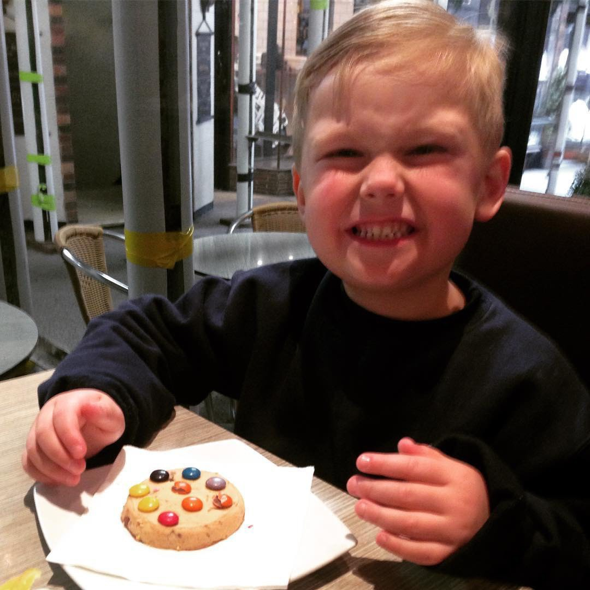
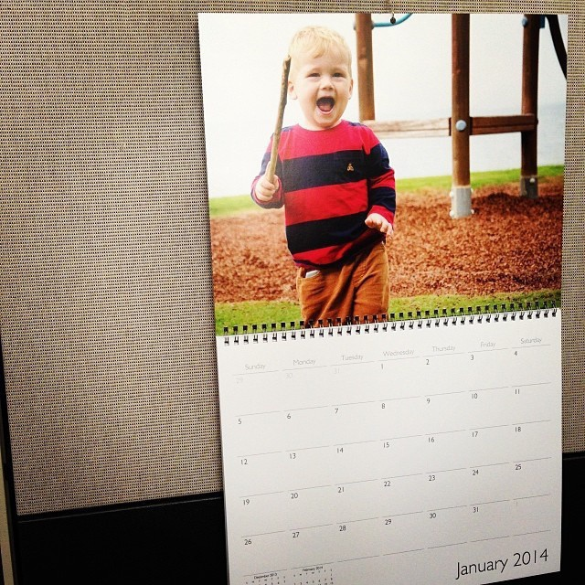

Photoblogging Challenge Day 6: I decided to bisect this PB&J sandwich. üì∑ #mbaug

Photoblogging Challenge Day 5: The pattern on my jumper has a bit of flow to it. üì∑ #mbaug

Down the Podcasting Microphone Rabbit-hole
Oh boy, it’s happening to me. Some months ago when I made the decision to start doing some podcasting, I did my research and selected the Rode Podcaster microphone as my weapon of choice.
It’s been working fine for me, but at the same time, I’ve never been totally certain that it’s the right mic for me. I’m an amateur and I’m learning as I go but the Podcaster struck me as sounding somewhat ‘thin’. Plus the gain from the mic was really low. Research suggests this makes absolutely no difference whatsoever to the end result but it still made me curious about other options.
The Podcaster was not cheap so I’ve been reticent to spend more money on hardware. Yet I could resist it when I saw a good price on the new Audio Technica ATR 2100-X which is a combination USB/XLR microphone. I’m still in the USB world directly connecting to my iMac. I haven’t - and at this stage don’t want to - go down the preamp rabbit hole.
Today the ATR-2100x arrived. I’ve given it a 45 second test to date, so this doesn’t act as a review. What I noticed immediately is that it sounded richer and the gain was definitely higher. However, the dynamic range was therefore more limited compared with the Rode Podcaster. In the test I did, the Podcaster handled it all whereas the ATR-2100x experienced clipping.
I will keep experimenting and will likely record my next episode of Keep Practising with the new Audio Technica.
All this is to say, it appears I may be starting the slippery slide towards becoming an audio gearhead. Send help!
Photoblogging Challenge Day 4: Peace walking to my new office looking at Perth CBD. üì∑ #mbaug
Photoblogging Challenge Day 3: Bug üì∑ #mbaug

Judging by this video my FetchTV DVR is going to have better universal search than AppleTV.
Photoblogging Challenge Day 2: Floating üì∑. This boat once floated around the entire globe. #mbaug

Photoblogging Challenge Day 1: Up üì∑ #mbaug

If you‚Äôd like to hear me and a mate talk about NBL basketball üèÄ and team composition leading into the new season, then listen to NBL Pocket Podcast üéô

Want to read: Olive, Again by Elizabeth Strout üìö
I’ve linked IndieBookClub to my micro.blog account. Not as many bells and whistles as GoodReads but simple and straightforward to use.
Currently reading: Chosen People by Robert Whitlow üìö
Fastmail promotes its own Hey-style methods
Rethink what email can do for you
We also let you focus on your workflow by taking care of your privacy, which we protect with features like asking before showing remote images or proxying tracking pixels to keep senders from tracking what you do with your email.
I can’t help but think this entire Fastmail blog entry has been inspired by HEY.
Keep Practising 12: Wrestling
I’ve always noticed a distinct intersection between those who like basketball and those who like wrestling. In this episode I discuss my history of watching wrestling. It used to be WWF/WWE, but these days I am more excited by EPW (Explosive Pro Wrestling) - an indie show that operates out of Perth, Western Australia.
In Nerd Corner I talk about my recent dalliance with the fundraising/supporter platform Ko-fi.
It was exciting to see an article of mine linked to my Brett Terpstra. Never had that experience before!
Does anybody have direct experience with Autex Peel ‘n Stick acoustic treatment tiles? I’m contemplating some for my study.
For the heck of it I set up a ko-fi account. I‚Äôm sure the revenue will start rolling in any minute now… üòÇüí∞‚òïÔ∏è
Keep Practising: 12 - Tipping the TBT2020 Winner
I was bereft not being able to record an NBL Pocket Podcast today. So to assuage my sadness I have brought in my son, David, to provide the hot tip. Who does he think will win the tournament? Tune in and find out!
Be sure also to check out the daily podcast we’ve been recording at the NBL Pocket Podcast. Each day we have broken down the TBT2020 tournament and provided a perspective from the point of view of the Australian NBL.
Recapping the best day yet of the TBT. üèÄ NBL Pocket Podcast
I‚Äôm having so much fun recording a daily TBT basketball üèÄ wrap on The NBL Pocket Podcast. I‚Äôve missed hoops, so watching games daily then talking about them is a salve for the soul. Give it a listen!
Subscribe To NBL Pocket Podcast
A quick public service announcement to point you towards the NBL Pocket Podcast. Joe has been kind enough to have me on each day as we discuss the events of the TBT from an Australian perspective.
If you like basketball be sure to listen and subscribe!
So great to talk TBT basketball üèÄ from an Australian perspective. Listen to the NBL Pocket Podcast for the full rundown.üéô
My new employer has provided me with the new iPhone SE. This thing is tiny. Too small in fact. My fingers are too big for this screen and keyboard. So for the first time in my life, I’m running with two phones.
I’m thinking about going all-in with Microsoft Office as a trial, especially focusing on Teams and OneNote. I’ve a tendency to have stuff strewn across apps. Plus it’s a cross-platform solution.
I’ve been trialling krisp.ai for video conference noise reduction. I’ve only used it in my home office where the prevailing noise is a spinning drive array, but I think it’s been good? I need to remember to toggle it to test its efficacy.
My Last Day with CCI
Today marks the end of a personal era for me; it is the last day of my employment with the Chamber of Commerce and Industry of Western Australia. I’ve worked at CCI for 3 months short of 13 years.
When I arrived, my plan was to stay for no more than 2. This speaks to the opportunities I have enjoyed while with the organisation. Over the time I have worked in Policy, Economics, Membership and the Entrepreneurs’ Programme, plus other temporary assignments.
I have addressed CCI’s General Council and the Board, and managed Member Forums and Committees. I have represented the organisation before Federal and State Parliamentary enquiries. I have developed and advocated policy positions, been in the media and analysed government budgets. I’m happy that my linkages with CCI are indelibly marked in newspaper articles and the annals of Hansard.
I have worked with people that invested in me, and trusted me. I owe much to many, including John Nicolaou, Frances Parnell, Dana Mason, Kristian Stratton, Jessica Shaw MLA, Barbara Jerkov and James Pearson: all former CCI colleagues who played various roles in my journey, each in different but valuable ways.
Most importantly, at CCI I have been provided a platform to help and support the WA business community. It has been my passion to see successful commercial enterprise operate while maintaining a social compact with the community to provide fair and reasonable opportunity, and improve all our lives as a result. Working to support this has kept me engaged throughout my CCI career.
I am proud to have dedicated 13 years of the one life I have to this organisation. I leave knowing that I will be continuing to deliver the Entrepreneurs’ Programme. This is a role I enjoy that is aligned with my passion: supporting local firms in their challenge to grow, succeed, and be part of the fabric of community.
The birthday present I bought myself arrived today: a Keychron K2 keyboard with Cherry Brown switches. It’s delightfully chunky and immediately I’ve found myself typing with my wrists up, as my typing teacher taught me on an old typewriter at school.
Keep Practising: 11 - Graeme Speak, CEO & Founder of BankVault
I welcome a special guest to the show, Graeme Speak of BankVault. BankVault has developed a cybersecurity product that can circumvent security risks such as key logging and man-in-the-middle attacks, by offering passwordless logins.
As well as discussing the BankVault product, Graeme discusses his approach to entrepreneurship. We talk about the differences between business in Perth, Western Australia where BankVault has been founded, and San Francisco, California where he is currently based.
A conversation about the risks and benefits of kitesurfing also ensues.
Configuring Preside on iPadOS
In an earlier post I wrote about how I replicated a HEY-style workflow with other email applications.
I thought some detail about how I’ve configured my preferred iPadOS email client, Preside to work in a similar way might be in order.
Preside is an amazing power-user email application for iOS. The application features a myriad of options. The hardest thing about configuring Preside is knowing where the particular setting or customisation might be found within its many nested folders of preferences and settings. What I have found is that my configuration has taken some time and has come together piece-by-piece as I discover another element of Preside’s functionality. Even now, I don’t consider my customisation of Preside done. I’m sure I will continue to tweak it.
I’m going to focus on my use of Preside on iPad. While Preside works just the same on iPhone, its settings don’t sync across the platforms. It’s been so hard to get the iPad settings right that I don’t even want to try to replicate it on iPhone. But there’s nothing stopping my approach from working on either platform. I beg of developer Rich Waters - please give us some method to sync settings!
With that preamble taken care of, on with the show.
Dashboard View
My Preside dashboard looks as such:

You see a number of favourite folders and smart searches across the top. A list view of emails down the left hand sidebar and the email content on the right.
How did I get the setup to look exactly this way? I wish I could tell you. Again, with Preside’s settings being so deep, I can’t exactly remember what toggles I flipped to get it looking this way. I’m sorry. I wish I could do better.
I can only show the following setting screen that shows how I have enabled the smart search folders:

My Preside Configuration
You will note that a number of the folders have ‘snowflake’ icons next to them. That’s a feature of Preside, in that each folder can be assigned a ‘type’. So I’ve assigned each of my SaneBox-managed folders as a context. This means that Preside will check those folders in the same way that it checks the Inbox, meaning my unread counts are up-to-date.
This screenshot shows the representation of these folders within my IMAP structure:

Looking at this, I notice I haven’t configured my Paper Trail as a context. Maybe this is something I need to resolve.
The ‘Focus & Reply’ and ‘Set Aside’ buttons along the top bar of my Dashboard are saved searches. They look for emails that have an IMAP tag assigned to them. You might recall in my post about MailMate, I’ve set up a toolbar button that will add these tags to a chosen email. As these tags are synchronised at the server level via Fastmail, Preside can see them, and the tag can be used as a variable in a saved smart search folder, as I’ve done.
What is great about Preside is that it too can apply IMAP tags. I use the ‘lightning bolt’ quick action to do this. I highlight the mail I might wish to ‘Set Aside’ or ‘Focus & Reply’ and choose the ‘Tag’ option. This brings up a picker of IMAP tags that I can apply, so I just choose which one I want to use.

This is a snapshot into how the ‘Focus & Reply’ smart search was configured:

And here is an example of how I enabled a SaneBox-managed ‘Paper Trail’ folder to show:

Desktop Level Email Features on iPad
With this configured I feel I’m very close to the holy grail of a macOS level email workflow on iOS.
I’ve tried many email clients. Some are rudimentary (Outlook). Some are unreliable (Mail.app). Some have opinionated design and callbacks to their own servers (Spark). Some are ridiculously expensive (Superhuman).
Preside is easily the greatest, most complicated and somewhat ugly email client on iOS. It has grown on me the way an ugly dog might find a way into your heart. You know it isn’t cute, but darn it if it doesn’t sit when it’s told and bring the ball back every time. It’s an email application that can learn new tricks - then you look back and don’t remember how you taught it. I want to give Preside a good old tickle behind the ear.
Govt urged to ditch COVIDSafe for GApple
Govt urged to ditch COVIDSafe for GApple - InnovationAus:
recently released testing data revealing that upon launch, COVIDSafe logged encounters 25 per cent or less between locked iPhones. After a series of updates and improvements, this figure is now between 25 to 50 per cent.
A switch to using the official tracing architecture within the Android/iOS platforms seems a sensible move to me.
My Random Thoughts from the WWDC Keynote
These are my thoughts on the 2020 Apple WWDC keynote, presented in the order they occurred as I watched the show.
I’ve not yet read any other feedback so these thoughts are non-affected by groupthink:
General
- The stagecraft and direction that Apple puts into these shows is amazing.
iOS
- Widgets on the home screen - finally!
- The new messages is great but still relies on everybody having iOS. Many of my friends are Android users, so I end up having to rely on WhatsApp. Even my attempts to transition them to Telegram or Signal failed.
- That’s a kick ass wheelchair that lady owns.
- No new maps for me In Australia.
iPadOS
- Sidebars - like a Mac!
- Search on the iPad seems like LaunchBar on the Mac, but it will probably be more like Spotlight, that is, not quite as good.
- The new Pencil and Scribble feature looks great
Apple Watch & AppleTV
- The scientific capability in Apple is incredible; the resources they can plough into movement sensing for exercise, surround sound, etc. is crazy.
Home
- Yes! Adaptive lighting. I’ve got some LifX bulbs and that app has dawn/dusk settings, but this looks way better.
- Is it time for me to get some security video cameras for the house? Whcih ones are best and most future proof?
macOS
- Apple have done translucent menu bars before. I still don’t like them.
- The spaced out menus are ugly.
- I wish I had friends who lived this perfect Apple experience of sharing ETAs with me, sending memojies, etc. It doesn’t happen in my world.
- I’ve been trialling a bunch of different browsers over the past week. Safari might win me back just in time.
Apple Silicon
- Of course it’s not called ARM Macs.
- Apple have built a hell of a competitive moat with Apple Silicon.
- Talk of Linux virtualisation but not Windows. I reckon that must be gone.
I’ve fully Rogue Amoebafied my Mac with Audio Hijack, Fission, Farrago, Loopback, SoundSource. Send help! // @rogueamoeba
I tried out Otter.ai today which does voice to text transcription, recognising the different speakers. It’s kind of amazing, but I’m not confident of the privacy policy.
Keep Practising: 10 - Why Am I Doing This?
I consider why I am doing this podcast, and why I gave it the name Keep Practising.
In Nerd Corner, I note my disappointment with how Apple has handled the HEY App Store situation, but note my pride in how my article about replicating the Hey workflow in regular apps has been received.
Brené Brown, Unlocking Us, Episode 1
I wonder if @Fastmail have any idea of the love for them on micro.blog. They should drop in and say hi. In the words of @cheri, we would probably all throw our tech panties at them.
I edited my forthcoming podcast with a trial version of Hindenburg Journalist. It took some getting used to coming from Ferrite and it’s direct manipulation with the Apple Pencil. The main missing feature I noticed was ripple delete. I’m tempted to buy a license, though.
My home page on the web needs to be redone. But that needs motivation and an idea. I’m devoid of both.
I’ve been playing around with Ecamm Live this afternoon. I have no reason to do a live stream, but it’s fun to experiment.
Addendum: Replicating Hey.com Features in MailMate
It has been pointed out by Martin McCallion that I failed to explain how I generated the “People Pages” view that is inherent within Hey into my own MailMate reconstruction.
To do this I created a new Smart Mailbox with the following mailbox filtering criteria:

Furthermore, in the same mailbox configuration window, but under the ‘Submailboxes’ tab be sure to select the checkbox to create submailboxes, and choose an appropriate filter. For creating People Pages, I went with the ‘From | Name’ option.

My thanks to Martin for drawing this omission to my attention, and I hope this helps others.
It was fun and surprising to be listening to the latest episode of Mac Power Users (540) and hear my older review of MailMate mentioned and linked in the show notes.
I‚Äôm contemplating shutting down my ad hoc blot.im blog over at canion.me and bringing it all over to micro.blog. Any reason not to do so? Then what do I do with the canion.me domain? Decisions, decisions…
Replicating Hey.com Features in Regular Email Systems
Basecamp has released their much-anticipated1 take on email, Hey. As a long-time fan of Basecamp and a light user of their Basecamp Personal2 product I was interested to see how they were going to address the issue of email.
First off, Hey looks beautiful. Beyond looks it has a number of interesting features to support a healthier and more efficient email workflow.
Hey is a subscription service and I have no issue with this whatsoever. I already pay for email services, preferring to be a customer of an email service provider, rather than the product itself3. I’m a happy user of Fastmail which I use in conjunction with SaneBox, MailMate on my iMac, and Preside on iOS.
For my purposes then, I’m not looking for an email service that will allow me to migrate away from a free-of-charge provider.
Herein lies the problem, at least in terms of me being a customer of Hey. Hey is a standalone service. Unlike a typical email provider it doesn’t expose an IMAP interface which other apps can use. If it did this, it would probably lose all the pretty add-ons they have built into the system. Furthermore it doesn’t allow the use of a custom domain. You get a nice @hey.com email address but you can’t BYO a domain name. A key part of my email infrastructure is owning my domain and emails form a component of that. Moving to Hey would mean stepping away from that lovely setup. I like owning @andrewcanion.com and @canion.me.
For these reasons I quickly ascertained that Hey was not a product for me.
That’s not to say that it doesn’t have some clever workflows, and it does look pretty. I can’t replicate the pretty, but in watching the walkthrough demo by Jason Fried I was fairly certain I could replicate most of the functionality.
So to satisfy my own curiosity I worked with the products I already have - SaneBox and MailMate - to see if I could construct a Hey-style workflow.
Let’s step through the way I built my copy-cat workflow.
Triage - Yes or No
Hey lets you select whether new users will be added to your inbox (they call it an “Imbox” but I’m not going there).
I use SaneBox for this instead. It does the same sort of triage, using machine learning to determine whether a sender is important to you or not. If it thinks they are, it goes to your inbox. If not, it goes to an alternative “SaneLater” folder.
I have enabled notifications only for email that lands in my Inbox, so that matches the ‘quiet by design’ feature of Hey.
Focus & Reply
Within Hey, this is a neat bundle of messages that are tagged to be dealt with later, most ideally in a focused session of email. They sit as a little visual stack at the bottom of the window. I can’t match the visuals, but I should be able to match the functionality with MailMate.
I’ve created a new Smart Mailbox, named Focus & Reply that looks across All Messages, and filters as per these conditions:

Note the keyword designation. MailMate lets you apply keywords to any email. To make this easier, I’ve added a keywords toolbar to MailMate, and have it set to showing the two that are relevant to the Hey-style workflow. I have a magnifying glass for Focus & Reply, and a pushpin for Set Aside.

Now, if I click the icon on any email thread, it is tagged accordingly. I’ve enabled a column to show the keywords, so an email might look like this - note the magnifying glass:

Now only emails that I’ve tagged by clicking the magnifying glass will appear in the Focus & Reply smart mailbox.
Set Aside
In Hey, Set Aside is designated for mail that you want to reference later. These emails are also taken away from the Inbox view.
As with Focus & Reply, I’ve set the pushpin tag to act as the determinant. Together with another Smart Search, I’ve got this group of emails configured as such:

But to get the workflow where these are ‘out of view’ in my regular Inbox, I need to configure my Inbox view as well. So I’ve created an Unread Inbox, that works on a series of mailboxes and applies a condition to only show unread mail, as such:


Now if I want to reference my Set Aside email, I can click the relevant Mailbox in the Sidebar.

The Feed
Hey uses a concept of The Feed almost like a social media scroll of email incorporating newsletters, advisories and all the other non-timely information we get via email.
I created this with the help of SaneBox. All my The Feed smart folder does is show me the contents of the default SaneBox SaneNews folder. It generally knows what should go in there, and I can train it as I go simply by moving mail into that folder as I see fit.
Paper Trail
The Paper Trail in Hey is for receipts, invoices, and other such transactional information.
Here, I created a custom SaneBox folder to replicate this feature. As I get receipts and things, I will move a few into this email folder and SaneBox will quickly learn and take care of them for me in the future.
Other Email
For now, I’m still using the SaneLater mail folder to catch other less-important email. Looking at Hey, it seems email can only go to the Inbox, The Feed or The Paper Trail.
So for now, I’ve either got more features, or more confusion. Yet to be determined which that is.
People Pages
Hey has a concept of people pages where you can see everything that relates to a single individual.
MailMate has me covered quite well here although it doesn’t look as pretty as what Hey has achieved.
You will note from the image of my MailMate sidebar above that I have a People Pages folder. When I expand that, MailMate shows me a folder for each individual sender. Click any of those and only email from that person shows in the main window. The image below shows this, with disguised names for privacy reasons.

With that, I’ve got a focused view of each person as well.
2020-06-17: I have created an addendum to this post, providing some more detail as to how to create the People Pages smart mailbox.
Attachments
Hey surfaces attachments and looks to do a great job of this.
I am sure that MailMate can do some kind of filtering based on attachment content, but I couldn’t figure out a combination that would get this to work effectively4.
However, SaneBox offers the option to connect to a cloud storage provider and save email attachments to a folder in that storage. Optionally, it can strip the attachments from the original email.
I created a connection to OneDrive and now SaneBox is saving email attachments there. To enhance search even further, I’m indexing that folder in DEVONthink which unlocks the myriad ways of searching and surfacing that DEVONthink offers, while keeping everything neatly in a folder structure.
Fastmail also offers the ability to save attachments to its storage space. I chose OneDrive because I wanted sync to my local drive. OneDrive was the best option as I have the most storage with it, and I’m off Dropbox now that their client has become bloat-ware. That’s not to say the OneDrive client for Mac is good - it isn’t. If only iCloud Drive was an option…
Stickies, Notes and Renaming Threads
Hey has me beat here. I haven’t identified a way to create notes against single emails. However this has never been a problem for me in the past. I use a combination of OmniFocus/Drafts/NotePlan to make notes and this is working for me.
The renaming of a thread is nice too, but again, not something I’ve ever felt the need for.
Summary
In summary, I think Hey is great. I wish them every success. If it offered the ability to work with my existing infrastructure, I’d be tempted. But as it is now the service isn’t right for me.
Yet the workflow is solid. By replicating the structure with the combination of tools that I already own/subscribe to I can benefit from the method of work, without the prettiness. I’m okay with that.
This is a test of the new prototype embedding system on micro.blog.
Embedding microblog posts with Quotebacks manton.org
It’s great to have new features to play with.
I’ve got a week that features 3-hour Zoom meetings each day. This article by @rogueamoeba is saving my ears.
I watched the first two episodes of Dear… on AppleTV+ tonight. The room got very dusty at times. üí¶
I’ve been using Microsoft Edge for Mac today, and I’m not hating it. I’ve gone so far as to download it for iOS as well.
Happy Birthday

2020 wasn’t meant to be this way. I have distinct memories of working in government when up-beat policy visions with ambitious names like Towards 2020 and 2020: A Forecast of our Future were being pumped out1. These reports all had a commonality in that 2020 was guaranteed to be great! As long as we did whatever the document was promoting, from its publish date to 2020, things would be brilliant.
We must have failed miserably because 2020 is a shit show. On this I think we can all agree.
It is within this environment, that today I celebrate(?) my 43rd birthday. Honestly though, I’m happy enough to simply celebrate being alive. There have been more worthy souls than I that have had the fortune that I‚Äôve experienced to avoid the range of ways that 2020 is trying to rain death upon us.
Actually, that’s unfair to a poor defenceless year. 2020 has nothing against us specifically. Rather we are the architects of our own doom. Whether it be through improper health controls allowing coronavirus to gain a foothold in China, or countries demonstrating a lack of leadership and coordination to corral a community towards effective COVID-19 transmission prevention, or racist hatred leading to people being killed for the skin they’re born with, we have created this 2020. This is our reality - not the one that was promoted in the glossy policy brochures in 2003.
And I haven’t even mentioned climate change. That doozy is still out there and I don’t see our humanity rising to face that challenge in a coordinated way anytime soon. The worst is yet to come.
A good thing about the past year has been that I have figured out who I am. No more am I self-conscious about the person I am or the way I think and perceive the world. I’m sure this realisation comes to others sooner but for me it has been this 42nd year that has provided me with the answers to my own universe2. This discovery has unlocked confidence in my approach to the world around me. I’ve overcome most vestiges of introversion shyness (except phone calls, I still hate them). Now at 43 years old I feel fully-formed with the confidence to deal with and respond to things I understand, the wisdom to learn about things I don’t, and the confidence to defer to experts without fear of appearing incompetent.
In turning 43 it‚Äôs not about me anymore. More importantly I’ve got two kids - aged 8 and 4 - and they are growing into a world that needs changing. I’ve been unsuccessful in making that change happen. Life is a lottery and I didn’t win the ‚Äúbecome a leader of a country‚Äù prize. Look at who did and it appears obvious that it often relies on luck ahead of competence, intelligence or desire.
So this final statement I address to my children, and all the others in generations younger than my own. I wish that when you reach your own 43rd birthdays that you have the opportunity to look over the history of your own lives and the society you’re in that you can see positive world change.
Just remember that as you’re working on all of your Towards 2050 vision statements, that it doesn’t mean shit if you don’t take the hard steps towards enacting the change. Learn from us.
Does micro.blog support footnotes? I‚Äôve drafted a post and they don’t seem to work? cc: @help
A public thank you to @manton for creating micro.blog. This service allows me to easily activate my creativity whether it be written word, photography, video or audio. All wrapped up around a social fabric. I love it.
Keep Practising: 09 - Racism is not cool, featuring David Canion
Today I welcome my son to the show. He wanted to address the issue of racism, which has been on his mind of recent times.
I’ve trawled the internet searching my own past, collecting the more noteworthy bits. I leave quite the digital exhaust.
Marked 2 as teleprompter
Marked 2 as teleprompter, revisited - BrettTerpstra.com:
Once you have the theme, you can start prompting just by hitting the ‘s’ key in a Marked preview. That will start autoscroll at the slowest speed. Use left and right arrows to speed up/slow down the scroll speed. (You can also click and drag on the meter that appears in the lower left of the screen.) That’s all there is to it.
So this is amazing. Love it.
I don’t need Hindenburg Journalist PRO but I want it. For my hobbyist needs though, price puts me right off.
Some great insight into social media models on this episode from @martinfeld overcast.fm
Keep Practising: 08 - Joe from NBL Pocket Podcast
I am joined by special guest Joe, host of the NBL Pocket Podcast. We talk about Joe’s experience making the podcast that is focused on the Australian National Basketball League.
We discuss favourite players and coaches, his best interviews, the NBL product today, and how the league engages with its fan base.
We also consider what makes for a quality NBL TV experience.
I signed on as a Patreon of The Unmade Podcast. As I disassociate from big social media I recognise that direct financial relationships between creators and their audience is the best model.
I had to visit the dentist today because of a sore gum. Anaesthetic injection and some digging around saw the job done. Now it hurts more than when I went in!
It was brilliant to be welcomed as a guest by @martinfeld on his Lounge Ruminator podcast. We dived into our respective histories of computing. So much fun. feldnotes.com
I feel sad for my American friends, who are experiencing so many civic challenges. Change the leader; change the country.
The latest Lounge Ruminator podcast by @martinfeld is a good one. I agree that being still does result in strange looks from others.
My son David’s eyes lit up when he heard his own voice introduce this podcast. I’m proud to be a patr(e)on of the Like You: Mindfulness for Kids podcast.
Keep Practising: S01, E07 - The Last Dance
Keep Practising: S01, E07 - The Last Dance.
I give my thoughts on “The Last Dance”, and remember the time that I met Phil Jackson and Luc Longley.
I celebrate the big news from the NBL, and specifically the Perth Wildcats.
In Nerd Corner this week, I’ve been improving my webcam setup and installing Windows on my iMac.
In order to play online Civilization 6 with my mates today I’ve had to install BootCamp, install Windows 10, then install Steam and the game. All because the Civ developers have updated the PC version and not the Mac so they are out of sync and won’t talk to each other.


üîó Link Post: “Inside Trump‚Äôs coronavirus meltdown | Free to read | Financial Times”
Edward Luce writing for The Financial Times:
“Other scientists have taken note of Bright‚Äôs fate. During the Ebola outbreak in 2014, when Obama‚Äôs administration sent 3,000 US military personnel to Africa to fight the epidemic, the CDC held a daily briefing about the state of progress. It has not held one since early March. Scientists across Washington are terrified of saying anything that contradicts Trump.
‚ÄúThe way to keep your job is to out-loyal everyone else, which means you have to tolerate quackery,‚Äù says Anthony Scaramucci, an estranged former Trump adviser, who was briefly his White House head of communications. ‚ÄúYou have to flatter him in public and flatter him in private. Above all, you must never make him feel ignorant.‚Äù”
This brilliant long read article details how the US has essentially become a failed state, led by a megalomaniacal madman.
Colour-a-Day Challenge: (Indigo üì∑üåà (Not exactly indigo)

üîó Link Post: “Daring Fireball: Financial Times Reports the Obvious: Trump Resisted Testing ‚ÄòToo Many People‚Äô Lest the Results Spook the Stock Market”
John Gruber writing for Daring Fireball:
“The problem isn‚Äôt testing, the problem is sick people, and testing is a way to get a handle on the problem. Trump‚Äôs stance is like telling your girlfriend not to take a pregnancy test because you don‚Äôt want a baby.”
What a great line.
Thanks to this video I have discovered how to use my old Nikon D7000 with 50mm lens as a webcam. Which led me to buying an adaptor to convert a mic boom arm into a dSLR mount. High quality video conferencing coming up.
Colour-a-Day Challenge: Blue üì∑üåà

COVID-19 has been a boon for improving my friendships. Since the outbreak my closest knit guys have held a weekly group Zoom meeting plus chatting in WhatsApp. The bonds of friendship have been strengthened. I love it.
Battle¬†of¬†the iOS¬†email¬†heavyweights - BryceWray.com Bryce Wray assesses power-user mobile email apps in an enjoyable review (and references one of my articles üôÇ). I‚Äôve been trialling Preside and can vouch for the responsiveness of the developer.
Colour-a-Day Challenge: Green üì∑üåà

The number of apps able to post to micro.blog are growing. The native app, Gluon, Drafts, MarsEdit and now the one I’m using here: iA Writer. No excuse not to post.
Colour-a-Day Challenge: Yellow üì∑üåà
Keep Practising: S01, E06 - Life in Isolation
Keep Practising: S01, E06: I reflect on how COVID-19 has impacted life at home and on Perth more broadly. In “Nerd Corner” this week, I talk about using Stream Deck in combination with Keyboard Maestro.
Colour-a-Day Challenge: Orange üì∑üåà

My wife and our kids were featured in a newspaper article over the weekend as part of Mother’s Day.


We should be taught not to wait for inspiration to start a thing. Action always generates inspiration. Inspiration seldom generates action.
‚Äí Frank Tibolt üí¨
As I hurtled through space, one thought kept crossing my mind - every part of this rocket was supplied by the lowest bidder.
‚Äí John Glenn üí¨
I got a Stream Deck today. Will be fun to see what interesting shortcuts and automations I can concoct with it and Keyboard Maestro.
A true conservationist is a man who knows that the world is not given by his fathers, but borrowed from his children.‚Ä® ‚Äî John James Audubon üí¨
The smart way to keep people passive and obedient is to strictly limit the spectrum of acceptable opinion, but allow very lively debate within that spectrum, while all the time the presuppositions […] are being reinforced by the limits put on […] the debate.
‚Äî Noam Chomsky üí¨
Keep Practising: S01, E05 - Meditation
Keep Practising: S01, E05: I take on the hippy-dippy topic of meditation, have some follow-up with regards to Australian basketball and introduce a new segment, “Nerd Corner”.
I’ve had fun using Ferrite Podcast Studio to edit an upcoming podcast episode. At this stage, I’m not sure if it’s faster than using a Mac, but it’s definitely more fun.
Why do we need mounted police in 2020? - ABC News (Australian Broadcasting Corporation) This guy is a classic Aussie. Him saying “crooks” and “coppers” sounds perfect. Love it.
Garage door adjustment is going to be the death of me. Whatever combination of screws I turn, I can’t get it right.
New nerd achievement unlocked: I created a Digital Ocean droplet and spun up an instance of a Discourse Forum today.
Episodes of The Last Dance fly by so quickly. I’m just settling in and then - bam - they’re finished. Such good TV.
I’ve been investigating best value podcast editing software for my Mac. Then the penny dropped; the best software isn’t on the Mac - it’s on iOS, and it’s called Ferrite.
Keep Practising: S01, E04 - Basketball
Keep Practising: S01, E04: Basketball. Andrew reminisces about his basketball playing days, and provides us with a scouting report on his own game. üéô


Our work had an online Zoom-based quiz game today using Kahoot.it. It was fun and I got bragging rights - came second in the first game, and won the second game. In your face, team! üòÇ
I got out and shot some basketball hoops today; first time in months. I loved it. Playing basketball is the physical activity that feels perfectly natural to me. My body knows exactly what to do. There‚Äôs nothing else like it. üèÄ
I watched Episode 1 of The Last Dance and was reminded of why I fell in love with basketball. 90s-era NBA offered genuine competition in what was a small commercial enterprise. Also fashion!
I have no idea as to what represents a ‘good’ number of downloads for a podcast, but I’m excited to have seen 767 for my latest effort. Thanks to everyone who did listen!
I’m falling deep into the audio production rabbit hole. I’ve bought Loopback and Audio Hijack Pro from @rogueamoeba. Anybody want to do a podcast with me?
 Coffee shop visit with my baby boy.
Coffee shop visit with my baby boy.I‚Äôm happy I bought a license for Black Ink. It’s been great using it in combination with my subscription to the NYTimes crossword. Thanks for making great software, @danielpunkass
With all the Zoom meetings in our house now, I’ve created a Siri Shortcut, ‚ÄúOn Air” that turns one of our smart lamps red. No more accidental interruptions!
Today I’m partaking in another great Easter tradition: the giant yard cleanup and other assorted handyman jobs.
Good morning. Third morning of backyard tenting, our Easter holiday experience in a time of COVID-19. I can report the birds in our neighbourhood are loud.

Keep Practising: S01, E02
Keep Practising: S01, E02. In this time of COVID-19 quarantines, I consider the value of social media platforms to my life.
It’s not Easter without camping. Our COVID-19 response has been to set up in the backyard. David cooks the best marshmallows even though he doesn’t like eating them. So sit near him!

We played Cards Against Humanity - Family Edition today. 8 year-old loved it, 4 year-old playing with random selection won the game.
My plan to upgrade my webcam from the iMac camera to a digital camera was foiled by both my cameras being too old to support a clean signal sent via HDMI. Seems I’m stuck with the rubbish webcam.
I had to pay $138 for 454g of ant killer today - and that’s not even COVID-19 pricing! Research indicated that it was the only stuff likely to work for this particular type of critter. Early signs are positive.
I’ve cancelled my web host. Now I’ve got my web page hosted on Fastmail. Nice way to save some money.
It was fun to listen to my friend Emily Dickinson speak on the just Steve podcast. üéô
My 8-year old son is obsessed with US politics, even though he is Australian. I think he has inherited his Poppy’s genes.
It’s nice to look at my calendar for tomorrow and see that while I have three client calls, all of them are people I know well enough at this point to consider them friends. Turns a business call into an opportunity to catch up.
Keep Practising: S01, E01
Keep Practising: S01, E01.
Andrew starts a podcast. As is the cultural norm, this first podcast episode is dominated with talk about podcasting.
üîó Link Post: “Introducing 1.1.1.1 for Families”
“Introducing 1.1.1.1 for Families ‚Äî the easiest way to add a layer of protection to your home network and protect it from malware and adult content. “
I used Cloudflare DNS in the past, but more recently have been using OpenDNS to block non-kid-safe content but its relatively slow. Now I’m moving back to Cloudflare.
I recognise all the dodgy security and behavioural issues at Zoom. At the same time, their service has been rock solid helping me get work done during the day, and in touch with family and friends at night.
PSA: If your home network goes down, don’t assume it’s the fault of a device. It might just be a dodgy Ethernet cable. Of course, I would realise that straight away and not waste 2 hours diagnosing various other possible causes.
Furniture rearranging day. We converted a bedroom to a kids activity room, reorganised the layout in the study, and created a second home office desk. I’ve surely had my exercise for today.
I’ve spent the morning rearranging furniture in my study. After a week of Zoom meetings I discovered the lighting was terrible, making my head look like a tomato. Hopefully this change improves things!
I never anticipated that I would experience (and hopefully live through) a pandemic in my lifetime. Our lives - and our dominion over the planet - are fragile. We need to come out of this much more aware as a global society.
üîó Link Post: “Donald Trump Is a Menace to Public Health”
The entire article is certainly worth reading. It was hard to pick out excerpts because it’s all so well written.
Adam Serwer writing for The Atlantic:
Authoritarian leaders prize loyalty over expertise, and part of the way such leaders determine loyalty is through demanding sycophantic praise from underlings, smoking out those unwilling to bend the knee.
Democracy can be thought of as a garden; if you don’t tend to it, it doesn’t take long to be overtaken by the weeds of alternative, less-preferred civic models.
“Trumpist media outlets, by contrast, have created a bubble of unreality where nothing but the most effusive praise of Trump is acceptable, where anyone who disagrees with or criticizes the president is part of a grand conspiracy to destroy him, and where the only facts that exist are those that reflect well on the president.”
Having denied that the coronavirus was a major issue for months, the president sought to recast himself as an oracle, and conservative media followed suit, shifting their tone from downplaying the severity of the pandemic to praising the heroic efforts of the president to address it.
I’m old fashioned in that I like my news to give me the news, not an opinion. Right-wing media is out of control - pretending to be news but actually delivering propaganda.
The president is a relentless scammer at heart, and even during a pandemic he will attempt to get what he wants while providing as little as possible in return, as though he were trying to save cash by stiffing a contractor.
This pretty much nails it. Everything is for personal gain; not for the collective good. In Trump’s world, everything is a zero-sum game.
üîó Link Post: “Why outbreaks like coronavirus spread exponentially, and how to ‚Äúflatten the curve‚Äù - Washington Post”
Harry Stevens writing for Washington Post:
If the number of cases were to continue to double every three days, there would be about a hundred million cases in the United States by May.
That is math, not prophecy.
The simulation diagrams in this story provide the best example of how social distancing can be beneficial.
I took my kid to the park and we met a lovely family who is new to the neighbourhood. We had a great conversation while our kids played together. We maintained appropriate social distance for a coronavirus world, and the social interaction has improved my mood.
If we are all going into quarantine - and potentially seeing reduced personal income - budgeting becomes even more important. I recommend YNAB - I’ve been a happy paying customer for years. üíµ
If we arranged a global agreement whereby the entire world entered isolation for two weeks, essentially pausing everything, would that eliminate the virus and minimise the economic impact?
I’ve draped nine towels around my study. It sounds so much nicer in here now. I‚Äôm sure the appearance will not gain approval from my wife, however.

Given societal concerns about COVID-19, I’ve turned to offering people I had scheduled face-to-face meetings with the option to meet via video conference instead.
Should I be more worried about COVID-19 than I am? I can’t help but think about statistically likelihoods and the probability still seems low compared with more mundane disasters. Also, I lived through a bout of swine flu which might be giving me false confidence in my immune system.


February Photoblogging Challenge, Day 23: Station. Going back in time for this one. A younger me excited to be riding the trains of Paris.


I’ve achieved the impossible. I have migrated my wife from Gmail to Fastmail.
February Photoblogging Challenge, Day 18: Space. The storage space I had on my NAS is not looking good.

One drive in my NAS reported SMART errors. I replace it. While rebuilding the RAID array with the new disk in place I’m notified of major errors on another disk. What are the odds? Will the RAID array be able to rebuild successfully? It’s currently at 41%. üò•
üîó Link Post: "Boeing 737 Max: debris found in fuel tanks of grounded planes"
“Boeing has ordered inspections of its entire fleet of grounded 737 Max planes after it found debris in the fuel tanks of some of the aircraft, in the latest setback for the US plane-maker”
Boeing seems to have forgotten the key tenets of lean manufacturing, especially the part about fixing problems at the source and not passing faults up the chain.
It used to be said that, “if it’s not Boeing, I’m not going”. Nowadays, I feel more comfortable with Airbus.

I’ve added a /reading page to my website to display articles I’ve starred in Inoreader, and the books I‚Äôve logged as reading in Goodreads.
I met a guy who used to work for Nashua. Immediately I recalled the days where if you wanted to secure your quality Amiga 500 warez you would buy Nashua floppy’s.

One of the drives in my ancient NAS is dying. I’m going to have to replace it. What I want now though is a ThunderBay RAID enclosure to directly connect. I’m sick of network drives.


A new Blossom Dearie album is on Apple Music. It’s lovely.
üîó Link Post: "Donald Trump, the view across the pond"
“Trump is a troll. And like all trolls, he is never funny and he never laughs; he only crows or jeers.
And scarily, he doesn‚Äôt just talk in crude, witless insults ‚Äì he actually thinks in them. His mind is a simple bot-like algorithm of petty prejudices and knee-jerk nastiness.”
Paul offers some thoughts and insights regarding Trump, from a British perspective. I think the Australian view is similar, but members of our society are more likely to say, “well, what else would you expect from a Seppo1?” Disparaging critique is a key element of our culture.
- Seppo, short for septic tank, which rhymes with Yank, which is slang for an American citizen. [return]


There are some cracking photos on Micro.blog - thanks @macgenie for surfacing them in the Discover tab.

I was a user of Overcast from launch until last year. I switched to Castro and it’s inbox feature to help with podcast overwhelm. Now I’m trying Overcast again mainly because of boredom.

Watched the first episode of Mythic Quest on Apple TV+. Not sold, but not ready to give up, either. üì∫


I am excited to be hosting Mark Ritson at an event next week. Anybody who is mentioned by @gruber is okay with me. I probably won’t raise John‚Äôs critique with him though.


February Photoblogging Challenge, Day 5: Plant. (I see @martinfeld and his fire extinguisher and raise him a fire hose reel.)


iOS 13 is a dumpster fire. My iPhone crashes, hangs and generally craps out on an extremely regular basis. Not having the same issues with iPadOS, interestingly enough.
CARROT Weather’s forecast for today
It‚Äôs a nice temperature now the heat of the day has subsided. ü•µ

I previously had an account with meditation app Headspace. Is that still considered the best? I‚Äôm seeing some buzz around 10% Happier but it‚Äôs considerably more expensive. üßòü躂Äç‚ôÇÔ∏è


Our second boy is entering his Lego play phase. I’m thankful my wife colour-coded our massive stockpile of Lego to simplify reconstruction efforts.

I am constantly adjusting my app usage for work meetings and facilitation sessions. Today I went back to beautiful basics: iThoughts on ¾ of the screen, OmniOutliner in ¼. Capture where possible straight into iThoughts, but use OmniOutliner for parking lot/unrelated notes.
Great to have Miles Plumlee in a Perth Wildcats uniform. It‚Äôs a pipe dream, but it would be great to get him back for a full season next year. üèÄ
üîó Link Post: “Clayton Christensen dies at 67 after lifetime of business, spiritual influence - Deseret News”
Tad Walsh writing for Deseret News:
“A true disruptive innovation, he taught, first appealed only to a niche market and appeared less attractive than the powerful incumbent it eventually usurped. In fact, the incumbent typically looked down on it as inconsequential until it ate up huge swaths of its market share.”
This article rightly focuses on Christensen’s impactful theory of disruption.
In my work I often crib Christensen’s case study about the utility of a milkshake as part of the ‘jobs to be done’ theory.
Rest In Peace, Mr Christensen.
Little America is one of the funniest, heart-warming, enjoyable series I’ve seen in a long while. Brilliant stuff. üì∫
My pre-order of NoteBooks 10 for iOS arrived this morning. This has led me to re-install Dropbox on my Macs so I can experiment effectively. WebDAV syncing sucked too much. DEVONthink remains more powerful, and I have so many other note-taking apps I don’t know why I’m bothering trialing another one. It’s an addiction. An affliction. It’s fun; and I’m not sure I’ll ever be satisfied. At least I’ve stuck with the same task manager for years and years.
üîó Link Post: “Middle Age Is Actually Good - The Atlantic”
James Parker writing for The Atlantic:
“You‚Äôre not an apprentice adult anymore. You‚Äôre through the disorientation period”
— via Things to Click

üîó Link Post: “Playdate December Update”
Panic writing for Playdate newsletter:
“We‚Äôre a smedium-sized crew ‚Äî 25 people, 5 on Playdate.”
The Playdate gaming device is coming along nicely. Amazing what a small team has achieved, with this device and across other projects.
I like that Panic aren’t taking money in advance and that they are cash flowing the production. It’s real business.

Downlink is a great free app for putting satellite images on your Mac Desktop. Now I can look at my country from above.

üîó Link Post: “Girls on Tour in Beirut ‚Äî Long Distance Call”
Eliza Harvey & Geraldine Doogue: Long Distance Call Podcast E88:
“Geraldine and one of her oldest friends (and Eliza’s godmother) Mary Ciccarelli are in Beirut for new years celebrations.”
My Mother-in-Law Mary in what I’m sure must be her first podcast appearance.
The processing of creating a zettelkasten is gelling with me. I’m finding it‚Äôs clarifying my thinking and helping to capture knowledge in a way that other methods haven’t. I’m primarily using The Archive, additionally indexed in DEVONthink.
It has been kind of so many people of micro.blog to reach out after reading about my dog, Jeff. It’s a great community to be a part of; thanks everybody!
We had to say goodbye to our dog, Jeff, today. As much as I know it was the right thing to do it’s still a sad time. He had a good 12-year run. I’ll never forget Jeffenhausensteinenberg.


I’ve got bloggers’ block. I’ve got a few ideas for posts but can’t summon the motivation to write anything. They continue to sit as drafts, waiting…
I had migrated away from WhenWorks due to its shutdown. Now I receive an email saying that it‚Äôs been acquired by @rosemaryorchard. Wonderful news but now I’m financially invested in an alternative scheduling platform. Timing not so good for me, but great news for @macgenie

 Testing the @johnjohnston Flickr linkr bookmarklet. Many years ago, this happened to my office cubicle.
Testing the @johnjohnston Flickr linkr bookmarklet. Many years ago, this happened to my office cubicle.
I’ve gone on a software spending spree. Through Winterfest I bought SpamSieve & BBEdit. On Steam I bought TABS and X-COM 2.
I wasn’t going to renew my Flickr Pro subscription but now they’re struggling for cash. It doesn’t fit my workflow these days but I don’t want to see it go away.
Emerging from the gastro bug. This has been a long 36 hours. Both me and my wife, down for the count.
Introducing MusicBot: The All-in-One Apple Music Assistant, Powered by Shortcuts
I poured hundreds of hours of work into MusicBot, which has gained a permanent spot on my Home screen. Best of all, MusicBot is available to everyone for free.
This Siri Shortcut is amazeballs.
How can a daily The Far Side website finally be launched but not have an RSS feed?
I’ve been enjoying the content of Apple TV+ more than anything recently shown on Netflix. Critics seemed to pan the Apple shows, but I’ve liked For All Mankind, See, and Morning Wars.
So great to have swimming weather again. This summer I want to get into swimming for fitness. Pumped that my boy can do it with me. He managed 300 metres yesterday.
Since I gave up my Lightroom subscription I’m looking for an iOS based photo editor with good presets. VSCO is good but it doesn’t interact directly with the photo library. Darkroom lets me edit in place but it’s editing doesn’t seem as impactful.
The Economist: Boeing’s misplaced strategy on the 737 MAX
The number of idle, new MAXes piling up has grown to 400.
What a disaster of an idea this plane has turned out to be.
With recent talk on micro.blog about trying to find international voices, I‚Äôve added the Australian flag üá¶üá∫ to my profile blurb. Maybe that will help.
Aussie micro bloggers make yourself known to @prologic ro be added to his dedicated page
Hi @davewoodx - awesome to find you on micro.blog. Thanks for your support via Twitter with TV Tune Up. I endorse your app for effective TV calibration.
After a couple of years of using Fiery Feeds, I bought the latest version of Reeder, which used to be my go to for RSS. It’s not nearly as full-featured but it’s nice.
Daring Fireball: Time’s 2019 Person of the Year: Greta Thunberg
Thunberg really riles up conservatives.
I was doorknocked by JWs yesterday. They slammed Thunberg, arguing Psalm 37 says we have been given Earth for all time. So apparently we can fuck it up without concern.
My employer has reduced password age to 45 days - due to cybersecurity insurances policies. I contest that short password durations are worse for security. Better to have a long passphrase and be done with it.
Daring Fireball: The Information: ‘Apple‚Äôs Ad-Targeting Crackdown Shakes Up Ad Market’
“There’s no easy ability to ID a user.”
I’m a happy Safari user, falling back to Firefox if required. I avoid Chrome.
It was a blast participating in the Micro Monday podcast. @macgenie was a great host who kept the conversation flowing.
Bluey is the greatest kids television show ever made. This article explores the production side of making an animated show.
The Mental Office
I’ve been trawling through some old text files of mine. I came across a note from 2012 that I initially thought was my own, but now recognise it as the work of Shawn Blanc.
Shawn’s post highlights issues relating to working from home. He references a podcast that I used to enjoy listening to ‚Äî the Home Work podcast, hosted by Aaron Mahnke and Dave Caolo1 . I can’t find an active link for the podcast. It was last hosted by 5by5. Since the podcast ended Aaron Mahnke has gone on to fame and fortune with Lore and Dave Caolo has moved on to other projects.
Leveraging the notes posted by Shawn Blanc, I see that the podcast noted working from home as thus:
Working from home isn’t always about notebooks, apps and office furniture. Much of it happens in the head, between fighting distraction, staying focused and keeping things organised. In this episode, Aaron and Dave chat about leaving work at work (even when it’s in your home) and doing a mind-sweep to keep things clear.
This is a challenge worth remembering, particularly now in 2019 when ubiquitous networking and powerful mobile devices makes it so easy to do work not only from home, but from anywhere at anytime. There is a clear risk of dedicating too much time to work because it’s possible. Yet this doesn’t make it the right choice. We really need to protect our leisure time.
- My claim to fame in relation to the Home Work podcast was that I once emailed in a question, which the hosts addressed in one of their shows. [return]
Politics
Day 30 of Blogvember. A full list of prompts for the month is available.
You thought religion was a dangerous topic? No, I’ve left the really dangerous one until last. Today, let’s talk politics.
My origin story
I’ve been interested in politics since I was 12 or 13 years old. Perhaps influenced by my conservative parents, and having grown up in an Australia where for the length of my memory Labor had been in government, I felt Labor were taking it all for granted.
I determined that Labor were not for me. The Australian economy was in recession and it felt that our family had been forgotten.
Impact of education
Time moved on and I began to take a different outlook on life. I realised that our family was living on the margins in low-income outer suburbia.
I did well enough at school that I was able to attend university. This was a foundation for self-improvement and growth. It helped me begin to see there was a broader world beyond that in which I had grown up.
I came to see that were it not for the efforts of the Labor Party to make university education affordable for everybody irrespective of their family situation, societal status or upbringing, I would never have been able to afford to go to university, even if I was clever enough. I also saw the people who were involved in the Liberal Party - and I knew they were nothing like me. My suburban story was foreign to them.
The Labor Party, on the other hand, was full of people that I could relate to, who had similar stories to mine.
My involvement in the Labor Party accelerated when I met my future wife, Hannah, who happened to be the daughter of Kim Beazley. He was the Leader of the Labor Party in Australia’s national parliament at the time. It’s not good for romance if you vote against your girlfriend’s father!
Ironically, I didn’t meet Hannah through any political connection or event. We met in a nightclub. Those were the days!
Politics engrained
That was in 1999. Since then I’ve been involved in politics in ways and to degrees that my childhood self could never have imagined.
I’ve worked on campaigns, I’ve door-knocked, I’ve called voters. I’ve twice supported my wife as a candidate at State and Federal elections. Unfortunately she was not victorious, despite running excellent campaigns and being generally well-regarded. The big swings that are needed to change a seat in politics simply didn’t eventuate.
It is easy to get caught up in the game of politics. When that happens to me, I think back on my own story. I believe the purpose of politics is to help communities, and enable people to have a fair and equal opportunity to become the best version of themselves. It’s about allowing kids like me living in poor suburbs have a chance to get an education. For me, an education unlocked employment opportunities and life improvements that I would not have ever imagined. It also helped the nation, because being qualified to get higher paying jobs I’ve been able to pay a lot more income tax than I otherwise would have.
Governments and politicians are servants of the people. When this responsibility is forgotten the system breaks down. When Paul Keating was in charge and the recession was in full swing, I looked at the situation around me and felt forgotten. When I look around now I feel that many, many more are forgotten. That needs to be brought to their attention. If it is, then perhaps they will elect to have a government that will be an effective servant who acts in their best interests.
Microblogvember: Over the past 30 days I have been able to integrate the Microblogvember prompts from @macgenie into my daily blogging routine. These micro posts run in parallel with my longer Blogvember posts.
Religion
Day 29 of Blogvember. A full list of prompts for the month is available.
My life has always been connected to religion and it has played a formative role in my upbringing.
Baptised Anglican, and the son of an Anglican minister, I remember sitting through interminably boring sermons and church services that seemed to go forever. I also remember visiting the church with my Mom and sitting on her lap and steering our car through the parking lot while she dealt with the pedals.
Then our family transitioned away from Anglicanism towards a Pentecostal approach to religion, and we attended an Assemblies of God church. My memories of that church was that it was more interesting than the Anglican Church. Looking back, I think it drifted further towards the charismatic ‘modern’ approach to Pentecostalism. This was a long time ago, and I was growing through my teen years, so I can’t confirm if that is an accurate assessment - but it is my memory.
At this point I drifted away from organised religion.
Later I married a Catholic girl, so I have become familiar with the yin to the Anglican’s yang. I actually don’t mind the Catholic service - except for all the random sitting and standing, and then some kneeling for good measure. I always just copy the person next to me. Of course, both the Anglicans and Catholics strike fear into the heart of all introverts with their ‘peace be with you’ bit. Really, must we?
Over the past couple of weeks, I’ve had two work meetings divert into topics of religion and churches. This doesn’t worry me at all. What I find interesting is that Australia is a secular country, and rarely in my working life has religion ever come up in a work context before.
At this time our country is being led by a Prime Minister who declares his faith. What I find unfortunate is that this faith is tied to the Hillsong church business. I cannot abide this organisation. Their ‘prosperity doctrine’ has worked for their founders who have become obscenely rich, and (I believe) powerful behind the scenes despite having no formalised legitimacy. The Hillsong business spreads a message that deviates far from the original word and intention of Jesus. Cherry picking gospel and turning church into a rock concert doesn’t seem the answer to me.
Now they have the ear of our Prime Minister; and I’m sure they tell their followers that is further evidence of the truth of their mission. I’m not so believing.
Religion has forever played a part in keeping civilisation in order. It has provided guidelines for appropriate lifestyles when there has been no governance system or rule of law to steer societies.
Religion has been an enabler of great deeds. Religion has been a driving force for wars and hatred.
There is no doubt it is a complex issue. We will either get all the answers at our death, or we won’t.
Black Friday & Cyber Monday 2019 SaaS Deals Harmonizely is 50% off your first payment. It’s a good WhenWorks alternative. @macgenie
I took advantage of Apple‚Äôs Black Friday deals to buy a new Apple TV 4K. Then discovered I was only on the Netflix ‚ÄúHD‚Äù plan - not the ‚ÄúUHD‚Äù plan so had to give them more money. Meanwhile, Apple TV+ and Disney+ offer UHD by default for less than the basic Netflix plan! üì∫
Hope
Day 28 of Blogvember. A full list of prompts for the month is available.
I hope my children have a good future. Challenges confront them large and small.
Some of my immediate hopes include:
- they don’t fall in with the wrong crowd.
- they develop deep friendships - the type where you can trust the other with your deepest secrets and fears.
- they don’t fall down a drug vortex.
- they find fun in their childhood.
- they muddle through their difficult teen years.
Any prior generation to mine could probably stop there. Yet now I feel like our kids are faced with an existential crisis, the likes of which we have never battled before. I fear that the world they grow up in will be damaged and impacted by anthropogenic global warming, that will bring down all sorts of issues. In this sense, I hope:
- their generation can actually recognise and respond to this ‘wicked problem’, as economist Ross Garnaut described climate change.
- they don’t experience a dramatically less hospitable world in which to live.
- they don’t experience wars and upheaval resulting from large-scale migration from inhospitable locations and a fight for diminishing resources.
- they can still eat fish caught from the sea, hoping that they haven’t been fished to extinction.
It’s a worrying world. Some of my hopes for my children I can influence through effective parenting. Others are completely outside of my direct control. All I have is hope.
Microblogvember: Prices of property in Perth went through the roof a few years ago as we experienced a ‘mining boom‚Äô. They’ve settled down again now but houses are still way more expensive relative to income than they were a few decades prior.
I’m falling down the rabbit hole of encrypted internet services. First Keybase for messaging, then Standard Notes for notes and now Tresorit for file storage and secure sharing.
Loss
Day 27 of Blogvember. A full list of prompts for the month is available.
I get frustrated when I lose something basic, like keys, glasses or my wallet. I have a designated ‘home location’ for these items. Despite that, they still seem to have a tendency to disappear from time to time.
It is the most frustrating kind of loss, because I know they have to be around somewhere. But that somewhere could be anywhere. The loss usually seems to occur when I’m in a rush to get out of the house. Murphy’s Law, hard at work.
Apple’s ‘Find My’ service is great for lost devices. Also great for lost spouses - it’s not stalking when you’re married! Unfortunately this service doesn’t work for keys and wallets. I’ve been tempted to buy some tiles, but I’m never feeling the pain of the loss when I’ve considered buying them, so I put it off.
I’m interested in the rumours about Apple developing a similar tile tracking device. Since I’m already all-in with Apple devices I imagine these would have great integration with everything else in the house. It might even make losing things fun, because no doubt it would integrate with the Find My app and probably make some gentle pinging noise to help me locate the item.
Losing things will always be annoying but if we can get some cool tech gadgets to offset that, then I’m all for it.
I literally finished writing this post, got up to put my bag away, and realised my wallet was missing. I found it, but not before suffering a mild anxiety attack. So frustrating,
Microblogvember: I may not be rich but at least I have my health. (Glass half full, glass half full…!)
Shoes
Day 26 of Blogvember. A full list of prompts for the month is available.
I’m not a sneaker head by any means. Though there was a period when I was a teenager that I did pay a little more attention to the shoe world, and basketball shoes in particular.
Basketball Shoes
This was the era of Reebok Pumps and the original Air Jordans. When shoes were big and high tops were really high. Fluoro colours were cool. Modern design technology was getting started and companies were testing the limits.
The shoe I desired most during this era were the Nike Air Jordan V, in white. The blacks weren’t nearly as good. The white ones featured a silver feather inset on the side, and the way they had a thick side sole with some red flames just made them look brilliant. The mid-cut ankle made them look even more streamlined.1 These shoes were amazing. As much as I wanted them, though, our family budget said no.

I did ultimately get a pair of Jordans. Unfortunately, they were the Air Jordan VIIs, which were about the ugliest version of Jordan’s released through that era. Oh well.

My favourite basketball shoes ever were a pair of blue Reeboks. They were a lightweight material and were low-cut. They were incredibly comfortable. I was obsessed with blue shoes and these ones I got were fantastic. Unfortunately, I can’t remember the name of them at all. I’ve tried searching for them, to no avail. They were the greatest shoes I’ve ever worn, though.
Having worn these and many other basketball shoes over the years, I will say that Nike are the least comfortable shoe, while Adidas and Reebok tie for most comfortable.
Dress Boots
Outside basketball shoes, I had a pair of Doc Marten 8-holes, that were English-made. In fact, this was around 1997 so I don’t even think they were made anywhere but the UK. In any case, these shoes were absolute hell for about two weeks, ripping my feet up creating many blisters. I pushed through and they became the most comfortable boot I’ve ever owned.

Now I’m all grown up, and my favourite shoes now are a pair of RM Williams. These are great to wear but I’m going to go out on a limb and say they’re not as comfortable as the DMs.

- I wrote the description of this shoe from memory. I’ve now looked at a photo and I’m impressed by my descriptive accuracy. These shoes were heavily imprinted on my brain. [return]
Microblogvember: I enjoy reading my micro.blog feed because of the interesting mix of people I get to interact with.
A fresh look for your Microblogs, Twitter and Facebook Feeds – Inoreader
added a custom parser for Micro.blog JSON feeds extensions.
Awesome that Inoreader is specifically adding support for micro.blog. @manton
I bought a UPS for my iMac today. The hardware seems fine but the software is some janky Java thing. I’m pretty sure I have to have it running to enable auto-shutdown though - there’s nothing standard built in to macOS, right?
Money
Day 25 of Blogvember. A full list of prompts for the month is available.
I’m all right Jack keep your hands off of my stack
Money, it’s a hit
Don’t give me that do goody good bullshit
I’m in the high-fidelity first class traveling set
And I think I need a Lear jetPink Floyd, Money
Money is the great enabler. Its presence enables people to climb out of poverty. Others can build their ego collecting it. Some feel good giving it away. In acting as a proxy for elements of human behaviour and achievement, money allows us to communicate status, success and worth.
Money is a human construct. It is a renewable resource. It’s a shared fiction that relies on us to all believe for it to work. Fortunately we well and truly believe in it. In fact, we practically worship at its altar. It is the central and universal element upon which all of us must give consideration. Criminals, office workers, paramedics. Whatever one’s role in life, money is at the core.
Microblogvember: I am glad our kids feel safe and secure in their home. It’s sad that many kids must not.
Infrastructure
Day 24 of Blogvember. A full list of prompts for the month is available.
Many years ago I was employed as an Advisor to our State Government’s Minister for Planning and Infrastructure. This followed previous work in the State Department of Transport and for a large grains cooperative which built, managed and utilised transport and logistics infrastructure.
Infrastructure is often taken for granted It’s reasonable to suggest that’s when infrastructure is working at its best. When people start talking about traffic or fresh water or power failures it usually means something has gone wrong at an infrastructure level. Not enough road capacity has been built, the desalination plant has failed or the baseload power generator failed to get a steady supply of fuel. There are teams of people across all the various infrastructure providers responsible for ensuring citizens don’t think about them or their service. Mostly, these people do a good job. Infrastructure management relies on effective processes driving preventative maintenance schedules. Combined with regular capital works investment to upgrade, improve and stay ahead of the demand curve, infrastructure ideally stays ahead of demand.
The ingenuity of humans, that we are able to build, design and operate infrastructure so effectively is incredible. Additionally we have been able to develop an economic system that incentivises delivery of services. This includes the ability for government to step in as a supplier where market conditions don’t support commercial operations.
Infrastructure is also the enabler of unrelated money-making projects. Without basics such as power, water and Internet access, Australia couldn’t support the development and operations of companies like Atlassian and Fastmail, to suggest two technology-based business examples. Infrastructure enables these and all other firms to employ people, generate profit, and pay taxes. Infrastructure firms, however, rarely (ever?) are afforded the status that is probably deserving of them. Mike Cannon-Brookes has become a billionaire but I can’t find any CEOs of infrastructure firms that have become billion-dollar poster children for their industry. Rather, infrastructure firms are the staid companies that superannuation firms love to buy shares in, as they deliver a boring, regular dividend stream.
So here‚Äôs to the infrastructure, and the people that work on it, that makes our lives better each and every day. Please keep up your yeoman‚Äôs work… even if it goes unnoticed and under-appreciated.
Microblogvember: I used Uber Pool yesterday. It was an enjoyable experience because I was paired up with great people. It’s not always bad to be in the company of strangers.
Toast
Day 23 of Blogvember. A full list of prompts for the month is available.
John Siracusa built an empire talking about toasters, but what about the toast?
I like a slice of toast that is crispy on the outer but remains soft under that toasted exoskeleton. The bread should be a golden brown. I don’t want no black bits.
Onto that toast, slather some butter. It really should be butter. Margarine is a substitute that allows sufficient oiliness to support the subsequent spread of a condiment but in itself doesn’t taste good. A nice piece of toast is one that has butter - and only butter - lathered across it. This toast can be eaten as so and should bring some sweet joy to your morning.
You don’t want two pieces of buttered toast though. That buttered slice is the entree to the second more flavoursome slice. Here you can go two ways. If you want something sweet, run with peanut butter. I think it needs to be crunchy peanut butter and I want it spread on thick. Remember, it still needs butter first. Then get the peanut butter thick and gooey. If you’re going to have it go hard, or go home.
If you don’t fancy the sweet option, then the umami of Vegemite is what you need. The slightly salty, bitter taste of Vegemite is great. Vegemite has had its problems of late, but they do seemed to have reverted back to a better quality more recently. It’s not what it once was, but it is showing improvement.
You need to be careful not to spread Vegemite too thick. This is the mistake visiting Americans always make. Vegemite is the anti-peanut butter. Spread it thin.
Those two slices of toast, prepared that way, will get you off to a great start in the morning.
Now I’m hungry.
I’m exploring Receipts that comes as part of my Setapp subscription. I think it could replace my current DEVONthink usage for receipt management. Its OCR smarts are great.
Observations on Android, five years later | Riccardo Mori
On iOS, what you see on the screen are essentially the contents of an Application folder. On Android, the screen’s real estate is like a Desktop where you put shortcuts (in the Windows sense)
I’ve never been an Android user but this description finally enabled me to grok the difference in Android’s approach to home screens compared with iOS.
Sport
Day 22 of Blogvember. A full list of prompts for the month is available.
I’ve always watching and playing sport. As a kid, I tried most sports that entered my world view. I can remember playing:
- volleyball
- cricket
- basketball
- tennis
- football (Australian Rules)
- soccer
- baseball
- swimming
- athletics (I loved high jump, hated running)
The sports I really enjoyed were cricket and basketball. If I’d had a better experience with cricket, I probably would have stuck at it longer. I loved bowling and would be happy doing it for hours on end.
The sport I excelled at was basketball. I was an athletic white guy. I am 6’3” and was able to throw down some good dunks. Although my mates were always frustrated that I seemed happier firing from beyond the three-point line! I maintain I was ahead of my time - look at how the game is played now.
Unfortunately basketball has taken its toll on my body. I’ve got an ankle that won’t bend properly, hips that are creaking, and knees that have lost their cartilage so they crack and pop as I climb stairs, misaligned fingers and a thumb that strains with the slightest effort.
Despite all those injuries and the awareness that things are going to get worse, I wouldn’t change anything. I loved playing basketball so much. For me it went beyond a sport; it was a lifestyle. I made so many friends; I have amazing memories of playing with some incredible players and I’ve met some impressive people.
The two most famous basketball people I’ve met are probably Luc Longley and Phil Jackson. Ironically, neither of these encounters came because I was a basketball player. Rather, they came about because my father-in-law was Australia’s Ambassador to the United States of America and both me and those basketball celebrities were at a gala “G’Day USA” event.
Now I’m transitioning to the next phase of my sporting life. I am watching my eldest boy try a variety of sports. To date, it seems he is enjoying cricket the most. I wonder what my younger kid will get interested in?
Microblogvember: My wife likes to fall asleep to the hum of some white noise like a fan. I’ve had to get used to it.
Unrequited
Day 21 of Blogvember. A full list of prompts for the month is available.
adjective
(of a feeling, especially love) not returned: he’s been pining with unrequited love.
Who set these prompts anyway? That guy should be put to the sword for this one. I can’t think of anything to write about ‘unrequited’.
A couple of days ago I wrote some thoughts on love. So this post could be those thoughts, unreturned?
In searching for some inspiration about what to write about, I did discover that ‘Unrequited’ was the title of an episode of The X-Files. It was also the title of a low-budget movie that doesn’t look very good.
Sorry, that’s all I’ve got.
Microblogvember: I have no qualms about accepting a hollow victory! A win is a win. Nobody ever talks about hollow losses.
Fight
Day 20 of Blogvember. A full list of prompts for the month is available.
You gotta fight
for your right
to party!
My thanks to The Beastie Boys for their guest introduction.
I’m not a fighter; never have been. I recall Jason Bulpitt (may he Rest In Peace) squaring up to me in the school playground one day. I countered by being a smart-arse, running my mouth. Intelligent diatribe was my competitive advantage - not fist fights.
This approach to fighting has probably led to my engagement in politics over the years. A focus on the verbal stoush ahead of the physical kind. The kind of fight I might have a chance of winning. Plus, winning can benefit a lot of people.
Political fights can be hard and deflating. They can also be exhilarating and rewarding. That’s why we keep coming back for more. It’s good to fight for a better country.
Love
Day 19 of Blogvember. A full list of prompts for the month is available.
Love is a super-complicated topic. I know I love my wife, I love my kids. But truth be told, I don’t know how I know that I love them.
I know that I love, in a technical sense. Yet I only feel it rarely. To be fair, I do occasionally experience an overwhelming sense of affection that pulls at my insides. This is probably the truest expression of love. But I don’t get that often. Is that a standard, everyday feeling for others? Am I missing what other people experience?
I wonder if others have a clearer understanding of what love is, or how it feels. Perhaps I’m missing out on the feeling of emotional love. It’s like my rational side gets in the way of my emotional side.
Heavy stuff. A bit too daunting to think more deeply about at this point.
Dolly Parton’s America podcast is awesome. I’ve suffered the Tennessee Mountain Trance myself. castro.fm
Microblogvember: We have seen our intense hot weather in Perth abate but since it‚Äôs not even summer yet, I know it will be back. I look forward to summer through winter, and then it arrives… it doesn‚Äôt live up to the hype!
Microblogvember: It blows me away the things that humans have been able to build. For all our failings, we make some amazing things.
Game
Day 18 of Blogvember. A full list of prompts for the month is available.
I’m not a gamer; this month I unsubscribed from Apple Arcade because I wasn’t playing any of the games on offer despite a number of them being good. It’s an opportunity cost issue. There are only so many hours in a day and I find enjoyment doing other things ahead of gaming… most of the time.
I say that because rarely I do become obsessed with a game. My most recent example is Zelda: Breath of the Wild. With that game, I would sneak away with my son’s Switch and play it for hours. At first I was making my way through the game naturally. Then as I progressed, I got more serious and downloaded an iOS app to help me track the locations I had been, and which areas I still needed to unlock.
I continued to upgrade my character, beyond that which was necessary to claim victory over the big boss. I didn’t know that at the time of course, but given how relatively easy the final boss battle was, I’d say that I had swung the scales significantly in my favour.
Zelda was an epic game. It captured my mind for months. It was an expensive game but on an entertainment per hour basis, was incredibly cheap. I don’t know when I will encounter another game that captivates me in that that way but I’m sure it will happen, I’ll become a gamer for a month or two, then go back to normal non-gamer life.
Cool, I’ve set up a Keybase.io account. As is typical with this stuff, I know nobody else who uses it.
Party
Day 17 of Blogvember. A full list of prompts for the month is available.
I’m not one for parties; my introversion means I’m diametrically opposed to them.
Having said that, I’m actually attending a party this afternoon/evening. It is a 60th birthday celebration though and should be a nice one. It is incorporating a showing of Blade Runner. I haven’t seen that movie in about 20 years, so I’m interested to see my interpretation of it now.
Another party issue arising is planning to host a 4th birthday party for our youngest son. Trying to decide what to do for that is a puzzler as well. Do we host it at home, or out somewhere? Who to invite? We don’t have friends who have kids of a similar age, but it won’t be much of a party if he doesn’t have some similar-aged kids around. We need to get moving on the planning so we can get the invites out, but we’re having trouble generating motivation. That’s not good parenting, is it!
Animal
Day 16 of Blogvember. A full list of prompts for the month is available.
Our family might be about to lose our second animal of the year to old age. Our Standard Poodle, Jeff, is not holding up so well. He has developed large cysts under his skin, his teeth are wearing out and now he seems to have hurt his paw.
Earlier this year we had to say goodbye to our Airedale Terrier, Indi. Her absence seems to have accelerated the decline of Jeff. He relied on her so much to be top dog and I don’t think he has been the same since she has been gone.
I recall a couple of months ago when we were at the dog beach with Jeff, and we saw another Airedale Terrier. Jeff went running up to it, and you could just tell from his body language that he thought it was Indi. A sniff and a closer look confirmed that it was a stranger. If a dog can look deflated, Jeff did in that moment.
We bring animals into our lives knowing that it’s not forever and that one day we will need to make hard decisions about their future. The knowledge of that, however, doesn’t make the reality of the situation any easier.
Microblogvember: The old proverb is that it pays to be selective. Don’t just settle. You can do better than that.
Renovation
Day 15 of Blogvember. A full list of prompts for the month is available.
About three years ago we did a house renovation. We had our kitchen gutted and rebuilt, our bathrooms reconfigured, wood floors sanded and interior walls painted, and a new front deck.
A huge job already was made bigger because we had to move all of our furniture into storage and move our family into a short-term rental for the duration of the project. It reminded me why I don’t like moving house. Packing is the worst!
The renovation grew our mortgage significantly but improved our quality of life. We spend so much time in our home that making it a comfortable environment was worth the investment.
We had an excellent builder on the project. I’m no handyman so it was absolutely necessary to employ a professional to do the job right. That’s an element of our renovation for which I hold no regrets. It’s also a standing principle of mine: if you’re not good at something and have no interest in learning the skill, pay somebody to deliver. Money is a resource that can be deployed strategically to save your own frustration and heartache. When it comes to a renovation, if I were doing it myself there would be plenty of both. I’d rather be without the money!
Microblogvember: I don’t enjoy swimming in bodies of water where I cannot see below my feet, into the murky depths.
I want to remove the www from my andrewcanion.com domain but I somehow have a weird mishmash of redirects to `http(s)://www’ that I can’t figure out what to change, where. Anything I’ve tried to do has broken all access.
Recycling
Day 14 of Blogvember. A full list of prompts for the month is available.
Recycling is kind of a big deal in our house. Our council runs a three bin system for rubbish management: one bin for food and organics, one for rubbish, and a third for recyclables.
My wife Hannah works in the recycling industry. She is the Head of External Relations at Western Australia Return Recycle Renew (WARRRL). This organisation has responsibility for establishing a new container deposit scheme for our State. That will mean that for every drink container brought back to a recycling point, 10 cents is given to the recycler.
As well as reducing the amount of waste going to landfill, or the Great Pacific Garbage Patch, the scheme provides an opportunity for community engagement. I could choose to have my recycled containers benefit an organisation that elects to participate. For instance, if my son’s local Scout group gets involved they can use it as a fund-raising measure.
Western Australia is a geographically huge State and this is rolling out across it all. Hannah and the entire WARRRL team have been working hard to get this initiative up and running and I am proud of the work they are doing. It will be exciting when the system is ready to launch!
Beverage
Day 13 of Blogvember. A full list of prompts for the month is available.
My favourite beverage is coffee. There is no contest. There is not much better than an Australian flat white.
Italian coffee is great but it’s a transitory drink. You get it at the bar, drink it and leave. Don’t sit down because it will cost you a fortune.
American coffee is bad. It’s either sweetened and flavoured to the point where its more milkshake than coffee, or its drip-filtered and been sitting in storage for a while.
Australian coffee has the quality of the Italian style, but there is a social norm of sitting down at the coffee shop to drink it. Our baristas are great at frothing the milk to achieve micro-foam rather than aerated fluff, and we benefit from a delicious crema when they pour.
Regarding other beverages, I enjoy sharing a pot of tea at home with my wife. She is addicted to tea and doesn’t drink coffee at all. I think that’s weird, but there you go. I rarely drink soft drink. Perhaps an occasional Coke Zero. Never in my life have I had a Red Bull or other super-caffeinated beverage. I can’t see how they can possibly be good for me.
Microblogvember: I write this microblog from an event that I have been able to organise. We have a room of people undertaking strategy development and financial forecasting.
Smells
Day 12 of Blogvember. A full list of prompts for the month is available.
A smell can be a most evocative sense. It can stimulate memory, facilitate calm or revulsion, or provide us with timely information.
If I smell new carpet, I am transported back to my Year 1 classroom which had been renovated and new carpet laid. That’s an associated formed around 35 years ago. The smell of a basketball stadium: that combination of sweat, dencorub, and timber treatment to this day hastens my heart beat.
Today I was between meetings so I had the opportunity to park near the beach for a few minutes. As I opened the car window, my olfactory senses were treated to that wonderful scent of salt air traveling on a warm breeze. That is much nicer smell than that of a dirty nappy, which over the past 8 years I’ve become far to familiar with.
A smell I miss is the cooking of roast beef and yorkshire pudding. That was a staple of my childhood diet but I don’t have the time or inclination to make it myself these days.
Of all our senses, I think smell is the most associative. I don’t think vision, hearing, touch or taste can transport us back in time or recall memories of a person or place the way a smell can. We should probably take more time out to appreciate our noses.
Microblogvember: This morning I wanted to stayin bed. Unfortunately, a want was insufficient reason to do so.
Apple Arcade games drain battery way too fast. I’m guessing it might be the DRM? Anyway, I’m canceling for a while since I’m not much of a gamer. Maybe Apple will sort it out over time. Apple Arcade games drain battery way too … - Apple Community
Childhood
Day 11 of Blogvember. A full list of prompts for the month is available.
I miss my childhood. It was such a different era; it’s hard to recognise my childhood as an experience compared with those of my kids.
The memories of my childhood seem like something that should be written off as me looking back through rose-coloured glasses. But I contest that not everything was great and nice, but it really was what retro throwbacks show the 1980s to be.
Some of my key memories across a relatively wide age range include:
- Leaving the house to ride my bike around the streets without saying where I was going. I didn’t know where I was going - how could I tell others?
- Staying out until dusk then going home to either my own home, or my friend’s house for dinner. I think I almost split my time 50:50.
- Riding our BMX bikes through citrus orchards where dirt bike jumps had been constructed, and getting mega air.
- Playing pick-up basketball all day, and sweating litres.
- Playing multi-day games of Monopoly. Leaving it set up to pick up the next day.
- Climbing trees - but never as well as my friend.
- Spending hours throwing a ball against a wall, then playing a solid cricket stroke when it bounced back to me.
- Backyard camping for days (maybe even weeks?) on end. We had a big block, so we could pitch the tent in the back yard and be invisible from the house.
- Playing a season of Under 13’s cricket and being completely isolated by the other boys - and the coach. (Things are much better in this regard now, it seems.)
- Abseiling, rock climbing and other cool activities at school that probably wouldn’t be allowed anymore.
I’m proud of my childhood. I had enough freedom to be adventurous and I managed to avoid any major dangers. I learnt to know my limits and stay within them. I had a sense of place in my suburb.
If I had a time machine, I would happily go back to the early 1980s and do it all again.
Microblogvember: I used to touch a basketball every single day. It’s now been months since I held one.
Book
Day 10 of Blogvember. A full list of prompts for the month is available.
I’ve made a concerted effort this year to increase my volume of book reading.
In recent years my reading has been dominated by web pages, articles and RSS feeds. This resulted in a decline in my book reading - something I used to do a lot of.
To track my reading and add some motivation I set a target on Goodreads.. This has worked because I’ve read 23 books against my target of 20 - a target I revised upwards mid-year.
Another thing that has helped has been an Audible subscription. I think it’s fair enough to consider listening to audiobooks as reading. I’m still consuming the story; it actually takes longer than reading the printed version, and it allows me to read in ‘gaps’ of time, notably driving.
I’ve enjoyed my return to reading. Once more I feel like my mind is being stretched and my imagination activated.
Catalina and wifidiagnostics files multiplying like Tribbles
I’ve got problems with my Catalina install. I have wifidiagnostics files multiplying like tribbles in my private/var/tmp/ folder. With each of these files weighing in between 200Mb and 400Mb, my entire SSD is being swamped with these files, to the point of the operating system being crippled for lack of disk space.
I thought a short-term interim solution would be to set up a Hazel watch script to automatically trash these files as they are created. I’ve hit a problem with this as well, because they are system files the user doesn’t have adequate permissions to delete them, so Hazel isn’t able to do it. I haven’t yet figured out how to combine some kind of chmod or chown command within Hazel to get it to change permissions and then delete the files.
In searching for a solution on the web, I’ve only found one other mention of the problem.
I have deleted all my wifi settings and rebuilt them. I have deleted a security profile I had. I have toggled the enable/disable diagnostics by option-clicking the wifi menubar icon to see if that might rewrite a .plist file. Nothing has resolved it to date.
I think this must be an underlying bug in the wifi networking frameworks of Catalina, but that’s above my pay grade.
I hope it’s resolved in a future update. For now, it’s an annoying bug, and another indicator that Apple’s software quality is not where it should be.
Television
Day 9 of Blogvember. A full list of prompts for the month is available.
There is so much high-quality television programming available now. We have Netflix, Amazon Prime, Apple TV+, Free to Air, etc. There was a time when it was necessary to find things off the back of a truck. I think those days are almost gone.
This overwhelming choice has led to a strange outcome, in that I’m actually watching less TV than I probably ever have. I feel like the onslaught is overwhelming so I’m just going to close my eyes and block my ears and hum to myself.
The competition now is for attention. As all the streaming services vie for our television attention budget, the television budget is being attacked by gaming, web browsing, reading, exercise and whatever else there is to do in recreation time.
My sacred cow of TV shows over many years has been Survivor. I would always find time for this show. My wife and I would watch it together. Now, we are 2 seasons behind in that. If we can’t keep up with that show, what hope have I got of ever finishing Season 3 of Stranger Things?
Microblogvember: Today’s temperature is forecast to hit 38 degrees Celsius. That is the opposite of cold.
Technology
Day 8 of Blogvember. A full list of prompts for the month is available.
This week I’ve had a massive technology upgrade. I’ve moved from a 2013 MacBook Pro (the generation of MacBooks which had great keyboards), to a 2019 27” iMac. I had been deferring this computer upgrade for ages, as I dithered between getting a new MacBook (and which variant?), an iMac or even a mac mini. I was hoping the iMac would gain the T2 security chip and possibly a new display with reduced bezels. I was waiting for Apple to return to manufacturing laptops with scissor mechanisms in their keyboards. By the end of October, none of those had come to pass. All the while I was becoming more frustrated with the slowness of my MacBook Pro.
I bit the bullet and bought the iMac. I’ve had a 27” Apple Cinema Display for years, so I’m used to a big screen. Yet this is the first time I’ve had retina resolution at this size. For my ageing eyes it is incredible. In use the iMac feels much faster with my old machine. I know it’s not near the processing grunt of an iMac Pro - but I don’t do video, podcasting or programming. For my productivity app usage and a bit of photo editing (and less than I used to do) this is plenty powerful enough for me.
A quick run of Geekbench on this Mac, compared with what I found in the Geekbench browser for my old laptop, highlights the difference:
| iMac | MacBook Pro | |
|---|---|---|
| Single Core | 1053 | 710 |
| Multi Core | 4875 | 1565 |
It’s not all speeds and feeds, though. This new iMac feels nicer, supports newer features such as Sidecar, and has cleared clutter on my desk!
Technology upgrade cycle
All technology needs a regular upgrade cycle. Technology ages out and the industry moves forward. Inevitably devices need to be changed out. Obsolescence generally occurs before devices fail.
Over my most recent technology cycle, I’ve been depreciating my devices over a longer period. I’ve accepted not having the latest and greatest and have upgraded only when there has been a compelling reason.
For interest’s sake I maintain a spreadsheet to track how long I’ve owned major technology assets, and compute ‘life of service’ and ‘cost per week’. Two of our TVs, however, pre-date this spreadsheet, so they are definitely ready for replacement!
Some highlights from my spreadsheet include:
| Device | Service Life | Weekly Cost |
|---|---|---|
| MacBook Pro | 5.8 years | $5.71 |
| QNAP NAS | 6.4 years | $3.12 |
| Cinema Display | 8.8 years | $2.82 |
| Average1 | 3.6 years | $4.50 |
It all comes back to budgeting
Letting the equipment age was fine in itself. Now though, we have a backlog of technology all set for replacement at the same time. The problem is I haven’t been reserving cash to replace the depreciated items. I responsibly saved up for the iMac, but other technology has not had a regular savings pattern applied to it.
Writing this post has prompted me to create a new line item for technology upgrades in my YNAB budget. I’ve set a monthly savings goal. This way I’ll be able to build my savings to facilitate a household technology refresh. I will keep ploughing money into this category on a monthly basis so that when the next device needs replacing, I’ll have the money sitting there waiting to be used. That beats going into debt - and don’t even get me started on the scourge of Afterpay! That’s a post for another day.
- I’ve excluded the brand-new iMac from this calculation. [return]
Microblogvember: A pet peeve of mine is when people describe an asterisk as either an asterix or a star.
Watched Episode 1 of For All Mankind and enjoyed it. It brings to mind how fragile the success of the Apollo missions were, despite how much we take it for granted now. üì∫
Over the last 24 hours I’ve been running on a brand new 27” iMac 3.1GHz 6-core i5. Compared with my old 2013 MacBook Pro this thing screams. I know it‚Äôs not an iMac Pro but this is plenty enough for my needs. Also glad that I swapped out the default Fusion drive for SSD only.
Work
Day 7 of Blogvember. A full list of prompts for the month is available.
All in all I have a pretty great job. I’ve been doing it for long enough that I feel I have well and truly mastered the fundamentals.
With my interest in personal productivity I have constructed a range of efficiencies into my process flow to make things easier for me. This enables me to increase my overall productivity, do more with no more effort.
Despite all of this I am still working with people, and they can’t be automated, and the margin for error is greater than that of machines and systems. As a result, sometimes I have days where I turn up for a scheduled meeting only to find out that they are no longer available or that there was a ‘diary mix-up’.
When this happens, I don’t get upset. I see it as an opportunity to either recover some bonus free time, or it unlocks the ability to get ahead on some other piece of work.
I enjoy the responsibility of self-management like this. I think I would struggle having to return to a job that was micro-managed, or doing something that was a small cog in a larger wheel. I like owning the process soup to nuts, and making things work the way I think is best.
Microblogvember: We tend to think that we always have complete agency over our lives. If you stop and think how much is actually left to random chance, it can be a bit frightening.
Adobe Technical Support chat was so slow in linking me with somebody, that I was able to trawl forums and test random solutions. Just when somebody got to me, I had solved the problem. Great work, Adobe. ü§î
Microblogvember: I take my kids to the park and inevitably they find a stick to play with. Trees make the most versatile toys ever known to man. A stick can be a proxy for any number of imaginary things.
Family
Day 6 of Blogvember. A full list of prompts for the month is available.
I am most comfortable within a nuclear family. I grew up in a family with my Mom and 3 siblings. We had a few extended family members, but most lived in different parts of the country or overseas.
As an adult the nuclear family is again the structure we are living in, except now I’m the Dad. My two sisters live in the same city, while my brother has recently moved to Switzerland. There’s no animosity between any of us, but we simply don’t see each other that much.
My wife has some family on her side, and those are the people we see the most.
In reality, we live our life as a small nuclear family of four. This is generally fine, except for when we would like to have a grown-up night out, or have some respite from children. Without the babysitting potential that comes from an extended family, we have to go to the open market and find a babysitter. That added cost and inconvenience does mean that we don’t get out as much as we might like.
While that’s not ideal, I also know that we are creating a strong and safe environment for our kids. They don’t have any fears of violence, abuse, drunkenness or any of the other things that occur behind closed doors that can lead to the destruction of a loving and peaceful childhood. That is a wonderful gift we are giving them, and I’m sure, as adults, they will appreciate that more than not having enough uncles and aunties to visit.
At the checkout of the IGA grocery store three employees and I each claimed our childhood James Bond. We had Brosnan, Moore and Connery. Plus one, “no idea”. Friendly staff for the win!
Nature
Day 5 of Blogvember. A full list of prompts for the month is available.
Right now in Perth we are in the perfect time of the year to enjoy nature. We are moving into nice spring sunshine with temperatures in the mid-twenties. This is a time to enjoy, before the Perth furnace gets cranking for summertime and I can’t step outside without getting burnt. The grass is still green from winter, before it browns off over the summer months.
I visited Queens Gardens in East Perth. Nature was in full bloom. Multiple groups of ducklings were running after their mothers. A group of cygnets were sitting under the shade of a tree. The cygnets were a grey colour, before they grow their unique black feathers; black swans - a feature of Perth’s naturescape.
There is a downside to Perth nature, and that is the flies. A few years I have a recollection of our then State government cutting the amount of funding dedicated to fly management by dung beetles. Over the last few years I am convinced that we have more bush flies than we used to. It’s frustrating, but if I want to take the good of nature I suppose I have to accept the bad.
You do get used to doing the what I know as the Aussie wave.
I’ve bought an annual subscription to Harmonizely as my replacement for WhenWorks, which is shutting down at the end of 2019.
Microblogvember: When I was a kid my friends and I would typically play sport on the street. Cricket and tennis were the two typical games. I don’t see kids doing that anymore.
Food
Day 4 of Blogvember. A full list of prompts for the month is available.
Over the past year I’ve been enjoying food a bit too much. Concurrently I’ve stopped playing sport. This has led to an imbalance in the food in/energy out equation.
In turn, I’ve seen the growth of a generous belly for the first time in my life. I’m not particularly pleased about this. My kid calling me ‘fat Dad’, is jesting that cuts a little too close to the bone!
I’ve been trying to do a little more exercise but time is a constant challenge. Plus, if the exercise in question doesn’t involve a ball, I have a hard time maintaining interest. While I’ve done gym work plenty in the past, I’ve never loved it and have a hard time sticking with it.
What I can do instantly is reduce the input side of the equation by changing (and reducing) what I eat. So I’ve put myself on a diet. I’ve turned to the service of Lite n’ Easy to deliver portion controlled, dietician planned meals. The food is okay, albeit somewhat repetitive.
I miss the more flavoursome fattening food but hopefully the changed diet will pay off over the next few months. I reckon I need to lose about 10kg. That will get me back to what I consider my ‘standard’ weight. I don’t need to lose it all in the next month, but I need to lose it over this next year.
Failing
Day 3 of Blogvember. A full list of prompts for the month is available.
It seems that part of the human condition is to view failure as an end in and of itself. I think it’s better to consider it part of the process towards success.
A life well-lived encompasses a procession of trade-offs. We necessarily fail to do all the things we might want. We can’t be good at everything. We don’t have time to do everything. Are we failing because we don’t manage to do it all? Are we failing because we’re not multi-tasking our way to success?
That kind of thinking is probably a path to depression.
“Failure is not an option.” — A phrase credited to Gene Kranz and Apollo 13, but never said in reality - probably because he knew failure is part of the equation.
Failing is a trade-off. Failing is inevitable. It’s not possible to achieve the highest goals without accepting failure along the way. We shouldn’t beat ourselves up over our failures, because they are necessary to build success.
Time is limited. A failure to do something can represent a successful engagement with something else. I think I’m making the case for a Mr. Holland’s Opus approach to life, failure and success. Our greatest success might be hiding behind what was first thought a massive failure.
Microblogvember: I haven’t been invited to a fancy dress party in years… which is good, because I don’t really like them.
Trying
Day 2 of Blogvember. A full list of prompts for the month is available.
I’m not a handyman. Never have been. When I was young, I would be roped into helping my stepdad do work around the house or on the car. I dutifully participated despite the boredom. I couldn’t find joy in repairs and construction.
As an adult my disinterest in physical work consolidated. Handyman tasks were a burden, made harder by the knowledge that my efforts would not match what could be achieved by paying a professional. I would rather throw money at the problem than attempt a DIY.
Now I‚Äôm a Dad and my son has to build a wooden Kub Kar as part of his Scouts program. At the briefing session I saw the thrill and excitement of other kids… and other Dads. Meanwhile, I felt dread. Here it was: a construction/woodworking project that I would have to motivate my kid to get involved in. While simultaneously trying to motivate myself.
In my boy I can see the same mindset I had as a child. He’s not showing any desire to work with tools to build an impressive car. I imagine those other kids with their Dads, working away in the shed to build something great. Meanwhile, we’re just trying to build something that will roll.
I’m trying to be a good Dad. I’m trying to show interest. I hope my son will try to get engaged in the project.
Without skill, effort is all we have.
In addition to Blogvember we also have Microblogvember. Prompts can be the key to success, so get the daily prompt for this project from @macgenie
Back to the Blog – Dan Cohen
In this older article, Dan outlines the benefits of blogging, but also the challenge of getting people to see beyond big social media.
It is psychological gravity, not technical inertia, however, that is the greater force against the open web. Human beings are social animals and centralized social media like Twitter and Facebook provide a powerful sense of ambient humanity—the feeling that “others are here”—that is often missing when one writes on one’s own site.
People still love the likes.
Recollection
Day 1 of Blogvember. A full list of prompts for the month is available.
I must rely on vague and fading recollections to remember anything of my life that happened more than a decade ago. Any key events forward from around 2003, I start to have digital records to draw upon as a memory trigger. For instance, I can say with absolute knowledge that on 17 June 2006, I was playing with our new puppy, Indi. I recall this evening, but only by accessing the metadata of the photos can I know when it actually happened. Earlier this year, Indi died. So much time has passed.

With digital records now pervasive, recollection can be supported by hard data. No more complete reliance on a fuzzy memory.
I remember as a child playing at a friend’s house; I remember it seeming absolutely enormous. We spent the day running through the garden, up and down the stairs inside and around the giant lounge room. I can visualise it clearly. But I can’t say what year it was, where it was, or why I was there. My recollection of the scene is strong, but the situation is unknown. I don’t have the option of reviewing a geotag to be able to revisit the location as an adult. It’s a memory and nothing more.
My kids will experience a different world. All their life events have been captured, whether through photos, video, audio or journal entries written by their Dad. All those pieces of data have metadata. If they have a recollection in the future, it is likely they will be able to enter the date into their device of the time and bring up the evidence of the memory in glorious detail.
I wonder, though, if this will make their recollections richer, or whether the reality of the evidence at hand will diminish the richness of their mind’s eye?
Mobile phones to be banned in WA public schools from 2020 under McGowan Government move - ABC News
The WA Government will ban students from using mobile phones in public schools in a major push to reduce distraction and focus on learning.
Bravo! I reckon this is a great move.
I’m on the verge of splurging for a new 27” iMac. I’ve been saving for ages but am still nervous. An expensive purchase. But the 2013 MacBook Pro is showing its age.
I spend so much time farting around with various information capture and management apps, when really, DEVONthink can essentially do it all.
Blogvember Prompt List
I’ve mentioned previously an idea to make November my own Blogvember.
From that idea, @galexa asked if I would have a list of prompts. I hadn’t even considered that, but he makes a fair point. If I’m using Inktober as my guide, it has prompts, so why not offer them for Blogvember as well?
So, I’ve put together the following list of prompts. Some will be easy, some might be personal, and some could prove controversial. Doesn’t that sounds like a combination of the content you might want to find on a blog?
The Blogvember Prompt List
My iPhone has been acting really weird the last couple of days. Losing network, apps failing to load, hanging apps and loss of screen responsiveness. I’ve taken the nuclear option: Erase and Reset. I blame iOS 13.
Being Busy Is Eliminating the Joys of Shared Free Time
To make the most efficient use of their scant time at home, some parents have resorted to using the same enterprise software that organizes their office lives
We’ve been using Basecamp at home and it’s been a game-changer.
I saw a lady wearing a taped-up cardboard box on her head. In the library. Using a computer. Life is interesting.
In the blogging world, this month is Inktober. I am thinking I might challenge myself to make November, Blogvember. August as Blogust would sound better, but I don’t wait to wait another 9 months.
My mind keeps circling back to Dave Winer’s blog. I like how he maintains a pithy flow of commentary through the day. I like that he blogs using an Outliner. No wonder it’s the oldest blog in the world.
WhenWorks, the calendar scheduling service that has been brilliant for me and my clients over the past two years, is closing down. It seems Harmonizely is the next best option as it supports CalDAV and Fastmail.
My kid is getting in to Pokemon. This has led to my wife and I watching YouTube videos explaining how to play Pokemon: Trading Card Game. Life takes interesting turns.
I appreciate @beck and @tjluoma bringing my attention to a Keyboard Maestro script to allow “Edit Text in an Alternative App‚Äù functionality to the Mac.

I bought some NFC stickers to use with HomeKit devices. Now I need tot honk of some clever applications.
Not all emails arrive when you’re ready. Hit snooze in Fastmail to bring it back at a better time for you.
With iOS 13’s Mail being terrible and Fastmail introducing snoozing, I’m using their native client as my primary mail interface.
Over the last couple of days I’ve gone geocaching with the kids and by myself. It’s fun; it makes me feel like I’m on Survivor hunting down the hidden immunity idol!
I’ve re-engaged with Curio for some work projects, and I like it so much. It‚Äôs incredibly versatile software.
My Cortex merch arrived - will it replace my existing mind map system? The Theme System
I’m enjoying the native swipe keyboard in iOS 13. I also like the mini keyboard available for iPadOS.
I’ve not had Dropbox installed for months, and haven’t missed it at all. In an earlier time it was indispensable.
How to ‘Grease the Groove’ and Exercise Easy - The Atlantic:
One way to grease the groove is to just do the exercise whenever you think of it.
I’ve put on weight since giving up basketball. I hate the gym. Perhaps ‘greasing the groove’ might help me lose a few kgs.
Is WeWork A Fraud? | Zero Hedge
A lot of people could have done what Adam Nuemann & Miguel McKelvey did, they don’t because they’re not prepared to engage in a fraud.
Putting money into WeWork would be a bad investment.
I’m walking through Bulding 402 at Curtin Uni for the first time in about 25 years. Where’s the window from where I used to pick up my print jobs?
With iOS 13.1 out I’ve taken the plunge. I’ve also started an Apple Arcade trial, with the micro game reviews from @manton as my guide.
I made a “Piggy’s got the conch” reference in a meeting today and nobody got it. What is the world becoming?
After months of enjoyment I‚Äôve now completed Zelda Breath of the Wild. What an amazing game. Possibly the best game I‚Äôve ever played. üïπ
I’ve been experimenting with pCloud for online storage. It seems fine. Yet between iCloud and Resilio Sync to my NAS, maybe storage is a solved problem?
This TED talk does a great job of breaking down why neoliberalism is wrong, and what is needed to build a new theory of economics that benefits all.
I bought Untitled Goose Game for Switch today. I knew it was published by Panic, but didn‚Äôt know it was Australian made. Good to have supported the local industry. üïπ
I’m showing tremendous restraint by avoiding iOS 13.0 and waiting for 13.1. It’s like I’m a different person!
I’m home again after my three-day work sojourn to Canberra which took 9 hours of flight time. Australia is big. ✈️
My Apple Watch Series 1 battery has suddenly become incapable of holding a day’s worth of charge. It’s like it knows the Series 5 has been released. ⌚️
Is The Far Side making a comeback? I was obsessed with these comics as a young teen growing up in the early nineties. Our science teacher would stick a new comic up in his classroom every day. Reading it each morning was the highlight of the day.
First time at the beach for this season. First sunburn too. ü•µ It‚Äôs no fun being a complete whitey. üèÑü躂Äç‚ôÇÔ∏è üèñ
The Australia v Spain üèÄ game was epic. Double overtime. Aussies with one day less rest combined with some interesting refereeing did them in. So no gold or silver medal on this journey, but they can still make history by winning a bronze.
How Elon Musk Gambled Tesla to Save SolarCity | Vanity Fair
…many skeptics have come to see Musk‚Äôs stunts‚Äîfrom smoking pot during an interview to calling a diver who helped rescue kids trapped in a Thailand cave a ‚Äúpedo guy‚Äù‚Äîas more unhinged than iconoclastic.
Agreed.
I forgot there was an Apple event today. That’s a new experience for me. Now having caught up, I wouldn’t mind upgrading from my Series 1 Watch. Arcade and TV+ are well-priced. iPhone 11? Meh.


Police hunt for gang of six men rob Perth’s two Apple stores
Police are on the hunt for a gang of six men wanted over daring smash and grab robberies on Perth’s two Apple stores.
My hometown hitting the news in not such a great way.
The USA v Turkey üèÄ was bonkers. Turkey missed their opportunities and the US can breathe a sign of relief. Previously, the Brazil v Greece game was almost as good. My Boomers won ugly, with thanks to Joe Ingles.
A fun night at EPW wrestling my 8 year old son. Compared with a year ago, he gets into it so much more now! He even started a chant. But he still feels sad for the wrestlers who lose. ü•∞
What does America have against vacation? - The Washington Post
The United States, on the other hand […] mandates no paid vacation or paid holidays. Zero days.
This seems crazy to me. Australia mandates 20 days of annual leave plus 10 public holidays. Work life balance is vital.
The corrupting of democracy - The Economist
Politics used to behave like a pendulum. When the right made mistakes the left won its turn, before power swung back rightward again. Now it looks more like a helter-skelter. Cynicism drags democracy down.
Will democracy self-correct?
Just one day until the basketball üèÄ World Cup commences. I’m excited! Two weeks of my favourite sport. I want the Aussies to do well, but I’ll happily watch any two nations play at any time.
Basecamp now offers a free plan, but it’s restricted to 3 projects. I’m excited, but how to ration my projects? And since it’s team-focused, how do I get anybody else (likely my wife!) excited about this?
TV manufacturers unite to tackle the scourge of motion smoothing - The Verge:
Vizio’s Director of Product Marketing said that 85 percent of customers don’t bother adjusting their TVs from their out of the box settings.
This statement. How can people live like that?
Tokyo’s Famous Capsule Tower May Not Be Doomed - CityLab
In the densely packed Tokyo neighborhood of Shinbashi, one building stands out from all the others: the 13-story Nakagin Capsule Tower, completed in 1972. Its two stacks of small metal capsules, each with a signature round window, look more like a collection of washing machines than an apartment complex.
I can see that time has passed on this concept but I love that it was an idea brought to fruition.
The more I see of fintech product offerings, the more convinced I am the gap they are exploiting is a lack of basic financial education together with an unwillingness to forego immediate consumer gratification. That’s not technological advantage, it’s social manipulation.
Fun game of üèÄ between Australia and USA tonight. Good sportsmanship all around. But where has Joe Ingles’ jump shot gone?
WeWork's IPO: The Triumph Of Hype Over Fundamentals
WeWork’s IPO: The Triumph Of Hype Over Fundamentals:
“We Dedicate This To The Energy Of We – Greater Than Any One Of Us But Inside Each Of Us,” says the banner page of WeWork’s IPO document. I mentally added another “e” to We, and hastily moved on before I cracked up.
Sometimes it is perfectly appropriate to use toilet humour.
My wife‚Äôs iPhone XR was lost/stolen. Somehow Find My iPhone was disabled. How was this done with FaceID and passcode required for access? Carrier has blocked IMEI so it’s essentially a brick at this point, as best I can tell.
The Economist: America’s social-media addiction is getting worse:
FACEBOOK users in America spend about 42 minutes a day on the social-media platform.
I’m so happy not to be an active user of the Facebook platform anymore. Ditching it and Twitter has salvaged much time.
OmniGroup Adopting Apple’s Standard iOS Document Browser
And the people rejoiced!
I’ve just bought and installed Better on macOS and iOS. I’ve used 1BlockerX until now, but I‚Äôm interested to see if this other app is, indeed, Better.
I’m nearing the end of my MailMate trial, and I think it’s going to be a case of “take my money”. It‚Äôs really good.
I’m experimenting with disabling Fastmail spam filtering, and instead using SpamSieve on my Mac.
There are a few things I don’t like about MailMate but there are many things I do. I imagine I will end up buying a license at the end of my trial period.
Day One has embedded itself into my life. I’ve been writing in it since November 2011 and have over 1,500 entries. That must be the longest contiguous piece of work I’ve created.
Into the Personal-Website-Verse · Matthias Ott:
Whenever you stumble upon an interesting thought on another site, write about it and link to it.
I stumbled across this article, and I liked it. It outlines why the IndieWeb should really just be the web.
As a result of finding this article on this website, I’ve subscribed to its RSS feed, so I’ll automatically get future content delivered to me. This is what makes the open web so great.
Achieve a state of flow. Nek minnit, have to stop to go to a meeting.
My iPad has been hit by that weird bug where Spotlight search slows to a crawl. After attempting random voodoo solutions, I’ve now gone for the nuclear erase and restore option.
I’m experimenting with the iOS app, Secure Shellfish, for SSH/SFTP. It works great, but I don’t really have a need for it.

I’ve bought Calendar Paste for iOS to see if it will help with time blocking. First downside - no iCloud sync, which feels like table stakes these days.
I bought Working Copy for iOS tonight. I only use git for Blot publishing but the app is so good it deserves all the support it can get.
I watched the first two episodes of Black Mirror season 5 tonight. I enjoyed them both. They seem more focused on people and relationships than some of the earlier episodes that get highly involved in ‘future tech’.
The Economist: The global crisis in conservatism
At its best conservatism can be a steadying influence. It is reasonable and wise; it values competence; it is not in a hurry. Those days are over. Today’s right is on fire and it is dangerous.
I’m not a conservative but I understand why some are. The Economist explains the damage the rise of the far right is inflicting on conservative politics and, by extension, effective democracy.

NetNewsWire is such a great app. Fast, responsive and nice to look at. Syncing with Inoreader can’t come fast enough. @brentsimmons
This is the first time I have ever put a sticker on one of my devices. @burk
James Shelley on Busyness
I have both written about and noted upon the false value of busyness within our societal norms.
One of my favourite independent writers, James Shelley has published an interesting take on the same topic. He cites many references, including one of my favourites, Thorstein Veblen, he of the famous Veblen Goods economic paradox.
James puts a focus on busyness as status symbol:
we need to appear busy because we all know that valuable people are busy people. When we tell others that we are working all the time we are ‘implicitly suggesting that we are sought after, which enhances our perceived status.’
So claiming to ‘be busy’ is virtue signalling our perceived value to the world. It has little to do with the actual work, but the importance of the person to whom the work is attached.
In my articles, I determined that busyness is not a badge of honour, but should be seen as a cry for help. James arrives at a similar conclusion. He explains that busyness should be perceived as one being overcommitted, unclear or unable to prioritise and eliminate.
The alternative to being busy is having clear priorities about what constitutes the highest value, triaged within strict parameters, and then defiantly walking away from everything else that falls below the threshold.
This is not something to be celebrated, so let’s not. We need to find a new definition of personal value. James has a good idea for this, but I’m not going to spoil the surprise. Go read his article and find out what he suggests!
Big thanks to Jason @burk for sending micro.blog shwag all the way to Australia.
A new look, logo, and website for Fastmail
Today, we launched a refreshed look for Fastmail, with a new logo, app icon, colors, and website.
I like the new typeface. The envelope keeps reminding me of a crown though, which is weird.
Micro.blog successfully imported my Instagram archive. This site is fast becoming my life stream. I’m owning my content.
I’m experiencing the existential crisis that is all too familiar to many a blogger… what goes on this blog of mine and what goes on the other blog of mine? ü§î
Atlassian declares 'The M&A process is broken'
Atlassian is an interesting company that possibly doesn’t get the kudos it might deserve. As an Australian, I have admiration for seeing one of ours hit it big internationally. Atlassian and Canva are probably the only two Australian companies that immediately spring to mind as having won big in the international IT space.
I’m impressed that Atlassian continue to walk the walk in regard to their world-view and values. This is evident in their now public approach to mergers and acquisitions. They are trying to reduce the angst and power imbalance and increase the fairness and focus on outcomes.
From their blog post announcing the release of a new public term sheet to support merger and acquisition deals:
one thing has become very clear to us about the M&A process – it’s outdated, inefficient, and unnecessarily combative, with too much time and energy spent negotiating deal terms and not enough on what matters most: building great products together and delivering more customer value.
There is plenty of ego in the IT world. The ‘bro’ culture permeates, and it promotes ego and ‘winning’, rather than value creation and shared successes.
In an effort to reduce this unnecessary friction and increase trust, we’re doing something that, to our knowledge, no company has done before: we’ve crafted a new M&A term sheet and we’re making it public.
So much time is wasted through replicated effort. The software world is built on the reuse of frameworks. Not having to re-invent the wheel each time a new project begins is how great advancements are realised. What Atlassian are doing here is providing a fundamental public framework for mergers and acquisitions. Spend less time, money and effort doing things that have been done before and instead focus on getting the deal done and realising the value that prompted the M&A in the first place.
The reality is that because of the leverage that many buyers exert over sellers, certain “market” terms have evolved to buyers’ advantage, even though, based on the data, it’s simply not necessary.
Another example where pure laissez-faire markets are wonderful in theory and damaging in reality. Market power is a thing that is readily exerted. This creates a culture of ‘winners’ and ‘losers’ where the real focus should be on having the reason for coming together create a win for all. This doesn’t need to be a zero-sum game.
I hope this new approach to M&As catches on, and less money is spent on wasteful lawyer fees and negotiation and everybody can end up with a better outcome at the end of the process. The market will be better off, customers will benefit, and the stakeholders to the deal will both be better off with less of the angst, stress and ill-feeling that can arise at the end of a protracted M&A process.
Thanks for your kind words, micro.bloggers. On a day when our dear pet left us, it’s nice to have positive responses. So different - and so much better - than the snark I might expect on other networks. I love this place.
Today we said goodbye to our gorgeous Airedale Terrier, Indi. Loyal friend for 14 years. She will be missed.
I’ve decided that I’m not going to renew my Lightroom subscription when it comes due. I’ve just gone through and brought all the photos that were on the Adobe Cloud back to my local NAS. I just don’t do enough photography anymore to justify the expense.
Well, this is a good reason to completely leave Google. It’s not sending me 2FA codes to my devices, and my attempt at recovery failed. So, I guess no more access to my Google account?
Thanks @cleverdevil for your “On This Day” extension for micro.blog.
Slaughterhouse-Five
 Slaughterhouse-Five by Kurt Vonnegut
Slaughterhouse-Five by Kurt Vonnegut
My rating: 4 of 5 stars
I read this because it seems one of those books that should be read before one dies. So it goes. The worldview (universe view?) of the Tralfamadorian’s resonated with the reading I have done recently on stoicism. Perhaps that was always as it was meant to be?
I am glad to have read this book. but will have to contemplate more on what it means for me, who is currently living in an existence in a different era.
View all my reviews
I’ve discovered this site by Bryce Wray. I have no idea if it’s already widely known, but it’s new to me. I like the writing.
Hey micro.blog friends, you’re a coercive bunch! I think I’m going to have to run with iA Writer! Is there a way to get x-callback URLs to render as tapable links though?
I’m really in the mood for shaking up my apps. Now I’m looking at Mailmate for email. It’s an app I’ve known about for years, but now I’m genuinely interested.
42: The Meaning of Life
“The answer to the ultimate question of life, the universe and everything is 42.”
– Douglas Adams
In that case, I’m looking forward to true enlightenment because today is my 42nd birthday.
I was fortunate to be born in Australia. We didn’t have much growing up. Raised by a mother whose husband returned to the USA without his wife and four children, we benefited from the generosity of the country’s social safety net to keep our heads just above water.
Life went on, I enjoyed my education and saw it as a pathway to something bigger. The nation helped me once again with its low-cost loan system to support students in the costs of attending university. Without the ability to defer these subsidised university fees until I was employed, I would not have gained a Bachelor’s degree in Economics and Law.
At 22 I met my wife, Hannah, through a random chance encounter during a night out. We hit it off and things grew from there. As it turned out, my wife is the daughter of the man who at the time was Leader of the Federal Opposition party, and who had served with distinction as a Minister in the famous Hawke government.
The fact that I, a boy who grew up with not much, should be thrust into this very different world, is a measure of the egalitarian potential of our nation. It has led to a whole range of circumstances that seem unimaginable from my perspective of a boy from a low-income family.
In 2005 we married. Since then we have owned and operated a small business and had two wonderful children. Over the years we have had had medical emergencies and fun and sadness. We exist most happily when we have a project to focus upon.
I played basketball until I was 40, at which point my knees and hips said, “enough”, and I was forced to give up my favourite sport.
I’ve always been interested in computing and technology. This interest persists even as I’m no longer the young whipper-snapper.
My hair is greying, my wrinkles are deepening, my belly is expanding. I am a family man who values his wife and children over and above his job, a career, or professional reputation.
I see the potential in Hannah to participate in the body politic of our nation. The country that held me close, lifted me up, and gave me the chance to build resilience in my youth and explore my potential in adulthood.
So here I sit in the foyer of middle age, full of interest for the future.
This is my 42.
Some time ago I purchased a license for Resilio Sync. I use it only occasionally but it also could make a fine replacement for Dropbox.
I ain‚Äôt got no time for this new bloated Dropbox garbage. I don’t use Dropbox for that much already - might be time to let it go. The one thing I will need to figure out though is how to publish to @blot with Github.
I feel emotionally drained after watching Bob Hawke’s memorial service. What a magnificent Prime Minister he was for our nation. I’m honoured to at least say that I met him a number of times.
I’ve borrowed a book from the public library, this copy of which has not been borrowed by anybody before me. It feels wonderfully decadent to have access to a brand new book for free. üìö

I’m trialling DevonThink 3 beta, and the side bar workflow is weird. I know what they were trying to do in terms of making it more like Mail, but the new structure has made me much less efficient.
Getting SSL encryption on micro.blog was a heck of lot easier than with my previous hosting provider. I’m feeling pretty good about this transition.
It seems like my reconfigured web services are working. Homepage at andrewcanion.com and blog with micro.blog. Micro.blog for the win!
I’ve just signed up for a paid micro.blog account and this is my first post to it. I think this could be the way out of my Wordpress quagmire.
@brentsimmons NetNewsWire is great, thanks for bringing it back to life. I understand why Feedly is next on the sync list, but can I request Inoreader support after that?
I’m proud of myself - I just debugged somebody else’s Javascript code, and I’m not even a programmer. Now it works as intended.
@jamesshelley I am checking in with you as I have enjoyed your writing in the past. Your website now seems in some bit of disrepair. I hope you are still out there and doing well.
@joejenett I think I fixed it with the help of this resource - so this post is a test!
Uber’s Path of Destruction - American Affairs Journal
Uber’s Path of Destruction - American Affairs Journal:
Since it began operations in 2010, Uber has grown to the point where it now collects over $45 billion in gross passenger revenue, and it has seized a major share of the urban car service market. But the widespread belief that it is a highly innovative and successful company has no basis in economic reality.An examination of Uber’s economics suggests that it has no hope of ever earning sustainable urban car service profits in competitive markets. Its costs are simply much higher than the market is willing to pay, as its nine years of massive losses indicate.
Enjoy the Uber ride while it lasts because at this rate the service won’t be around in the future. Ultimately, the tune will stop playing on this game of musical chairs.
I think I might try ditching Fantastical in favour of the stock calendar app on iOS. I’m fed up with Fantastical not supporting travel time, and by using Drafts I should still be able to add events using natural language.
Ctrl-Cmd-G has to be about the best feature in the new version 3 of DEVONthink. It’s the equivalent of Cmd-O in OmniFocus.
I updated the details of my technology stack.
I was just able to successfully extract over 2000 articles from Instapaper into DevonThink using an AppleScript. Now I can search and leverage my reading history. I’m going to cease using Instapaper now, and consolidate around DevonThink.
Microsoft says mandatory password changing is “ancient and obsolete”
Microsoft said it was removing periodic password changes from the security baseline settings it recommends for customers and auditors. After decades of Microsoft recommending passwords be changed regularly, Microsoft employee Aaron Margosis said the requirement is an “ancient and obsolete mitigation of very low value.”
I use 1Password to reduce my own security risk by allowing it to automatically generate random passwords as required, but I’m not most people.
It’s good to see one of the industry giants admitting to the risks posed by security theatre and changing its best-practice recommendations for password management.
I have ploughed hours of time into Zelda and I still feel that I’m only just scratching the surface.
Getting Back in the Swing
It’s not particularly easy getting into the swing of work after an extended absence. Today is my first day with my legs back under the desk after enjoying an extended break.
This is a time of reacquainting myself with things. Picking up projects and tasks that have laid idle for some time, waiting for my return. Checking in on others and hoping that progress has been made in my absence.
This first day back has not been productive in the sense that tangible and visible work has not been completed. Nevertheless, it’s given me a chance to refamiliarise myself with the job. I’ve got some fresh perspectives on how I want to do the work, so I’ve been able to think on how those might be incorporated.
Of course, I’ve also had that lovely job of reading through hundreds of emails that have built up. Fortunately, with the help of Sanebox, my inbox had been automatically sorted into groups ranging from ‘totally useless’, through ‘probably not useful’ ending in ‘aged, but still probably worth reading’. This made me email triage job quick and easy. At the same time, I was able to unsubscribe from some mail that was clearly junk.
So, today is the day where my engine has been started, and left to idle gently while it warms up. Over the next couple of days, I would expect I might be able to get out of the driveway. We shall see.
The Steep Drop in Britain’s Coal Usage
The Steep Drop in Britain’s Coal Usage:
In Britain, the birthplace of the industrial revolution, no coal has been used to produce power for the last 11 days.
Coal is on the decline. This is market forces at work, not simply ideology.
I’ve spent the last few days in Albany, in the southwest of Western Australia. I haven’t been here for years. I had a memory of loving it, and I can confirm I do love it.
Keyboard Maestro Field Guide
Keyboard Maestro Field Guide | MacSparky Field Guides:
With Keyboard Maestro, you can automate just about anything. In addition to teaching you all of the mechanics of Keyboard Maestro, this course includes a number of walkthroughs of automation workflows you can use, download, or alter to automate your own Mac.
Keyboard Maestro is one of the Mac apps, alongside other automation tools Hazel and Textexpander, that ensure I get 40 hours of work done each week with about 30 hours of effort.
MarsEdit on Setapp
I have previously written about trialling MarsEdit but ultimately the app didn’t stick.
Now MarsEdit has been made available as part of my Setapp subscription, so I’m able to give it another go, this time as a paying customer. This post is being written and published using MarsEdit.
It will be interesting to see if the software establishes itself as a consistent part of my blogging workflow. The big challenge is that there are so many great writing apps on macOS (and iOS), so competition is intense.
I met some new people today who were just brilliant folk. Hit it off with them immediately. It‚Äôs not often that you get to make ‚Äònew friends’ through random chance.
My Apple Store visit was a huge success today. My capable Genius confirmed my iPad discolouration patch, and replaced the iPad with a new one on the spot. Best part about that is I get a new battery!
Adobe Rush for iOS is good. Some bugs in places, but it’s helping me to edit together video successfully.
@martinfeld You’ve been fireballed!
My iPad Pro has developed a ‚Äòlighter‚Äô splotch on the screen, just a bit above the home button. I keep thinking it‚Äôs a smudge, but it‚Äôs definitely the screen. Now I can‚Äôt unsee it. Must be upgrade time. üòÖ
I think @martinfeld really knocked it out of the park with this post. Apple and the Craftsmen – Lounge Ruminator
RSS reader update: Reeder is too ancient, its panels don’t look nice on a portrait iPad and it has slow sync. Unread is pretty but there is so much swiping and long-tapping needed to do anything. I might be slinking back to Fiery Feeds.
@martinfeld i just saw that John Siracusa has faved your rumination in Instapaper. A brush with nerd fame!
After using Fiery Feeds for some time, I’m doing an audit and testing other RSS apps again. Fiery Feeds seemed to be using a lot of battery. So far, Unread is winning.

Further investigations into my missing wedding ring are leading to the unfortunate conclusion that my 3-year old boy flushed it down the toilet. He will be hearing about this when he’s older.
@martinfeld Your latest rumination on travel as work resonated with me. Not that I do it, but that I also think it’s a trap. Wage growth is already anaemic, why provide additional labour at no charge?
Somebody needs to tell the tightly-wound petrol station guy that if I reverse into the spot, I am not entering the station from the wrong direction. I’m just a good driver.
This is a post purely to test whether my Inoreader rule matching is working. If it is, certain others will receive this post by email.
Thanks to @joshsullivan for reminding me about CloudMounter on Setapp I had given up on OneDrive for sync because of its poor performance on Mac, but this might be a good solution!
I hit a roadblock with my v7 of Keyboard Maestro. I needed a feature from v8 so pulled the trigger on an upgrade. I live just a couple of minutes away from the developer in Australia but still had to pay in US $! That’s the global economy for you!
I spent the morning at the beach with only myself for company. It was glorious. Floating in flat water, looking up at an azure sky.
I continue to watch and hope that Voodoopad will rise from the dead. Development seems glacial and communication to users is not great on their forum, though.
I previously bought Postbox v3 and have been offered a discount to upgrade. They’re now on version 6 and offering a ‚Äòlifetime license’ upgrade. Any users of Postbox out there? Any recent feedback on the software?
It seems I might be drifting back to Ulysses for my writing, despite its Markdown foibles. The ability to publish to Wordpress and have an External folder linked to Blot, with great cross-platform syncing, is very nice.
@twelvety Is there a way I can get your email address? I would like to reach out to you about something.
‘I’m Busy’ Isn’t a Badge of Honour
It’s common within Australian business culture for people, when asked the question of ‘How are you going?’, to respond with something along the lines of, ‘I’m really busy’, or ‘flat out’.
This might be a reflexive response to avoid having to provide a more substantive answer, or it may be bluster to hide the fact they are anything but busy. Mostly, I think the response is given in the belief that “busy-ness” implies importance, worth and value. I think this is misguided.
When I hear somebody say they are busy, I tend to interpret it as:
- I don’t know how to delegate, so I’m doing everything myself.
- I’m disorganised and can’t structure my days.
- I’ve failed to prioritise and eliminate extraneous activity.
- I’ve actually got nothing to do, but I don’t want anybody to find out.
Being busy is not a badge of honour. It’s a cry for help. Either you’ve got too much going on, or not nearly enough. Either way, there’s going to be a lack of focus on the projects and activities that really matter, and deliver true value.
Customers don’t pay for busy-ness; they pay for value provided. A customer doesn’t care how much work went into something; they care if it solves their problem.
If you find yourself busy all the time, don’t accept it, and don’t feel good about it. Identify how to eliminate, automate or simplify the tasks that are eating away your days. Gain back some time that can be put to better use, such as long-term planning, blue-sky thinking, or relaxing by the pool.
People are not machines. Our lives should be balanced. Sacrificing some busy time for a chance to pursue enjoyment, self-development, or diversification is a trade worth making. If you’re not busy, these alternative activities will fill your time in productive ways and build knowledge and capability over time. If you’re too busy, rebalancing and jettisoning the things that don’t add value will help you to concentrate on the things that matter.
I put my name down to volunteer at the school canteen this morning. I’m breaking down the gender norms - I was the only guy on the list.
When reconstructing a soup your wife has previously made, don’t get the ratios wrong. Using too much broth, thereby not leaving enough for future servings, will get you in trouble.
The more I use Notebooks app, the more impressed I am. It destroyed Agenda in my head-to-head test. It’s much nicer on iOS than DEVONthink is. Very impressive software.
The Modern Trap of Feeling Obligated to Turn Hobbies Into Hustles
The cult of busyness is one of the most toxic aspects of our culture, but it’s also a defense mechanism.
I hate that in working society the default response to a question of how one is, is so often, “busy”.
@martinfeld I enjoyed your latest rumination on hyphens. I don’t always get it right, but I try.
Dice Roll: The Phantom Gambler
And just like that, the man won over $1.5 million. He calmly filled the empty suitcase with his winnings, exited Binion’s into the desert afternoon, and drove off. It was the largest amount ever bet on a dice roll in America.
Knowing Mark, this doesn’t surprise me, but it does impress me! Off-duty Premier Mark McGowan becomes unexpected hero in stingray accident
Just found this photo of my desk from 2008! I am still using the keyboard today. Apple used to have the ability to make long-lived keyboards.
I’ve been typing away on the keyboard form my 2013 MacBook Pro tonight. I love this keyboard. No failing keys to be found on this workhorse.
This video shows a dramatic difference in rainfall coverage in Broome, WA. www.abc.net.au/news/2019…
Many years ago I was right into photography. I shot RAW, edited carefully, and posted to Flickr as a Pro member. Now I’m trying to decide if I should get a Pro subscription to Flickr once more, and try to rediscover that past hobby.
@joshsullivan What did the iA Writer folk say that sent you looking at alternatives?
“We had some options, but at this time we decided not to do any of the options,” Trump said.
I love it when the US President talks proper.
If you wanted to keep generalised daily work notes, would you choose OmniOutliner, Day One, or something else entirely? #askmicroblog
Our Studio Neat Mark One pens arrived today. The knock mechanism is rougher than I hoped but the ink flow is superb and it feels nice in the hand.
Spending Annual Leave Wisely
I’ve got some annual leave time from work coming up. I’m not going away on a holiday. It’s going to be time spent at home supporting the family.
Despite there being a lack of travel and adventure tied to this leave, I still need to make sure I construct a plan for the time. I don’t want to get to the end of it and be confronted with a return to work, only to realise I’ve wasted my leave not doing much besides noodling around on the computer for no meaningful outcome.
A recent post from David Sparks about Intentionality aligns well with this thinking. I also like his idea of using a birthday as a personal annual review day. That’s clever. With my birthday being smack-bang in the middle of the year, it also can work as a half-year review.
@joshsullivan @jack Do you guys cut and paste your wttr weather updates into TiddlyWiki, or does it run within the page itself?
This episode of Reply All - The Founder - about Paul Le Roux is incredible. overcast.fm
I hit the basketball court today, after about 6 months of not even touching a ball. I actually had good shooting touch, but man, my back is sore! üèÄ
Digging into Notebooks app and discovering that it might be an excellent replacement for read it later services like Instapaper and Pocket. Being able to create a task list based on document counts is really interesting.
@joshsullivan I bought Notebooks for iOS today which you recommended earlier. Now I need to figure out a workflow/use case between it, Devonthink and TheBrain. Noting you use a similar stack of software it would be great to hear how you tie them all together.
I discovered this podcast from 2016 featuring macdrifter talking DevonThink and a bit of Tinderbox.
Further to my question about app options for taking quick jots, I’ve compiled a summary of findings to date. Thanks to @cm @kaa @teisam @twelvety. I‚Äôm almost surprised I didn’t end up discovering Evernote (c.f Cortex podcast)
What’s the best method to simulate ‚Äúgrab a scrap of paper and start writing‚Äù (such as jotting a number on a phone call, etc.) using a Mac? I have a million apps, and none seem right for this. DEVONthink has a jotter with kb shortcut, but the interface doesn’t feel right. Ideas?
A winning situation: the family down the street have a kid the same age as ours. The kids now go to the same school and are becoming friends. The Dad visits today, and we have a conversation about Star Wars v Star Trek. My kind of neighbours!
@twelvety Can you convince me that I don’t need to start investigating Tinderbox?
I’m in a quandry about the beard I have grown. I’m getting slightly annoyed by it, but it represents months of investment that I will probably never undertake again, should I shave it off.
It was an interesting thing to be doing some research, and then think, ‚ÄúHmm, I’m sure @twelvety has written on that. Let me check his wiki.‚Äù And bang, there it is.
Office Space 20th anniversary: Behind the scenes of the cult classic
The oral history of Office Space: Behind the scenes of the cult classic
I have watched this movie more than any other in my life. ☕️
Adam Tinworth savages Mark Zuckerberg’s Facebook anniversary post.
And what's important to us? Your data. Which we can monetize. Dumb fucks.
Many, many truthbombs.
A pathetic zero content post because I can‚Äôt think of anything to say but want to keep my streak alive. ü§î
@jack I’ve had pi-hole running on my network for about 6 months. I love it!
Roald Dahl's Work Environment
Roald Dahl’s books brought me hours of enjoyment when I was a child. There was little that could top the excitement of reading one of his books that would, of course, be illustrated by Quentin Blake. He created a world into which I could immerse myself, no matter how fantastical the setting might be.
Now, via Jason Kottke, I’ve had an opportunity to see, in the video embedded below, the environment in which Dahl worked, and to him him speak of the mindset needed to create such amazing works of fiction.
There are concepts arising in this video that have started to again be considered relevant in today’s modern world as being helpful in improving productivity and performance.
Highlights from this short clip include:
- The need to immerse himself, for around 4 to 5 hours per day, in the work, and be away from other things. This reflects perfectly the concept of 'deep work' as recently brought into public consciousness by Cal Newport. It takes time, focus and the avoidance of distraction to reach a zone of high productivity. This place is rare in the modern workplace. Making time for extended periods of focus can represent a huge competitive advantage over the competition.
- The simplicity of the tools. No computers, typewriters, productivity methods. Just paper, pencil, a basic desk and a thermos of tea. The tools don't make the work. They are, however, customised to his needs.
- The necessity for play. Play is again considered relevant and useful in improving productivity and well-being. Dahl spends time with friends playing snooker on a regular — and scheduled — basis. I have no doubt it released stresses from his mind and left him fresh to focus on writing when it was time to do so.
- The smoking. Okay, so that was an unknown negative at the time. We're doing better on that count.
@twelvety If it‚Äôs a hobby that you enjoy, don’t beat yourself up about it.
I’m about two-thirds through the audiobook of Educated by Tara Westover. It is such an amazing, but heart-wrenching story. Incredible to think it is a memoir from our modern era.
Writing on a wiki seems easier than publishing a blog post. I feel a latent pressure for a blog post to be of a certain quality and style. A wiki is just continuous editing and improvement.
For the millions (and millions!) of fans tracking development of my wiki‚Ķ I present to you… an RSS feed! üôè
@twelvety I love your most recent wiki journal. Some cracking one-liners within!
After enjoying Vegemite for 40 years, the new ownership group have destroyed it by changing the texture. Today I bought the ripoff OzEmite and it’s more like Vegemite than Vegemite. Sad times for an Australian.
@twelvety You bought Tinderbox? Man, you are in deep. I look forward to hearing more about it. That is one app I’ve never quite understood.
I’ve spent a little time delving into a bit of economic theory today. It’s been so long since I’ve involved myself in that, it’s hard to believe that I hold a Bachelors degree in Economics. The achievement of that qualification was a long time ago.
I love this quote from @twelvety about the benefits of using a wiki:
[…]it’s like swirling hot chocolate around in a mug: By keeping everything visible and mixed in and active, the good stuff doesn’t settle to the bottom where it can’t be enjoyed.
It appears that Fastmail have fixed my problem with Google Calendar invitations. It would be nice if they would reply to/close my support ticket. ü§∑‚Äç‚ôÇÔ∏è
I had the opportunity to visit Perth Observatory last night and look at stars, nebulae, the moon and other celestial bodies. I was taken by this control panel for a telescope that used to take images with glass plates.
I had no idea about this aspect of Nepalese culture:
She became a goddess at three years old, but when puberty hit, it was back to an anonymous life in the suburbs.
via ABC News
Scouts Australia have rebranded. I like the story driving the brand redesign but I’m not completely convinced about the standalone logo.
Yuzool Themes updated their Feed Stack for Rapidweaver. Now the RSS feed on my home page that shows my recent posts works once more. Goodo!
To all those who told me to just suck it up and buy iA Writer on the Mac, I think you are right. I’ve used the demo for a couple of hours and it has made me forget about MultiMarkdown Composer.
My Fastmail Account is not receiving calendar invitations sent to my custom domain from Google or iCloud. Office 365 invitations work. So far, I‚Äôve been unimpressed with their support, which has gone downhill since my last experience. Am I going to have to change providers? üò´
Ask Micro.blog: Does anybody know of text editors that support the Dokuwiki syntax? I’ve found Textastic and nothing else - not even BBEdit or Atom.
Pursuant to my theme of fun I am having a great time mucking about with my wiki!
@twelvety Regarding your Plex server on Raspberry Pi, does yours connect to a NAS for the media? I’ve got a 3B+, but all my media is on an old QNAP NAS. I can’t figure out how to connect the Pi to the media drive over the network, so I have to keep Plex running on my MacBook.
It has been interesting to experiment with a constructing a personal wiki but I am sure that as a single user I am better served putting this information into DEVONthink. It is less fiddly and better able to bubble-up related information - but I can‚Äôt share the information. ü§î
After earlier discussion here on micro.blog I can report that I have paid for and switched to Castro for podcasts. I like its queue, but I don’t think its EQ is quite as good and I miss iPad support and multi-device sync. It looks great and operates well though.
Listening to @jack talk on the Micro Monday podcast about avoiding snow to date, while I sit by the resort pool. üòù
I got a couple of levels into Mario & Rabbids on the switch, before my son decided he needed to play.
A quick test to ensure that in-line micro.blog names are working, thanks to @smokey.
I‚Äôm on a bit of a spirit quest to find my ideal Markdown editor on Mac. I’ve tried BBEdit, Typora, Multimarkdown Composer and Atom with plugins. What do others use?
I had a WordPress plugin or some other customisation that parsed micro.blog usernames. It now appears not to be working, but I can’t remember what it was in order to fix it!
I keep forgetting to appropriately time stamp my Blot posts so they play nice in the micro.blog timeline. My 2018 Review - canion.me
I just overheard my 7 year old boy explaining how a payday loan company that is advertising on TV is a bad thing. He said they give you money but then you have to give them thousands more back later. Parenting win!
Boxing Day in Western Australia and it’s overcast and not hot. What an outrage. I want my money back.
This is frightening. Even should the tower be declared safe (and I don’t think it will be) who would live in it now? Sydney Opal Tower apartment building evacuated after reports of cracking noises - ABC News
I’ve been an Overcast user since it launched, but feeling a little bored by it. Wondering if Castro might be worth a try. Do people have thoughts?
I’m getting itchy to restructure my web properties. Trying to sort out how best to use my website, Wordpress blog, Blot blog and Micro.blog in a way that makes sense and plays to each of their strengths.
In Customer Service, Genuine Interactions Matter
Our family recently travelled to Bali for a holiday break. It was a week of relaxation at the tail end of a year that has been pretty crazy, and a 2019 that we expect will be even more hectic.
When you travel with kids, conversations can move in varied and interesting directions. Our 7-year old boy took a particular interest in the toilets that were installed throughout the hotel we were staying. The brand — TOTO — is one seen all over the world, but less so in Australia. He was enthralled by the features: from automatic flushing with infrared sensors, to in-built bidets. Even the design of the loos was novel to him. He was fascinated. Next he realised that TOTO had also been responsible for the all of the tapware as well. Incredible!
As a responsible Dad, I kept the toilet banter going, egging him on to explain to me further what he loved about them. I tried to add some interesting educational angles as well. I suggested that as a Japanese company, TOTO probably took great care in their manufacturing processes. I explained how Japan was the cradle of modern manufacturing methods, and how the Toyota Production System changed the world. I’m not sure he bought into my lesson on lean thinking, though. I will have to try again in the future.
Over the length of our stay, our conversations escalated to the point where I suggested we contact TOTO directly to let them know what great work they were doing with their toilet design. He took to that idea! So we did it. My son wrote an email to TOTO Customer Service, noting how impressed he was with their toilets, and expressing his desire to have them installed in our house as well.
I figured that would be the end of it. I didn’t expect to hear back, or if we did, I assumed it would be a boilerplate response. After a few days, we did in fact receive a reply, and it was a wonderful, personal email from TOTO‚Äôs Senior Manager of Customer Service. In the email, she expressed gratitude for my son’s kind words, and also offered to send him some tokens of appreciation if we could provide our mailing details.
We replied, and for fun, included a photo of David and I enjoying ourselves in Bali.

A few more conversational emails bounced back and forth between TOTO and ourselves, and they asked if we could send a photo of David with his items once they arrived.
Within the next few week, we received an express mailed package from TOTO in Atlanta, to us in Perth, Australia. Just this concept alone was enough to blow my son’s mind. As promised, we sent another photo back with David holding onto the gifts he had been sent, and this was acknowledged by TOTO with thanks.

I see two key lessons in all of this:
- Always embrace crazy conversations with your kids. They’re fun, and you never know where they might end up. Genuine customer service — not selling — is the key to building great brand equity. I might never buy a TOTO toilet. My son might never buy a TOTO toilet. But I think both of us will be TOTO brand ambassadors from this point forward. Not because we were sent some trinkets, but because we had a genuine human interaction. We connected with a person who was obviously engaged enough in their own job to engage positively with us. If that employee is happy, then the company must have something going for it, and that’s the kind of company I want to see succeed.
- From a business perspective, customer service shouldn’t be about hitting sales targets or avoiding bad press. It should be about working to have people care about your brand.
So thanks TOTO, for bringing fun and joy to me and my son’s lives, and for making sure this particular Bali holiday will have a very strange and unique anchor memory.
With the help of Be Focused I cranked out the Pomodoro sessions today. Achieved everything I wanted to, and more. It’s satisfying to end the day with a high productivity quotient.
I’m experimenting to see if I can eliminate my use of Bear, moving its notes into DEVONthink Pro. This would save me a subscription charge and lessen the ‚Äúwithin which app did I save that information?‚Äù problem.
I would love for one of my micro.blog followers to take advantage of my Backblaze coupon. You get a month free. I’ve been a happy customer for a couple of years now.
I’ve done my bit for quality journalism: I bought an annual subscription to Crikey plus their bonus offering at the moment: 3-month subscriptions to The Monthly and The Saturday Paper.
Work has generously provided me with a Linkedin Learning (formerly Lynda) account. So now, on what should I educate myself?
Durham’s $1 Million Plan to ‘Nudge’ Drivers Out of Cars
“This is simply giving you the opportunity to make a different choice,” he said. “Feel free to make any choice you want.”
Behavioural Economics in action.
I had the opportunity to tour Google’s Sydney HQ today. An interesting environment, but not one I’d enjoy working in day in, day out.
I ran the thought experiment as to which new Apple computer I would buy to replace my 2013 MacBook Pro. End result: wait for the next release of the iMac which will feature a T2 chip amongst its upgrades, and use my current iPad Pro as my laptop.
Using my iPhone 8+ with a Microsoft foldable keyboard at a coffee shop, writing in Ulysses, is an extremely pleasant way of working.
Pi-Hole is doing good work blocking ads on my home network.
Boy Swallows Universe by Trent Dalton was outstanding. I listened on Audible and both the story and the performance were brilliant. A must read.
My first Raspberry Pi project has been successful. I’ve got Pi-Hole running as a network-level ad blocker benefiting every device on my network while also having my Google WiFi pucks apply their ‘adult site’ blocking.
I’ve finally got my CV on my website displayed in a timeline format that I have long wanted.
Today I simplified my home page on the Internet. These changes always take more time to complete than anticipated.

I took the boy jet skiing today. I thought we would be driven around, right up until the driver got off and told me how to start it. 15 minutes later I’m a jet ski pro! Got to love Bali.
This Bali holiday is just what I needed. Relaxation, swimming, massage, sleep. All things I’ve been short on in my real life.

Yesterday we met a lovely family who also had two boys of similar ages to ours. The four kids played for hours. They were nice enough to take a photo so all four us could be in it.
I’ve just got my Indieweb on and got OwnYourGram set up, so Instagram posts now get cross-posted to my website.
Investors’ cash drained for big Bux lifestyles | The West Australian
Withdrawal after withdrawal of other people’s investments channelled from a pool of up to $100 million raised in the name of a money transfer phone application that went nowhere.
It amazes me how consistently people fall for those scams.
Klaus has done it again at his new Productivity Tips site - this one is an amazing Workflow to help fling files into DEVONthink.
I have successfully guided myself into 2 weeks of holiday time with nothing appearing in my OmniFocus forecast for the entire period of my break. Planning victory!
It‚Äôs great to have NBL basketball back. üèÄ
getting paperless in sales part one
An interesting combination of Siri Shortcuts with DEVONthink and Airmail.
In macOS Mojave I’ve built a macro using Keyboard Maestro to automatically switch between Light and Dark modes for day and night, respectively, since Apple failed to incorporate that obvious feature themselves.
Matt Langford - Shortcut for micro.blog link posts
here is a shortcut that will help in sharing link posts to micro.blog
Running this Shortcut script as a test.
I‚Äôm looking forward to the NBL v NBA games coming up this week. Such a shame my Perth Wildcats will be without their starting centre, Angus Brandt. We needed that unit, who has a build like Aaron Baynes. üèÄ
A Successful Day at the Office
It was great to be able to provide business advice and support to an iconic Perth business - Scott Print, as part of my work as a Business Adviser with the Entrepreneurs’ Programme.
An article detailing the work we did together, and their experience as a customer, is also available.
I love operating system update day. Beforehand, I’m all like, “I’ll wait a few days to avoid any zero-day risks”. Then on release morning I rush around in a giddy haze updating all the things.
Ben Thompson really smashes it out of the park with this analysis at stratechery.com. So well written, and so accurate. It’s always more profitable to be a shareholder than a customer.
My iPhone 8 Plus Product(Red) is still nice and new to me. I have no desire or need to upgrade to an iPhone X variant. My wife, on the other hand, who is still rocking the iPhone 6S might be interested!
I have bought a licence for BusyContacts, so I expect it will now be made available on Setapp any moment now…
I played a few levels of Starcraft tonight. Been about 20 years since my last game and I still remembered it perfectly. Took me back to the days of LAN parties.
I’ve hardly used Lightroom this year, but after trialling the photo apps in Setapp, I think I’m going to stick with it Creative Cloud for another year.
Design is everywhere. www.washingtonpost.com
The Washington Post: Why your favorite bench might be there to thwart a terrorist attack
I can’t get a good Dropbox workflow for writing in iA Writer. I keep going back to Byword because of its simple integration with Dropbox. The iA Writer approach of using the Files interface is just too clunky.
Mission Impossible: Fallout ⭐️⭐️⭐️⭐️⭐️ boxd.it
The other day I signed up for Audible. 25 years ago while delivering pizza for a job, books on cassette tape were my sanity. Now I’m going to rebalance my listening: reduce podcasts and increase books.
I’m having some fun on Mastodon. Interacting with people I would never have come across on any other social network.
This dude has brought a thermos, an old laptop and a giant external clacky keyboard to the library. He is ready to rock and roll.
Hi @potatowire! Great to see you here.
I’ve just set up an account on a Mastodon instance. It feels much more like Twitter than micro.blog. That’s not a knock on micro.blog which I see more as being a social RSS reader.
I just finished the book Changer by @mattgemmell. A really fun read!
Personal Finance Should be Part of Core Education
I believe personal finance should be a core subject taught to our children at school. We should teach how to manage and budget money, the concepts of savings and compound interest, and the risks of credit and deferred payment. Finance and money management education should be threaded through each year of schooling. I think it would offer more practical value - and a better return on investment - than some of the traditional subjects taught.
An opinion piece in The Age by Liora Miller, “Is PayPass the enemy of the young?” reflects on some of the risks of tap and go payments, especially for young people.
Australian Tax Office research this year reveals that only one in five Australians still prefer using cash for purchases.
Last week I bought lunch from a sandwich shop. I paid with cash. The look of surprise on the server’s face was clear; to the point where we both made a joke about the rarity of somebody paying with ‘real money’ as opposed to PayPass tap and go. In Australia, tap and go is essentially the default.
Cash use in Australia has fallen by a third in a period of six years.
That’s about how long tap and go transactions have been available, and I would think the next third of cash usage will decline more rapidly than another six years.
When I use tap and go, I take the extra step of entering the transaction into YNAB on my phone. YNAB’s direct bank import features don’t work with Australian banks but I consider that a feature because entering each transaction keeps me connected to my money and my budget. I recognise, however, that I’m an outlier. Most people are not taking a similar extra step - it’s spend and forget.
A cashless society in the near future appears to be an inevitability. We need to focus on ensuring young people understand the implications of deferred payment.
This is the key point of the article, but unfortunately, Miller fails to suggest how this might happen. This brings us back to my initial premise: that we as a society need to get serious about financial literacy.
I am Treasurer and Director of Midlas, a not-for-profit organisation that offers financial counselling as one of its key community support services. The government provides funding support to enable Midlas to offer this service. Yet demand is outpacing supply, and this is a common refrain across all the providers of financial counselling.
As great as it is that government provides financial support to assist organisations such as Midlas help people in financial stress, the policy settings are wrong. Just like medicine, where spending on prevention is cheaper and more effective than spending on a cure, spending on financial education would be more effective and deliver greater good than spending on help after the damage is done. Avoiding financial stress would lessen the prevalence of issues that often stem from financial stress, such as illness and poor mental health, relationship damage, homelessness, and drug and alcohol abuse. Not only would this benefit the individual but it would help broader society who share the negative impact of these societal problems.
Through us, the government needs to get serious about teaching our kids about personal finance and money management. The growth of tap and go is a lead indicator of a problem that may come to bite us in years to come. We should act before personal indebtedness becomes a national plague.
I’ve added a page detailing some of my most important software tools. Tools - canion.me
Much gnashing of teeth about Twitter knobbling 3rd party apps. While I think Twitter is nuts to do that, I don’t care since I quit the service months ago and don’t miss it a jot.
Value Curve of Service Delivery
It was recently reported and brought to my attention that Elon Musk had issued a memo to the staff of Tesla. I’m no Musk acolyte, but within his commentary there can be found some good stuff. Within this particular memo Musk highlighted a number of productivity boosting tips. One tip jumped out at me because it is aligned with how I explain to my customers the way I aim to deliver the Business Evaluation service of the Entrepreneurs’ Programme. This is fundamental to how I work to be respectful of their time commitment.
Elon Musk was reported as writing:
Excessive meetings are the blight of big companies and almost always get worse over time. Please get rid of all large meetings, unless you’re certain they are providing value to the whole audience, in which case keep them very short.
The aim of my engagement with my customers is not to prove myself, or the worth of the service, by hanging around for hours and hours on end. If something can be achieved in two hours rather than four, then it’s bad business to take the four hours. If the work needs four hours, then I will commit that time. I won’t commit six.
What I say to my customers is that I want to stay with them for as long as I am delivering genuine value that is over and above the time, effort and person-hours they are committing to the process. Once I see the value they are receiving is tapering off, then I will wrap things up. The last thing I want to do is overstay my welcome, using up their time when they could be doing something else that could contribute more to their business success.
Just as Musk implored his staff to keep meetings short, so I remind and encourage myself to only use as much time is necessary – and no more.
@vasta Not sure if you have been otherwise notified, but I reflected on your blogging experience.
@danielpunkass Does Black Ink support crosswords from the Washington Post? I can’t figure out a valid subscription URL.
I know Ulysses is the markdown darling but the way it handles markdown links is a pain in the butt. I just want a simple inline view that is compatible with Terpstra’s SearchLink service. I’ve had to fall back to Byword to make it work.
@jack Quick question if I may: how do you get YouTube video embeds to work on Blot.im? I see you‚Äôve done it - I must be missing something obvious…
I’ve just had a cortisone injection into my hip. After suffering a labral tear and having pain for a few months I really hope this will help. After the doctor finished the injection he told me “it was one of the more difficult ones”. He was also using an iPad for MRI - amazing!
What’s better than one website? Two websites! So now I can be found at andrewcanion.com and at canion.me. I’ve doubled my nerd.
I couldn’t resist the lure of a new domain name; canion.me is mine. Now what to do with it?
I’m not a gamer by any means but I just got hooked playing Marvel Strike Force on iOS for far too long.
After listening to the latest episode of The Omni Show, I’m now researching every tiki bar in Perth. I’ve only ever been to one and that was about 9 years ago.
Calendar Management for Productivity & Sanity
I lean heavily on my diary to plan ahead, guide me through my days, and establish a rhythm to my life. The type of work I do has a tendency to drift towards haphazard if not controlled, so a calendar helps me establish and maintain order.
The problem I’ve faced in more recent times is having an overabundance of calendars I need to refer to before being able to commit to something. In simpler times, if I had a gap between 9am and 5pm, it was available to be taken up by a meeting. With the added complexity of kids and a wife who has an even more complex and random schedule than my own, things have reached a point where I need to check about 5 different calendars before I could confirm if I actually had availability for a meeting, irrespective of whether there was a gap in my calendar.
This year I made a personal pact to get better at managing this uncertainty. I’ve considered how I could build a system that works better for me and my family, while maintaining flexibility for my clients. Many of the methods I’ve adopted are not new ideas; in fact, some are a blast to the past when people used paper day-runners and had a personal assistant (secretary?) who would prepare things on their behalf. Alas, I have neither of those, so I have leveraged my skills in process design and automation.
Following is an outline of my diary management workflow as it has developed to date. It remains a work in progress and I expect it will continue to change.
Structure
I started by establishing clear and non-negotiable days for which I was available for visiting and meeting with clients. I refer to these as “External” days. The remaining days were locked in as days to spent at the office - my “Internal” days. These days are consistent every week, to help with that rhythm.
When visiting clients a lot of time is lost in transit. By collating these visits into a fewer number of days, I reduce my transit downtime, and have the opportunity to fill those days more effectively.
My “Internal” days facilitate getting into a flow state more often because they aren’t broken up by meetings and appointments. Again, a more productive outcome.
For calendaring, I rely on BusyCal on the Mac and Fantastical on iOS.
Technology - WhenWorks
My next area of improvement was in the way I was booking the meetings with clients on my “External” days. I had been spending too much time and effort bouncing emails back and forth, doing the ‘availability exchange’ - trying to find a time that works for me and them. I needed to find a better way that was efficient but respected the impact of items on my other calendars.
I started with a trial of Calendly. This cloud-based service provides a method for people to book a meeting time that is subject to the parameters I set. Calendly was good, but had its drawbacks. I use FastMail for email/calendars/contacts and it uses standards-compliant IMAP/CalDAV/CardDAV protocols. Unfortunately, Calendly wants to only work well with Office 365/GSuite/iCloud. My employer provides me with an Office 365 account so I could still make use of the service, but it meant that I had to remember to replicate my Fastmail calendars to Office 365. It worked, but it never felt simple and seamless.
Enter, WhenWorks. After trialling this for just a couple of weeks, I have purchased an annual subscription. WhenWorks is fundamentally an iOS app that is supported by a cloud-based booking platform. By running on my device it improves on Calendly because it can access all my calendars, irrespective of what platform they reside upon. WhenWorks can take into consideration the impact of every single calendar when making times available for others to book.
WhenWorks is simply brilliant. It looks great and offers a full range of options without being overwhelming. Most importantly, my clients have used it without any problems whatsoever.
Automation - TextExpander
For the first half of this year I have been using saved email templates in Cloze to correspond with clients and ask them to select a meeting time using my Calendly service.
Now with my change to WhenWorks, I’m moving away from Cloze and back to using TextExpander to send email using Mail.app instead. With TextExpander I can make a few choices upon snippet execution that lets me customise a boilerplate email. This way the email the client receives is quickly and efficiently tailored to the type of meeting we will have, and will prompt them to schedule a meeting using the appropriate WhenWorks meeting template relevant to that meeting type.
Credit to David Sparks for providing some of the tools that helped me get this up and running quickly and easily.
Routine & Preparation - OmniFocus & Daily Papers
The last step is incredibly low-tech, but has made a profound difference to my state of mind at the beginning of each day. It is not a new approach. It is common sense. It is simple. But it requires discipline.
I have set a daily repeating task in OmniFocus that commences at 4pm and is due at 5pm, prompting me to prepare for my next day’s meetings. That’s it; a simple prompt.
This prompt, however, ensures I remember to gather the various documents, information and whatever else I need to have ready to be successful for the events of the next day. Sometimes this process takes 2 minutes, sometimes the full hour.
Since doing this, I’ve found I don’t have stress the next morning, suddenly realising that I’ve got a meeting first thing that I have not prepared for. It creates a calm state of mind for the evening, knowing that I’m ready for the next day. It enables my mind to cogitate on what I have coming up, such that when events unfold I find myself better prepared and ready to roll than I otherwise would have been.
Final Thoughts
Each of these elements is fairly straightforward in and of themselves. Bringing them all together, though, has improved my flow, and has largely resolved the problem of double-booking and calendar mixups.
Of course this stuff is never done, and it will change with workload and circumstance. For now, however, I feel like it has gotten me closer to the concept of ‘mind like water’ than I was previously.
@amit Your work on Micro.threads is amazing!
All work and no play makes Jack a dull boy. Searching for hobbies
Searching for Hobbies
All work and no play makes Jack a dull boy.
It’s very easy to spend time focusing on work. It has a tangible reward - income! It provides an emotional response - we might love it or hate it (or even just feel meh about it). And, for many, it defines who we are.1
I’ve been taking stock, and have realised that I need to add some more variety to my days. I do my work, I look after my kids, and despite us sometimes being ships passing in the night, I share time with my wife. What has gone missing though, is a third interest. What else can I do? How else can I bring some interest, variety and further meaning to my life?
I don’t want to be passing time here on our earth, responsibly moving projects and tasks forward without having some fun and spontaneity along the way.
It’s clear what my answer must be - I need to find some hobbies!
Ideally, these hobbies will stretch me out of my comfort zone. While I have always been enjoyed technology and basketball, I should move outside these domains to see if I can find something else that is fun and different.
I’ve drafted a list of ideas, with ideas ranging from board games to cooking. I plan on experimenting across a range of areas to see if anything grabs me. And because you can’t manage what you don’t measure, I will try to keep a journal in Day One to track any major hobby events and record my thoughts and impressions of things I try.
I hope I find a new and interesting activity to engage with, but even if I don’t, it will be an interesting life experiment.
- This concept of work defining who we are is particularly weird. The work we produce is a product, not a state of being. By defining ourselves by our work we are limiting our potential. The work we do should be a combined result of our skills, traits and personality. The work is achieved because of who we are; it is not who we are. Have I just buried the lede in this footnote? ↩
A great quote from a post about web bloat:
You know how building wider roads doesn’t improve commute times, as it simply encourages people to drive more? It’s that, but with bytes and bandwidth instead of cars and lanes.
I’ve bought an annual subscription for WhenWorks. Already today my meeting scheduling has been so much easier. They just need to support UTC dates on their website.
I’ve just updated my /now page.
@smokey I just added your script to my functions.php file. Let’s see if this message reaches you‚Ķ
@manton Do micro.blog hosted blogs offer ‘pages’ as well, that aren’t specifically a blog? It seems like your page has them - is that standard?
My next adventure in workflow optimisation: I’ve installed SaneBox. I don’t get copious email so not sure I need it, but that’s what trials are for, right?
After hearing from my micro.blog friends, I’ve decided to go ahead and upgrade to the TextExpander subscription service.
Back on board with TextExpander. I’m still running the non-subscription version, and I see no compelling reason to “upgrade”.
I have a hip labral injury. Physio and strength conditioning underway; and I’m back at the standing desk.
This is insightful, and again Jobs was well ahead of the curve. daringfireball.net
I’m falling into the trap of spending more time figuring out how best to automate OmniFocus - using Workflow, Drafts, Taskpaper, scripting, etc - than I am spending actually doing the work specified by the OmniFocus tasks.
I’m impressed with my wife’s ability to make this “zombie” birthday cake for our boy’s 7th. It was a hit with all the kids.
I had my first CarPlay experience today, driving a hire car. I definitely want it in the next car I own. Although Apple Maps in regional areas üëéüèª. Good that Google Maps will be supported in the next version!
Rest In Peace, Bill. You were a top bloke and I will always remember our Jacobs Ladder climbs together. You set a cracking pace! üçª Police find body believed to be missing 76-year-old William Wayne - ABC News)
That moment when you read an old forum post, think that the question is interesting, and then realise it was yours from years earlier. User Forum — DEVONtechnologies • View topic - Link documents together?
I’ve been digging into DevonThink tonight. There’s so much that piece of software can do, it’s easy to forget how it can be used. It’s been a nice solid session of nerding out.
Credit to Tim Nahumck’s iOS Home Screens post for motivating me to rethink my setup.
It’s an interesting combination of art and science, thinking about how to layout a new iPad home screen. I’m still not leveraging the iOS 11 dock and multitasking abilities as well as I would like to.
I just watched the most insane üèÄ brawl. Australian Boomers @ Philippines. Had been getting chippy, then a hard foul suddenly escalated to the Philippines bench clearing and smashing Aussies all over the place. Disgusting display. Can‚Äôt believe they‚Äôll be hosting the World Cup.
In Flow
Some days the work just flows. Tasks feels easy, decisions are made, words transfer from the brain to the keyboard with nary a pause; and engaging with people makes you realise the world is full of interesting characters.
These days of flow are generally few and far between. We structure our days such that we have no breathing room. Alternatively, we don’t structure anything and drift through without a clear and achievable goal in mind. If we can happen to find the Goldilocks Zone between those two extremes, and establish a mindset that is engaged yet relaxed, well, I think that’s where the magic happens.
Most days, of course, the work doesn’t flow. Things are a grind and stuff fails to work out as intended.
So the days where flow occurs; embrace it, because there’s no guarantee it will be back tomorrow. Get the most out of this rare and elusive asset!
Very cool that my brother has written a book, More Than Money. I’m enjoying the read.

Last night we were out for dinner and ended up at the casino playing roulette. For the heck of it my wife and friend put chips on the date of my birth - 15. That spin, it turned up 15! 100 to 1 odds! We should have placed more chips on the turn!
For my birthday my wife upgraded me from my work-issued iPhone SE to an iPhone 8 Plus Product (Red). What an upgrade; finally I’m using iPhone apps as they are intended. And my hands which can palm a basketball are much happier with the bigger keyboard.
It was fun to put the kids to bed tonight with a couple of “telling stories”. Of course, they were the main characters in the stories and accomplished a number of heroic deeds, besting both Rory the Dinosaur and an Evil King!
It’s easy to go down the rabbit hole following guidance documents on the Australian Tax Office website. What starts as a simple administrative tax task leads to high-level introspection and doubt about one’s correctness.
My next software experiment is Agenda. Might it find a place somewhere between DevonThink, Bear, OmniFocus and BusyCal - or will it wither on the vine?
That mode where you are doing every other bit of work except for that one thing you really should be doing.
Trying out the app uBar which was just added to Setapp. I’m conflicted as it seems useful, but makes my Mac feel a bit too much like Windows for my liking.
Has Overcast been Sherlocked? Apple’s Podcasts app continues to demonstrate integration benefits, but until they enhance their app and can compete with Smart Speed and other niceties, I’ll just have to live without the benefit of those deep platform hooks.
I played basketball today. I couldn’t makes midrange shot to save myself, but I was about 45% from 3 metres beyond the three-point line. Go figure.
Driving through Bassendean where we owned our first home and being reminded how pretty this area is. Our kids, who never knew this area, would probably love living here.
I just suggested to the owner of this Mercedes who parked on Hackett Drive that it might be an idea to pull forward and allow room for another whole car.

I notice that VoodooPad has recently been updated. This was such a great app many years ago, and then was left to wither on the vine when Plausible Labs owned it.
On my flight home, I watched The Shape of Water.
I watched Lady Bird and liked it.
I’m off to Brisbane today. There’s nothing quite like a 5-hour cross-continent flight in economy class to make you question your life choices.
Our front room is really starting to transition into a great adult space. Tonight I discovered we had a decanter, which is perfect for scotch. A glass of scotch with chill music playing on HomePod makes for a nice environment as we head into the winter months.
The Challenge of Social Engagement on the Indie Web
An Independent Web that is More Social than ‘Social Media’
James Shelley:
"When Riley posts something on Facebook, there is almost always feedback. Riley’s friends often click an innocuous-looking ‘like’ button that serves as a low-cost, high-value social signal that reinforces Riley’s use of the platform. By contrast, Riley has no guarantee that sharing their thoughts on a personal blog would reach much of an audience at all."
This quote encapsulates the problem that the Indie-web movement has yet to fully resolve. While micro.blog is a great step in the right direction, it still doesn’t provide that immediacy of connection - and that endorphin hit of a ‘like’ or a ‘retweet’ that social media is able to provide.
I encourage you to read the rest of the article; it is well-written and effectively articulates the challenge.
Congratulations Governor Kim Beazley
The Honourable Kim Beazley AC sworn-in as 33rd Governor of Western Australia
It was an absolute honour to attend the official swearing in ceremony of my father-in-law, The Hon Kim Beazley AC, as the 33rd Governor of Western Australia. The night featured great speeches, a military parade and a reception event. An unimaginable, once-in-a-lifetime experience for me and I have no doubt that Governor Beazley will excel in the role.
Not something you get to experience every day - your Poppy being sworn in as Governor of Western Australia. Although David was more interested in watching the soldiers prepare to march than look at the camera!
Now being the proud owner of a HomePod, I’ve been giving the native Podcasts app another try. Its UI/UX is a mess and I miss Smart Speed and gradual speed controls from Overcast, but it’s nice to have a native, synced experience across all Apple hardware.
The HomePod has received a bad rap based on Siri/smart home stuff. But if you want a voice controlled speaker that sounds great, it’s hard to criticise. I’m not into smart home stuff, and I‚Äôm stoked with the HomePod. Although I wish I could use Overcast for podcasts natively.
Okay, so I succumbed and bought an Apple HomePod. So far, I’m loving it. Sound is awesome and Siri has been fine for what I need. Its ability to hear me say “Hey Siri” from anywhere and over whatever it is playing is crazy.
“Dad and David‚Äôs bus adventure” from CanionCast on Anchor
I didn’t make it to an ANZAC Day dawn service, but I just heard an Air Force fly-by from home. Lest we forget.
I finished reading Thinking, Fast and Slow. It’s clearly the benchmark book about behavioural economics and is more interesting than the Keynesian textbooks that formed the basis of my economics degree. The only downside was the final section, which dragged just a bit. üìö
Still thinking about Wild Wild Country. I’d love to know what happened to some of the people who were on the ranch. Did they become Grandparents? Did they go back to living ordinary lives?
Wow, Wild Wild Country is a tour de force of documentary production. I remember Bhagwan and Sheela from TV reports as a kid, but this told the larger story in such a compelling way.
I hate that feeling of knowing there was something you wanted to say to somebody, but can’t for the life of you remember what it was. So it just nags at the back of the mind, teasing you.
Had an awesome day in the city with Mr. 6 year old. We followed our noses all day, which led to a series of great experiences. With no pressure to meet an agenda it seemed we were more open to accept experiences from the world, and the world delivered.
Firefox for iOS seems really fast and I like its tracking protection. But not being able to set is as a default browser is such a pain (iOS issue; not their fault). Does anybody else bother trying to use it full time?
It was fun to volunteer to hit a free throw in a ‚Äòtriple or nothing‚Äô scenario at basketball fitness training today. Nothing but net; saved everybody some running. üèÄ
Tried using the native Apple Podcast app again, mainly because of its Apple TV app. The experiment lasted less than 24 hours. Skip controls in-car pushed to new episode, not forward a few seconds, no smart speed is a huge loss, and interface is way too spartan. Back to Overcast.
I knocked my presentation out of the park! Thanks for the well-wishes from the micro.blog community!
Micro.blog is building something special, and I’m happy to be a part of the community.
A Guide to Micro.blog For People Who Have A Love/Hate Relationship With Twitter
I’ve done two practice runs of a 30 minute talk I’m delivering tomorrow. Each run through has been very different, but both have finished exactly on time. Let’s hope that at the actual event I am as effective with my time management.
So happy to be back into reading, and out from social media. This afternoon I had an unexpected wait. I didn’t read Twitter. I opened the Kindle app and read a book. Turned a frustration into an opportunity.
My boy is having fun with the say command in Terminal, and learning some text editing principles at the same time.

Finished another session of Full Court Fitness. Not as ruined as last time, but I still worked really hard. Despite the physical exertion, there‚Äôs nothing much better than being on a basketball court. üèÄ
Seems like I picked a good time to delete Twitter. I was never a fan of their native app, and now third party apps are being hobbled.
The looming end for third party Twitter apps www.loopinsight.com
Replacing Social Media
I joined both Facebook and Twitter many years ago, when they were technical ideas, as opposed to advertising machines driven by algorithms.
Part of the reason for joining in the first place was for me to reserve my namespace. Just like gold rushes of old, it’s always important to claim your username before somebody else jumps in before you and puts their stake in the ground. While Twitter and Facebook took off, I also had my namespaces at long-forgotten sites like Pownce, Myspace and Technorati.
The Halcyon Days
Over the following years, my engagement with Twitter and Facebook increased. Facebook was great for retaining connections with people I knew IRL while on Twitter I built a list of followers that I didn’t know, but whose insights and commentary I enjoyed. This ultimately revolved around my two greatest hobbies: basketball and the Apple IT ecosystem. From around 2011-2015 really were the salad days of these two services.
The problem for them (not me), however, was that I wasn’t paying the bills. Nor were any of the other users. We know how this story goes. As per the trope, if you’re not the customer, you’re the product. There was a realisation that I was certainly the product - being sold as advertising fodder by these services that needed revenue to keep the lights on, and investors invested.1
Addiction
Over time, these services added dopamine to my day. The nefarious social engineering tweaks they built to maintain my engagement were difficult to defeat. Likes, comments, shares, retweets. All these things built in a way that tries to make you feel like you are valued by your audience, but which are all just further measures to build an advertising profile of each of their human products. But it kept me coming back.
My usage continued to grow until a series of events made me question what the hell I was doing. Firstly, most of the Facebook people I realised I either saw in real life — which was much more satisfying — or I never saw them, and didn’t have space in my life to genuinely care about them. The algorithm would occasionally surface them to my feed, then they would bubble down again to be forgotten. On Twitter, there was growing awareness (and evidence) of the hate, vitriol, bile and mistreatment of people, both inside and outside my personal feed.
Downfall
As the services became politicised, they became weaponised. Intolerance grew, they became echo chambers, and the value of what was being expressed was minimised. From link bait to listicles and lame videos, both services were serving up nothing but empty calories. I realised that I was using my most valuable resource — my time — on two services that were giving me nothing back in return for my investment.
Hence, the decision to withdraw my namespace claims. I have deactivated Facebook. I have deleted Twitter.
Reversion
What is great is that I don’t feel I have lost anything. I feel just as informed, and I actually feel calmer. I don’t have this buzz in the back of my brain, like an itch I can’t scratch, knowing that I need to check my feeds. It has freed up the time to do more productive things. I’ve been reading actual books again. I have watched TV shows and movies with full focus.
It’s been great to have more free time to invest in activities that provide mental nourishment, rather than the fast food diet I had become used to with social media. Ironically, I think I had it more right 10 years ago, before the age of social media, where this is exactly what I would do. I would read, learn, converse. I didn’t like, share and tweet. But I think, on balance, I was all the better for it. I’m enjoying this rebalancing I’m going through now, and I hope that it continues.
- If you want evidence of just how much you are the customer, be sure to download the document from Twitter that shows just what information they have on you, and how you are linked with a range of brands and services for marketing towards. It‚Äôs kind of chilling. ↩
Very proud of my father-in-law; being named Governor of WA is a tremendous honour and caps a great career. Kim Beazley named new governor of WA, capping distinguished career for ex-Labor leader - ABC News (Australian Broadcasting Corporation)
I’ve just set up my router to use Cloudflare’s new DNS service 1.1.1.1. It will be interesting to see if I notice any speed improvement over my ISPs DNS servers.
Guardians of the Galaxy Vol. 2. ⭐️⭐️⭐️ boxd.it
Hello Internet is the best podcast. I love all the lore that has built up around it; from Tims to flags to tennis balls to postcards. So great.
So good that the latest update for Apple TV supports frequency switching. I’ve been waiting a long time for that improvement.
I’ve never stopped loving (and using) RSS. It’s the best, and I use Inoreader. RSS Readers Are Due for a Comeback | WIRED
In exchange for quitting Facebook and Twitter, I‚Äôve decided to put that time to more productive reading. Today I‚Äôve started reading Triggers by Marshall Goldsmith, after hearing an episode of Cortex podcast where Grey and Myles wax lyrical about it. üìö
This article presents, using mathematical principles, the role of luck in determining success. I’ve had my share of luck so I’m not complaining, but there are plenty whose ego leads them to believe it’s “all them”. The Role of Luck in Life Success Is Far Greater Than We Realized
I’ve just disabled micro.blog cross-posting to Facebook. I don’t even want them getting my second-hand content.
I’ve created mail rules that filter bulk and computer-sent email into a “Machine Mail” folder. My inbox is seeing a lot less action now, which is for the better.
Deprioritising Facebook
A few months ago I stopped using Facebook. I deactivated my account, deleted the Facebook apps from my iOS devices, and went cold-turkey. I have subsequently had to reactivate my account because of the need to engage with some groups that exist only on Facebook, but I continue to ignore my timeline.
It has been a great change for the better. Facebook adds a huge weight of nothing. It’s empty calories. It uses up time that could be better spent elsewhere. I haven’t missed any news; I don’t feel less engaged with the world. To the contrary, actually. I feel more engaged. I don’t crave the little dopamine hits of likes and comments. I’m still writing and recording aspects of my life, but now they are feeding content that I own, whether it’s on my own microblog, or in my Day One journal, or (heaven forbid) through one-on-one conversations.
It surprised me just how easily I was able to ‘kick the habit’ of using Facebook. I thought I would miss it. As if to emphasise just how hollow the platform is, I’ve not had any of my myriad followers reach out to check if I’m still alive since my departure! That point highlights the disconnected connectedness Facebook promotes. Sure, you ‘like’ somebody’s post, but do you remember it 30 seconds later? Would you notice if it were not there? The evidence would suggest not, and that spot in the timeline would just be filled by something else.
If I could dump the Facebook platform entirely I would. As it is, I will use it as little as possible, and only as required for specific functional tasks. I am not willing to gift my attention to Facebook, for it to leverage into profit. My hours on this planet are too valuable to give you them for free.
I enjoyed the micro.blog podcast featuring @modernlittleme overcast.fm
I like playing music through Apple TV because I can visually choose songs and playlists. For me, this is a key weakness of voice controlled speakers, like HomePod.
Two exercise sessions today - gym and then basketball. Tomorrow morning I’m at the gym again - but it’s at 6:30am. Yikes!
I really like being a Fastmail customer, but it’s frustrating to miss out on third party service integrations that are available for Office 365 and GSuite.
I fell asleep on the couch earlier tonight. Now I can’t fall asleep in bed. I got the process wrong.
5:40pm, it‚Äôs 32 degrees, chicken kebabs on the barbie and a beer in hand. Things could be worse. üá¶üá∫
It feels good to be back on the fitness train with a combination of strength, cardio and basketball workouts. Nice to give my endorphins something to do once again. With thanks to Kate at The Endurance Movement and Adam at Full Court Fitness. 40 is the new 30!
The one time I forget to save while playing XCOM, is exactly the time the game chooses to crash. Bah!
Working at the local library today. Really trying to lock down into some deep work, but it’s a struggle at the moment.
Two charity organisation door knockers in one day. I have a policy of never signing up to unsolicited offers. At least the second lot were nice people.
I’m in the midst of an RSS service showdown: Feedly v Inoreader. Leaning towards Inoreader despite being able to access Feedly for free on a grandfathered plan.
Book Review: The Organised Mind, Levitan, Daniel J. üìö Is it a summation of basic physiological facts, repetition of productivity methods from elsewhere, or anecdotes that don‚Äôt seem authentic? Up to Chapter 6, it‚Äôs all of those. Beyond that, I don‚Äôt know, as I stopped reading.
XCOM: Enemy Unknown üïπ
I bought XCOM: Enemy Unknown last night on a recommendation from a friend. I’m not a gamer, and I know this is an old game. I also know my late 2013 MacBook Pro is not built for gaming, but it was just able to render the graphics usefully (medium settings, lower res). The game was so fun! I’m not a highly skilled player, but it has me wanting more. It has been years since I really got into a computer game; StarCraft was probably the game I recollect as the last one I played to death, and that was about 20 years ago.
So I went ahead and recorded a little trial podcast. “First Podcast Friday” from CanionCast on Anchor:
Writing versus Speaking. I have a predeliction for writing, but have an urge to at least try to record a podcast. What to do?
Writing versus Speaking
If I have the option to communicate through text or voice, I’m choosing text every time.
I don’t love writing; it’s not a passion. I’m more happy working with numbers, to be honest. What I am definitely not, though, is a talker.
In writing, I feel that I can more eloquently express my views. In conversation I never quite feel as agile, by comparison. It takes a lot of focus to think on my feet and maintain the flow. Add to that, the little voice in my head that is always there in the background, questioning whether the person I’m talking to is listening, if they care at all, or are they bored out of their brain. Talking comes with pressure!
When I write, however, it comes out much more formally than when I speak. I struggle to achieve a relaxed tone in my writing (as this article may attest!). I also have no indication as to whether my words have ever been read — conversations don’t have that issue.
Ironically, so much of my work relies directly on my ability to have conversations with clients. There is a discerning factor, though. In these instances, I prefer to consider myself an empathic listener and interpreter. The more I listen, the more I can understand. If I’m talking, I’m not getting to the root of the issues and concerns of the firms I am trying to help. Sure, I will add some value through some suggestions, ideas and stories, but that tends to come more easily.
Then I go away and write some outcomes and actions!
Podcasting
Podcasting has definitely gone mainstream now. There is nothing in technology more reliant on voice and speaking than podcasting. Blogging I’m comfortable with - it’s writing. Podcasting? I have been a happy listener for years, but have never been a producer.
A new version of the app Anchor has been released for iOS and Android. The app has had a pivot with its focus now being the generation of short, simple podcasts. I’ve downloaded it, but haven’t yet had a play. I will probably try recording a few podcasts, but I have strong doubts that any of my efforts would be any good.
I really don’t like the sound of my own voice. I feel bad for people who have to listen to it normally, so to record myself and have to listen to my own voice in an extended recording is confronting in the extreme. I’m also not sure that I could maintain a coherent and interesting structure while speaking. Writing is different. You can plan, outline, edit, rewrite. Voice recording requires a lot more editing effort to achieve the same, and I’m no audio engineer.
I don’t own any professional podcasting equipment. I don’t have a good mic. If I started a podcast it would be rudimentary at best. Then again, that makes me sound like the target market for Anchor.
Finally, but probably foremost, there is the issue of content. What to talk about? What to say? Why would anybody bother to listen?1
So I may, or may not, trial a podcast. I might record it, hate the result and delete it. Or it may turn out okay and I might share it to my blog. Who knows? I don’t know!
- To be fair, all these questions could just as easily be levelled at this blog, but here I am, typing away. ↩
I really do not understand Omni Automation. This is why I’m not a programmer. I can’t even get it to work when I follow the documented steps.
Choosing an RSS Sync Service
I’m reviewing my RSS service options to make sure I’m using the right one for me. I was a customer of Feedwrangler for a couple of years, and for the past year or so I’ve used Feedly. Now I’m trialling Inoreader, but I’m not sure I’d actually use the features of their paid account. Feedbin is too expensive for me, due to currency conversion.
I wonder if the micro.blog community have thoughts on what is the best service?
I’m grandfathered into a Feedly account that supports more than 100 feeds at no charge, but I’m willing to pay if it means I get a better service as a result. Is there anything out there that is genuinely better than a free, unlimited subscriptions Feedly account?
This morning I had a gym session with Kate at The Endurance Movement. It’s been a long time since I have done serious exercise, and the sled almost killed me. Now, a few hours later, my body feels good. Back on Friday.
I just discovered our Google Home was running a timer with 10 weeks and 2 days remaining. Our 6 year old kid has been experimenting, clearly.
Public Service Announcement: The Wood Brothers have released a new album
Quickly listened to a HomePod at an Apple Store today. Only had about a minute of listening because my 2 year old was not as interested, but it really did sound great.
Sonos One is $299. HomePod is $499. Sonos offers multiple integrations; HomePod is Apple Music or nothing. Reports suggest there is little between the two in terms of sound quality. Which is the better deal overall?
It’s not the speed that matters, it’s the energy. Brady Haran’s Numberphile video explains, through easy and elegant math, why speed kills.
I went for a bike ride this morning after a long time out. Was great to just get some relaxing exercise. Must do it more often.
I’m backyard camping with the boy tonight. A beautiful still night, currently 20 degrees, and I can hear his gentle breathing as he sleeps. This is a fun part of parenting.
Saw the HomePod in the flesh today. It sounds great, and is satisfyingly heavy. But I am still aware of all the cons, notably Siri’s incompetence. I still kind of want it, but AUD$499 is not cheap.
Those who fancy themselves leaders should welcome counterpoint views, as debate leads to better outcomes. Having a room of ‘yes folk’ does not a leader make.
I love Overcast but I am being tempted by Apple’s basic Podcasts app because of Siri integration and its ubiquity across devices. I really hope Apple enable SiriKit etc. for third party apps soon.
This xkcd is the truth. The bag struggle is real.
Oh no! My employer is moving us to Android phones. Guess I’m buying an iPhone and will be carrying two handsets now. My entire workflow is constructed around iOS apps. Android is a non-starter for me.
I had glandular fever months ago. Even now, on some days the fatigue and my throat glands flare up and kick my butt. Today has been one of those days. üí§
iPad Home Screen, 3 February 2018
I always find it interesting to see what apps people have on their iPad home screens, and how they have things arranged. So in the spirit of reciprocation, this is my iPad home screen at the moment.
I’m never entirely satisfied with my app layout, but this is what I’m running with now. I still don’t feel like I’m using the dock as efficiently as I could be.
That ChatMateforWhatsApp icon drives me mad with its ellipses. Couldn’t they just call it ChatMate? I also have an over abundance of email apps, but each one has different strengths.
Just updated my /now page
I had to buy a new printer today. There’s never any joy in buying a printer. The only good thing is that I no longer have to deal with the hassle of an inkjet as this time I chose a colour laser; the Brother HL-3170CDW. Doesn’t that name just roll off the tongue?
What a wonderful post by Brent Simmons, that eloquently sums up why I like the open web, and why I miss the way it used to work. inessential: Why Micro.blog is Not Another App.net
Sisyphus’ Notetaking App
I am always searching for the perfect notes app, and the best way to integrate that into my workflow. I’m not sure I have found the former and I haven’t achieved the latter, but I keep trying. It’s ultimately a Sisyphean task, because there’s always another note taking app just around the corner which will constitute a new way of working with it. Nevertheless, I try.
With our proliferation of devices it’s no longer enough to have a decent desktop-based notetaking process. Access needs to be ubiquitous, and that means cloud sync. While a few years ago that would limit the candidates significantly, nowadays sync is the price of entry. When the iPhone arose and syncing was hard, the best option was Simplenote. This app used its own sync engine to provide lightning fast sync. I had a large number of notes in Simplenote, but it was convoluted getting them on my Mac, which required Dropbox and NVAlt - an app which I love the concept of but it never really grew on me.
Nowadays there are an abundance of options, such as Apple Notes, OneNote, Notability, OmniOutliner, and the list goes on. The problem with this is fragmentation. Taking notes is one thing, finding them again later is quite another. If I don’t have all my notes in one location, they may as well be lost. Plus that location needs to be available wherever I am and whatever device I have to hand. Spotlight search is useful, but I want to know where that note is, and I don’t want to have to trawl through search results to find it.
For the moment I have settled on Bear for notes. It syncs reliably across iOS and macOS, it supports Markdown syntax and can export into a variety of formats. It also looks really pretty.
Despite my use of Bear, I haven’t totally solved the fragmentation problem. I continue to use Goodnotes for handwritten notes taken with my Apple Pencil, DEVONThink Pro for reference material, and Ulysses for long-form writing. So stuff remains scattered.
And so my stone rolls back down the hill…
Currently in the midst of a blue blood super moon with an eclipse. That could double as a pretty cool sounding drink order. üç∏
I love my kids, but the fact that there is just one more day left of summer school holidays fills me with pure, unadulterated joy.
Personal CRM Software
I’ve been experimenting with CRM software, as much to help manage my personal life and friendship groups as my work. Cloze seems the best option I’ve found so far. Unfortunately, it’s a fairly expensive proposition for something that won’t actively generate me money. HubSpot CRM is free, but the product itself seems pretty average. You get what you pay for, I suppose.
When I start looking around the web for software, I also get a bit disappointed that I chose to go with Fastmail for my email service. While all these CRM services have native integrations for GSuite and O365, poor standards-compliant Fastmail gets left behind. I’ve been able to get IMAP email to work, but not contacts and calendars.
I really want to like and be excited by the Apple HomePod, but it’s not doing it for me. I already have an AppleTV connected to great Energy speakers for Apple Music. I have Siri in a multitude of other places, and a Google Home mini. Don’t think I have a place for the HomePod.
I was at the library with my kid today, and serendipitously saw The Organized Mind on the shelf, so picked it up. I wonder if it will be any good? üìö
I wrote the first draft of this blog post in my notebook this morning, sitting on the bank of the Swan River. I think that’s what pushed my mind in the direction of the topic I wrote about.

Take Time to Breathe
Life can get overwhelming. Work to do, dinners to cook, kids to care for, relationships to tend. Trying to do it all can be fatiguing. I have found this to be particularly true over this current long school holiday break, where the presence of children and their needs are incessant, but the other parts of life still need to be managed.
Trying to balance it all is not easy, and I don’t believe there is any magic bullet that will solve it all. There are only ever going to be 24 hours in a day. So I think the best response to the pressure comes down to 3 main things1:
- Scheduling: maximising the efficient use of time.
- Accepting: there’s no such thing as perfection.
- Breathing: maintaining mental health through awareness of the bigger picture.
Scheduling
Planning and scheduling can ease the mental burden. By making an agreement with yourself to do certain things at specified times there is clear evidence that time is being utilised to effect and things are getting done. At these times there is no need to worry about all the other things that aren’t getting done in the moment because at least you are doing something.
Personally this year I am trying to improve the structure of my scheduling. I am establishing days as either internal or external. Internal days are dedicated to working on the tasks I have recorded in OmniFocus, following the general Getting Things Done approach to task management. I will also use this time for internal meetings, planning and the like. External days will be available for me to get out on the road, visiting clients, following up business development opportunities, and networking.
I have taken my management of External days one step further by setting up a Calendly account. This service allows me to permit clients to book meetings with me directly, subject to my availability. Calendly knows the days I have set as External, and it knows when the slots I have made available are taken up, preventing them from being double-booked. Much time and effort was wasted last year mucking about with the to and fro of trying to coordinate meeting dates, so I hope this more automated approach will ease the burden.
Accepting
I am the type of person that wants everything to go just as according to plan. Of course, no plan survives first contact with the enemy. I have to accept the foibles of humanity and roll with the punches when things don’t go the way I wanted.
This is why planning methodology has moved away from ‘waterfall’ to ‘agile’ — because nothing works as intended, so change the plan rather than pretending that perfection is about to occur.
Breathing
In the chase for productivity at the micro-level, it is easy to lose context. Really, in the grand scheme of things, it’s highly likely that none of what we are doing actually matters that much. Now, this is not me promoting nihilism, because what we do does matter to those in our circles. What I am saying is that there are going to be few times where there is not sufficient slack in the timeline to pause; to take a time-out. In this moment, breathe.
Go outside, take a walk, talk to a friend, pray, meditate — just do something different and unrelated to the task. Taking a break will freshen the mind and offer an opportunity to perceive that larger context. The thing that was causing stress may suddenly not seem quite so significant afterwards.
Ultimately, having a sound and stable mind will allow a focus on scheduling and facilitate acceptance of what can and cannot be achieved. It’s a virtuous circle.
- Because any good list worth it‚Äôs salt has 3 things. Not 2, not 4. Three. ↩
I’m being tempted by another productivity app, Agenda, despite having a pretty solid workflow at this stage. I like its premise of linking tasks, notes, calendars within a timeline.
When I was younger I used to devour üìö. Now it has taken forever to work my way through this short one. I blame kids (and iPad). My library wants it back soon so I have to find time to finish reading it.
I am so over my cheap office chair that must be near its 10th birthday. Very tempted to have a massive upgrade to a Herman Miller Embody Chair
I recently bought a 3-pack of Google Wifi devices to upgrade improve my failing home WiFi. After installing and using for a while, I have some thoughts.
Google Wifi
For months my home WiFi has been less than satisfactory. Dropouts, slow connections, complete failures to connect, router reboots required, and so on.
I have a slightly more complicated than average setup but it’s nothing so extreme that I should have had such annoying problems. I don’t live in an area with a lot of competition for WiFi spectrum and my hardware is all of the non-cheap variety.
I have tried different configurations from using my ISP provided D-Link DVA-2800 (the worst modem/router I have used in my life) as a single WiFi router, then in conjunction with the device I have used constantly for a number of years — my Airport Extreme ac (the tower one). I have variously extended this with an Ethernet backhaul to a second, older Apple Time Capsule (the one that looks like a Mac Mini) and I have tried an approach where the D-Link has operated in bridge mode with the Airports acting as the router.
No approach has been that great, and none have solved the problems I outlined earlier.
My pain points
The constant problems I faced with all of these different approaches were:
- poor coverage, with 5GHz only working within a small radius, and failing coverage entirely at the extremities of my house and garden.
- failure of devices to roam across two routers with the same SSID. This is a known problem with consumer grade WiFi that doesn’t offer intelligent roaming. My devices would hang on to a weak signal from one access point as opposed to switching over to a closer, stronger point. This problem was especially noticeable with MacBooks.
- slow initial connections (again mainly with MacBooks) as they searched and connected to the best available signal. I have a feeling there is a software bug in there somewhere as well, because toggling WiFi off/on on the laptops would often then result in a speedy connection.
- general frustrations with setting up. The D-Link interface is an abomination. The Airport software is much better, but it always seemed to take a bunch of clicks to get anywhere, and as with a lot of Apple stuff, it was short on diagnostics.
Given all these problems, I decided it was time for a change. Many of the podcasts I listen to feature ads for the Eero mesh WiFi product. This advertising is useless to me as far as selling me their product because they don’t retail in Australia. It did, however, get me interested in the idea of a mesh network, and helped push me into the arms of Eero‚Äôs competitor1.
In Australia, the best option seemed to be the Google Wifi 3-pack. I pulled out my wallet and bought a pack for AU$399. Not cheap but my hope was that lowering my blood pressure with less frustration made it a good investment.
Setting it up
In my case, the setup was not quite as simple as Google makes it out to be. This may be my own fault, because I probably overthink things, to be honest. I knew I still needed a router to transfer my NBN Fibre-to-the-Node (and then copper to the house) connection. This meant I had to keep my horrible D-Link to act as the modem. With my Apple Airport, I had the D-Link set to bridge mode and the Airport took on the task of the primary router and DHCP server. This obviated the need to ever deal with the D-Link software.
I went with this same setup with Google Wifi, but no success. It couldn’t establish a connection to my ISP through DHCP, as required.
To resolve this problem, I had to go back to my D-Link and take it out of bridge mode. I had to have it act as both a modem and a router (but disable its WiFi) and have it farm an IP address to the primary Google Wifi point. This is frustrating because it creates a “double-NAT” situation that seems unavoidable. Two devices, both creating a pool of IP addresses. The Airport wins here, as it was able to manage the DHCP connection with my ISP just fine.
Up and running
So now with this configuration my D-Link establishes the Internet connection while Google Wifi manages the internal WiFi and ethernet network. From this point it was smooth sailing. The Google Wifi app is quite good, apart from feeling very out of place on iOS due to its Android Material design aesthetic. It’s also weird to have to rely on a mobile app with no way of accessing the Wifi units through a computer. Finally, no iPad app - just a scaled iPhone app. Come on, Google, you can do better than that. While the Airport Utility looked prettier, Google Wifi gave me more control.
The network quality that Google Wifi delivers is excellent. I’ve been able to use ethernet to create a wired backhaul to the second device that sits near our TV, and I have some strategically placed switches to extend my ethernet network for fixed devices. That each Google point only has a single ethernet jack is a little disappointing, but not really surprising given the typical home market it is aiming at. I have the third device in my bedroom. This one is not using Ethernet backhaul, but leverages the ‘mesh’ approach that is the whole point of the system anyway.
Since installation the WiFi throughout (and outside) the house has been fast and flawless. I am mostly able to connect to a 5GHz ac signal and roaming happens silently and easily. I don’t notice connections slowing down or failing. Whenever and wherever I open a MacBook it establishes an instant connection, whereas it used to take ages and would still sometimes fail.
Netspot results
A Netspot signal-to-noise quality comparison may indicate I haven’t experienced much change in overall signal quality with the change to Google Wifi, other than the Google Wifi result perhaps being a little ‘smoother’ and without a single hotspot near the router.
But it’s the lack of problems with handoffs and roaming that are the real story here. That and the fact that I can more often use a 5GHz ac connection that was previously limited to inside my study.
[caption id=“attachment_404” align=“alignnone” width=“2007”] Signal to noise heatmap with two Apple Airports[/caption]
[caption id=“attachment_405” align=“alignnone” width=“1642”] Signal to noise heatmap with Google Wifi[/caption]
You will have to excuse my variation in measuring points - this was not an entirely scientific method.
Conclusion
Overall, I’m happy with the purchase. Once I got everything set up and working correctly it’s been a hassle-free experience. The initial experience, though, was sketchy.
I’d love to know if anybody has had success having a Google Wifi setup connect to an NBN connection directly through a bridged modem like my Apple Airport could. While it isn’t really a problem, the knowledge that I have a non-optimal configuration with two NAT devices operating is annoying to me.
Would I recommend this product to others? Yes, absolutely. I also think that most other people would have a much more successful plug and play experience than me. This is the curse of the tinkerer.
- An unintended consequence, I would imagine. Podcasts are global, so if you are going to advertise on them, maybe consider having a global approach to retail. ↩
It’s been fun to find some great new (to me) voices on micro.blog. My RSS reader has a bunch of new blog subscriptions to track. It’s almost like the great days of Google Reader.
I’ve updated my /now page
A great tip in here about using Workflow to create a site specific brower for iOS apps. Now I have Instagram for iPad! Using Workflow as a Site-Specific Browser - Initial Charge
Okay, I’m giving Drafts another chance in my workflow. Maybe it will stick this time…

Sudoku has become my holiday pastime of choice after it was explained to me how to play. Last summer was crosswords; now it’s all about the numbers.
@cdevroe Thanks for the link reference. Does us both remembering Adam Curry and Senseo (and maybe Roger Smalls?) mean we have to go sit in the old man corner together?
My Mac Apps of the Year
With a hat tip to Gabe Weatherhead at MacDrifter who put together his list of favourite Mac applications for 2017, I am following suit.
Third party apps are what make a platform great. Despite the macOS ecosystem perhaps not being as vibrant as it once was, it is still served by a wonderful cohort of professional and hard-working developers. Even though I’ve bought their apps, I sometimes feel I owe them more because using their software is what makes using my Mac both fun and productive.
There’s a long tail of apps I use beyond those included in this list. Yet these I have detailed below are those I used extensively in 2017 and that I value and enjoy. These are the apps that I would most miss if they suddenly went away.
1Password for Families
Online security is no joke. It’s easy to dismiss password hygiene as tin-foil hat material, but when you think how much of our lives are conducted online, I don’t want a veneer of security — I want an ironclad guarantee. 1Password guarantees I can have unique complex passwords for every site that I maintain an account. I have no idea what any of these passwords are. But I do know my password to unlock 1Password. After that, it’s nothing but ⌘-</code> to long me in anywhere.
1Password for Families | US$4.99 per month
OmniFocus
I’ve waxed lyrical about OmniFocus before. Without this app there is no way I would be able to keep all my balls in the air. As much as parts of its design frustrate me, and the pace of its development is glacial, it works. Every day it delivers value by making my life easier. There are sexier to-do apps out there, but OmniFocus is rock solid.
OmniFocus Pro | US$79.99
Launchbar
My wife doesn’t have Launchbar installed on her MacBook. So when I try to use it, I feel lost. After years of use Launchbar feels an extension of the operating system and is completely engrained in my muscle memory. I switched to Launchbar years ago after Quicksilver became unstable and I’ve stayed ever since. I know others swear by Alfred, but I’m definitely a Launchbar guy.
Launchbar | US$29
Bear
I love this app even though I do have to work hard to find a truly worthwhile use for it. I definitely underuse Bear, but I really like it. For the emotional response, I’m keeping it in my list. But there is still a nagging feeling that between Apple Notes, Ulysses and DevonThink Pro, I really shouldn’t need this app. But it is really nice.
Bear | US$14.99 per year
Ulysses
My key authoring application in which I write blog posts, work reports and other bits and pieces. For report writing as part of my day job Ulysses has this year supplanted Scrivener. For my blogging, Ulysses has withstood challenges from Bear and MarsEdit. It is a wonderful writing app and I enjoy that I have access to it through my Setapp subscription. If I didn’t have Setapp, I would subscribe to Ulysses directly without a moment’s hesitation.
Ulysses | AU$54.99 per year
DEVONthink Pro
The archive. The place I keep all my reference, research and archival material. I don’t use it for all that it can do; for instance I don’t create documents in DEVONthink despite it having the ability to do so. But for archiving, storing and searching, nothing beats it.
DEVONthink Pro | AU$104.13
StockMarketEye
This is a cross-platform Java app, so it’s ugly as sin. It’s also about the only share market application available for Mac. Fortunately it works well and gives me all the information I need to track my portfolio.
StockMarketEye | US$99.95
Reeder
I have never given up on RSS, even through the dark days after the Google Reader shutdown. I love the independent web and follow a range of sites religiously. On the Mac Reeder is the best way to do this.
Reeder | US$9.99
PDF Expert
PDF Expert has replaced Preview for PDF viewing and editing. Preview’s editing toolbars have always been inscrutable to me whereas PDF Expert makes sense. The bugginess that was introduced to the PDF engine in MacOS Sierra was the final nail in the coffin and ensured my switch to PDF Expert.
PDF Expert | US$65.99
BusyCal
While the native Mac calendar app has improved, I still prefer having more power and flexibility to manage my calendars. While Fantastical always gets the glory as the sexy third party calendar option, BusyCal blends in and does the job quietly and effectively. I use this app daily. Its ability to save and restore different calendar sets give me helpful insights into my scheduled life.
BusyCal | US$49.99
I’ve had a play with MarsEdit, but I don‚Äôt think that it is right for me. I’ve written a quick overview of my experience.
Trialling MarsEdit
I am writing this post in MarsEdit. MarsEdit is an app that I have always wanted to use, but never really have found a place for it. Now, with the new version released I thought I’d download it and give it a spin as part of the 14-day trial developer Daniel Jakult offers.
Recently I have been writing blog entries in Ulysses, which is great in that it uses iCloud for syncing and has clients for the Mac and iOS. So writing can be done anywhere. It also has a Wordpress publishing engine so I don’t need to mess around to get my words on the web. Finally, Ulysses uses a flavour of Markdown which I am becoming much more proficient in using. Of course, I also already have a licence for Ulysses as part of my Setapp subscription.
MarsEdit is a much more traditional blogging platform. It defaults to rich text, it is Mac only, and it is more ‘feature rich’ than Ulysses. It offers a two-way connection to Wordpress, meaning it can download an archive blog posts in addition to simply publishing which is the limit of the Ulysses offering. With my current workflow, if I need to make an edit to a published post I have to go to Wordpress on the web and make the change. From that point on, my local copy on Ulysses is out of date; there is no concept of syncing - it just publishes. MarsEdit is fully sync-compliant so I can fix those pesky mistakes and maintain a single source of truth.
I do wish it had an iOS application, though. I imagine its code base is too entrenched in the Mac world to easily transition it to iOS, but it would be great to have a synced solution. This is where Ulysses excels - I can pick up the writing from where I left off from any device.
The other thing is typing in rich text. While ‘normal’ people prefer this (think users of Microsoft Word, which is rich text throughout) for blogging I do tend to prefer using plain text and Markdown. The code is apparent, I know what is happening, and it is easy to read. My experience with rich text transitions to HTML is that things go wonky. Of course, MarsEdit can edit in plain text and apply a Markdown filter, but it doesn’t seem like its natural mode of operation.
As I write this, I have been stumped as to how to add a footnote without resorting to pure HTML. In Ulysses with Markdown, this is an easy thing to do. In MarsEdit, it’s not apparent.
Using MarsEdit for this post has been an interesting adventure, but at this stage and for the type of blogging I do, I don’t think this app is for me.
How did you spend your Monday night? I spent mine reorganising cables in the TV cabinet. Living large.
Back working at the library today. My crappy work-supplied Microsoft Surface lasted about an hour before the battery died. Meanwhile, my iPad and trusty 2013 MacBook Pro are still going strong. I have to use Windows for one insane VB-based Word template. It’s terrible.
Considering an upgrade to Google Wifi. Currently I’m relying on an AirPort Extreme and a second AirPort Time Capsule. I have Ethernet backbone but the wireless handoffs are unreliable. Wondering if a mesh network would make a meaningful difference.
I only gave up on Facebook last week but I’ve missed it not a bit and have recovered time that is being put to better use. www.theverge.com
Just updated my /now page.
Makers vs. Managers discussed at Farnam Street Blog. I’m predominantly a maker, and those long time blocks needed to reach deep focus are critical and generally under-appreciated by others.
I’ve bought Braintoss for iOS as an adjunct to OmniFocus. I just discovered the ISBN search it offers: take a photo of an ISBN and it provides you an email with the name and synopsis of the book. Pretty cool!
I just deactivated my Facebook account. Just so sick of the combination of junk and negativity. I don’t need that.
I’ve been a FastMail customer for almost a year. Now I’m finally transferring contacts sync to them and shutting down iCloud contacts sync.
I had a sandwich for breakfast, a steak for lunch, and now I’m eating cereal for dinner. The whole world has gone topsy-turvy.
Date night so we went to see Thor Ragnarok. I had no expectations going in and knew nothing of it having not seen any Marvel movies for a while. But I‚Äôm giving it üëçüèªüëçüèª up.
I think it might be time for Apple to implement something akin to Microsoft’s old ‘trustworthy computing’. This High Sierra security flaw is an abrogation of their responsibility towards secure computing.
I just got a Google Home Mini as a reward for shopping at Woolworths. The Google Assistant really kicks Siri’s butt. This is where ecosystem lock-in is so frustrating. My music is with Apple Music, my calendars are with Fastmail, so I miss some of the benefits.
I’ve discovered a number of new (to me) independent voices through micro.blog. It’s good to find and follow new blogs.
Podcast Addiction
I listen to a lot of podcasts. I’ve been listening to podcasts for more than 10 years, way before they were mainstream. I used to load podcasts onto my work-supplied IBM ThinkPad1 and drive to work with it open on the passenger seat, playing podcasts. This was before I owned an iPod, let alone an iPhone. I think I may have been listening to Adam Curry at the time - there weren’t that many podcasts out there, and his was one of the first.
Since that time, I’ve never given up my podcasts habit. In fact, it’s gotten worse. Overcast, my current podcast player of choice says that I’ve saved 197 hours with Smart Speed (a setting that eliminates small pauses within normal speech). That’s 8.2 days saved via a very small tweak. So how many days worth of my life have I dedicated to podcast listening? I am glad I can’t find out!
My podcast listening trends have changed over the years. I had a multi-year phase with Leo Laporte’s network, listening to MacBreak Weekly, The Daily Giz Wiz and This Week in Tech. Now I don’t listen to any of them. The ‘indi’ podcasts I replaced the Laporte shows with have now themselves grown to be pretty big businesses in their own right.
Listening to podcasts is really a continuation of something I have done since I was little. Since I was about 5 years old I have fallen asleep listening to spoken word. Initially it was books on tape. Then I spent years listening to Graham Mayberry’s show on Perth local radio. Then I graduated to falling asleep to BBC World Service. Listening to speech has been a huge part of my life, and now podcasts provide an awesome delivery method far better than radio or cassette tape!
My subscriptions today
My podcast subscriptions today are a straight representation of my interests. I have a lot of technology subscriptions, a few basketball ones, politics and world news and some light entertainment. Looking at the overall list, I’m not sure how I manage to listen to them all. But I carve out time. Mainly it’s when I’m driving or doing some menial task around the house.
On micro.blog I saw recently that others had shared their podcast lists, including:
In the spirit of participation, these are my current podcast subscriptions, broken down into genre:
Technology
- Accidental Tech Podcast - The best podcast for Apple news and speculation.
- Cortex - I listen just because I enjoy the banter and wonderful voices of CGP Gray and Myke Hurley.
- Fundamentally Broken - a couple of dudes talk about tech and American life.
- In Depth - Trialling this one, a couple of dudes talking Apple technology.
- Mac Power Users - Not quite sure why I still persist with this; I never learn anything new and Katie Floyd’s really strong US accent is a struggle to listen to, but I haven’t unsubscribed yet.
- Nerds on Draft - I skip the bit where they talk American beer, but I stay for the interesting take on technology. Is it just me who thinks that Gabe Weatherhead sounds like Kermit the Frog (no offence intended!)?
- The Omni Show - Not sure this will stick around, as it is a podcast talking to employees at The Omni Group.
- Release Notes - Two software developers talk about the business of software.
- The Talk Show - John Gruber talks about Apple and other things.
- Welcome to Macintosh - a produced podcast that details interesting historical facts about the Apple ecosystem.
News & Politics
- From Our Own Correspondent - BBC journalists tell human stories of things they see while on assignment.
- The Party Room - The best podcast about Australian politics.
- Trace - much like Serial, this is delving into an unsolved murder in Australia.
- The World of Business - Just not the same since Peter Day left/retired(?). I only stay subscribed in the hope of hearing his voice again.
Arts & Entertainment
- 99% Invisible - Roman Mars has the greatest voice, and this show’s research into design and culture is amazing.
- Back to Work - Merlin Mann and Dan Benjamin dispense ‘wisdom’.
- Hello Internet - Hilarious show that is hard to pigeonhole, but it’s the best ‘two dudes talking’ podcast out there.
- Planet Money - Sometimes interesting takes on the world of finance and economics.
- Reconcilable Differences - a couple of nerdy dudes have a general conversation.
- Reply All - Some great journalism occurs here, covering the world of internet culture.
- Revisionist History - Malcolm Gladwell delves into historical episodes and challenges assumptions.
- The Unmade Podcast - A funny show featuring crazy ideas for podcasts that never get made.
- You Need A Budget - A short one to keep me abreast of what’s going on the world of the SaaS app, You Need a Budget.
Sports
- Aussie Hoopla - Features interviews with Australian basketballers.
- The Bill Simmons Podcast - Not as good as it was years ago, as it has become too ‘Hollywood’ focused for my liking. I used to love it for the sports coverage.
- The Dribble Podcast - My local news outlet has a weekly show with Greg Hire, a player for my team, the Perth Wildcats.
- Ozhoops Radio - a rundown of results in the National Basketball League.
- The Ringer NBA Show - A very annoying show with annoying hosts, but there is the occasional bit of good coverage.
- Yes, an IBM Thinkpad - even before Lenovo bought the brand and IBM got out of the hardware game. It was a long time ago. ↩
I succumbed to one Black Friday offering, but only because I’ve had this on my wish list for about a year: the Anova Sous Vide Precision Cooker (with Australian plug).
I’ve used Scrivener for a number of years to write work reports, but as an experiment I’m going to transition to Ulysses. The weird treatment of Markdown in Scrivener for iOS was the last straw. Ultimately my reports have to go to a Word template but Markdown helps the process.
Dealing with Illness
A few months ago I was unfortunate enough to contract Glandular fever and I am still suffering the effects of it now. The virus started out as what appeared to be the flu, but after I couldn’t shake the feeling of fatigue and general malaise for weeks after the flu symptoms ended I decided to go the doctor. Subsequent blood tests confirmed the glandular fever diagnosis. Normally this is a virus associated more with teenagers, so I am surprised to have contracted it at the ripe old age of 40.
The impact this illness has had on my ability to work effectively has been significant. Beyond the physical problems it has been a struggle to establish mental focus and remain concentrated on a task. I have had periods of forgetfulness and an incoherent mind. Making this worse from a working perspective is that there are not any external symptoms of the problem. This can make it hard for others to appreciate the truth that I am struggling to function. In a consulting environment, it becomes hard to step away from work when there aren’t any visible health problems.
Managing customer expectations
The client-focused consulting work that I do is not particularly conducive to long periods of leave linked to sickness. My work is a conduit for the success of other people’s goals and I need to fit in with their operational timelines. I engage with companies on the premise that our work will be done in a timely fashion. Often I am fitting my work around other projects they have on the go so any delays I create can have other knock-on effects. To suddenly need to take a lengthy break because of an illness that is not visibly apparent - but is impacting my mental state considerably - is a difficult thing.
Managing expectations in these circumstances is a challenge, because I don’t even know what I can promise in terms of timelines. The best I have found I can do is to be upfront and honest about the situation, and trust there will be a level of empathy from the client I am working with.
Managing self-imposed pressures
Even harder than managing the expectations of others are managing the expectations I place on myself. I’m self-motivated and I structure my projects and set deadlines to ensure I stay on track and maintain momentum. Having an illness that impacts my ability to meet these deadlines is a frustration that can tend to eat away at me.
I worry that I’m letting others down, and the feeling of ‘falling behind’ is not one I like. I have to take time to remind myself that I can’t always work with maximum efficiency; that I’m a living being who will have ups and downs. I need to let go, give myself time to recover and be assured that I will be able to catch up at a later point.
Ultimately, I just need to accept that stuff will just have to wait, and sometimes there is nothing that can be done about that.
Phone messages
Finally, a note on voicemail. They are the bane of my existence even in normal circumstances. When I’m sick, and a number of them bank up, it’s even worse. Seriously, voicemail is terrible, and it should be banished. With so many other options for communication, why is voicemail still a thing?
Working from the public library today. Makes me feel like a student again. Nice to be around people but know I’m not going to be interrupted as may happen in the office.
Just pulled the pin and subscribed to Adobe Lightroom. No excuse not to start using the DSLR again now. Gotta get my money’s worth!
Glandular fever has really knocked me around today. The brain and body have out been really lethargic. Can’t wait to see the back of this lingering virus.
I’m trying the new version of Firefox. I haven’t used Firefox in years. It seems pretty good and perhaps might surpass Chrome as my secondary browser. It is still nowhere near as fast as Safari, though.
Busy updating my website because what else am I meant to do on a Sunday night?
I’ve just set up my own ‘/now’ page.
Home Network Architecture
 Tonight I’ve sketched out my basic IT storage system and the cloud services I use on a regular basis.
Tonight I’ve sketched out my basic IT storage system and the cloud services I use on a regular basis.
Ensuring that my storage network all hangs together with everything accessible from multiple devices and platforms while also maintaining redundancy through an appropriate backup strategy is not easy. I think I have my bases covered but it’s not particularly simple.
Despite the complexity it remains a problem worth worrying about. I don’t ever want to stress about losing data. Photos especially are memories that cannot be recreated so I really want to make sure I’ve got them secured in multiple locations, while also ensuring that an accidental deletion in one location will not replicate that deletion across the entire network.
Cloud sync services
My cloud sync services; iCloud, Dropbox, OneDrive and Google Drive, all provide mechanisms to make data available across multiple devices. iCloud of course also offers additional photo sync services, and sync of device settings.
My work lives in OneDrive because corporations and Microsoft.
None of these should be considered a true backup because deletions replicate and there is limited version management. I see these as a sync platform only, and never rely on them as a backup.
I am annoyed by the number of cloud services I am having to use. It would be great to have a single sync service to rule them all. Unfortunately I don’t think it’s going to be happening anytime soon.
Other cloud services
OmniPresence is a service that keeps documents made by OmniGroup synced between macOS and iOS. I wish I could ditch it, but I’m not entirely confident that moving these files to iCloud will work, so I continue to have it running.
Adobe Creative Cloud is a service I’m not taking full advantage of because I still prefer the Lightroom Classic and managing photos from local storage.
Local storage
I have a Network Attached Storage for mass storage of data, which is primarily photos and video. This is necessary because my local Mac hard drive is a relatively tiny SSD which almost always seems on the verge of filling up.
Local backups
I maintain a few local backups:
- a Time Machine backup that is stored on my NAS.
- a SuperDuper! clone of my MacBook’s drive. If something goes wrong I can boot from this clone and run from that external drive, or recover files as necessary.
- a USB hard drive that connects to my Mac, and with the help of Chronosync, ensures that photos are copied from my NAS to this storage that is seen as a drive locally connected to my Mac1.
The last resort
Backblaze is my backup of last resort. If anything goes horribly wrong, I should be able to retrieve data from this location. Backblaze operates to ensure that my MacBook, and any locally attached drives, are backed up to their cloud storage, which includes all the data that is also stored across the cloud services such as Dropbox and OneDrive.
All this might seem like overkill but there is no way that I want to risk losing data that I can’t get back. The little bit of effort, and the little bit of money to pay for the software and services I consider a worthwhile exchange for peace of mind.
- This enables me to essentially achieve a backup of my NAS to Backblaze, a hack made necessary as they don‚Äôt support the backup of network attached storage. ↩
I cannot get Mac OS 10.13.1 to successfully install. I’ve tried the direct download, I’ve cleared out failed/empty APFS snapshots, and no matter what I do, the install fails to take. I get left at a black screen and the machine just hangs. I wish I’d never updated to High Sierra.
A Place for Everything
Over the past five years I’ve spent a lot of time learning the fundamental philosophies of a production system known as lean. I’ve read books and articles, I’ve taken a study tour to see lean in action in Japan. I’ve developed lean guides for business, and coached companies in the theory and implementation. Yet despite all of this, I still consider myself a beginner1.
Most of my lean work has been in relation to the manufacturing sector but the principles can also be applied to healthcare, food preparation, administration, and software development, to name a few. IT has even created further derivations such as kanban and agile.
Lean origins
Toyota is the company that can be credited for originally demonstrating the value of lean through their own Toyota Production System. Implemented with the help of Edward Deming after World War II, the company has embraced the lean philosophy of continuous improvement ever since. The company is now the gold standard with respect to lean implementation.
The theory of lean is much like an onion: there are many layers to it (and implementing it might sometimes make you cry!) Trying to emulate the Toyota Production System at the outset is an effort not worth taking, but any company can do implement some simple elements without too much trouble if they commit.
The best way to start
To get started I recommend following the exact same advice my Grandma used to give:
“a place for everything and everything in its place”
Yes, it’s as easy as that.
This concept represents one of the basic tenets of 5S. 5S is all about keeping things neat and orderly within the context of a lean workplace. Make sure if you take something, use something, or move something, that it gets put back once it has served its purpose. This approach will make it easier for your future self or somebody else to find a thing in the future. It will prevent the need to buy another thing because you couldn’t find the original thing. It will reduce stress and anger when you can’t find the thing you need at the time you need it.
 Simply make sure everything has a home and that it always lives at home when not in use. Good tip, Grandma.
- In lean of course, maintaining a ‚Äòbeginner‚Äôs mind‚Äô is a good thing as it keeps you open to new ideas and opportunities for improvement. ↩
According to my 6 year old son, the angels ‘respawned’ Jesus after he died on the cross. Too much Minecraft?
Seriously contemplating buying a subscription to Adobe Creative Cloud for Photographers. New products may have put most people off but it built interest for me. It would also provide an impetus for me to get back into ‘proper’ photography.
Micro Blogging
Twitter continues to descend into a morass of bad behaviour while simultaneously floundering in search of a viable business model that might deliver a return for the billions in capital it has consumed1. The future of Twitter does not look bright, either socially or financially. As a result, I am experimenting with other platforms for expressing my random and (inconsequential?) thoughts.
Facebook, while having a more profitable and successful business model, is still yucky for a bunch of other reasons. These are predominantly centred around the fact that all of the content is just grist for their sales model. Facebook is a classic walled garden, and the business depends on keeping you active and contained within their domain.
One of the things that got me interested in the internet in the early-to-mid 1990’s was the open-ness of it all. Anybody could publish anything, and it was all equally accessible. The Internet removed the barriers created by Bulletin Board Systems and Compuserve and delivered an open, level playing field. Since then, we have gone full circle, and now we are providing our content free of charge, directly to private companies like Twitter and Facebook (including Instagram) which they are then able to monetise for their own benefit.
Micro.blog
Manton Reece has built an interesting alternative to these closed systems. With the help of Kickstarter funding, he created micro.blog. This is a system designed to allow the publishing of short posts, in the same style as tweets, but built upon a foundation of open access. In my instance, I can post an entry at micro.blog. Through the magic of RSS, micro.blog makes available a content feed but the material is actually being published and hosted via my own Wordpress blog. For the time being, I have set up a separate page from this blog to display my micro.blog entries.
Of course, this is far from a mainstream approach. It’s not nearly as easy as setting up a new Twitter account. There is only a relatively small, pretty nerdy community using micro.blog at the moment. Of course, that’s also how Twitter started, back when it was good.
Cross-posting
Discoverability of content becomes the challenge when working outside the established networks. For the moment, I still have my micro-blog entries cross-posting to Facebook and Twitter. If I didn’t do that, it’s likely that nobody 2 would be able to enjoy my witty repartee. While cross-posting is not ideal, at least I’m only providing those sites with links that track back to my own content - I’m not just feeding their machines. If I quit the service, or if they fail, I will still have my content in my possession, at my own hosted site.
The Open Web
This concept of my content being mine, and to have it accessible outside the walled gardens created by the Internet behemoths that are private companies with their duty to act in the interests of shareholders - not users, is the essence of the open web.
Being able to link to content with direct URLs, and to have that content able to be indexed by search engines, is part of the open web also.
Of course there are still financial transactions and business relationships involved but they are apparent. I pay a hosting company money. In exchange they provide me with storage space, access to a web server and a connection to the Internet. There is no middle-man, no other services are trying to monetise or advertise against my content. It’s pure and straightforward. The content remains mine, to do with as I wish.
Finally, of course, noodling around with all of this is also a really great hobby.
I just had to visit the Coca Cola Australia website to understand all the variants of Coke. Surely if that’s necessary, your product marketing is a fail? Their new livery is terrible too.
Part 3: My Business Philosophy
This is the final of a three-part series focused on explaining my business philosophy. Parts One and Two are also available.
On my home page I call out my personal business philosophy:
Andrew's business philosophy is built upon the value of mutual respect, the skill to leverage process for continuous improvement, and the ability to ultimately achieve self-actualisation.
Self-Actualisation
My philosophical statement finishes with the rather grand sounding ambition of achieving self-actualisation. I will elucidate what self-actualisation is and why I consider it so important that I place it as the anchoring element of my philosophy.
Etymology
The concept of self-actualisation was brought into broad awareness when it was presented as the pinnacle of Abraham Maslow’s Hierarchy of Needs.
Maslow’s rationale was based upon the understanding that only after the more immediate human needs are taken care of, is there capacity to focus effort on what brings us satisfaction and joy.
Maslow explicitly defines self-actualisation to be "the desire for self-fulfilment, namely the tendency for the individual to become actualised in what he is potentially. This tendency might be phrased as the desire to become more and more what one is, to become everything that one is capable of becoming.”1
Fortunately, in my country and its society there is a reasonable (but not guaranteed) chance to achieve the lower rungs of Maslow’s hierarchy. This unlocks the potential to aim for and potentially achieve that final goal of self-actualisation.
Building a framework
I don’t see self-actualisation as an end-point; as the win achieved at the conclusion of a life-long progression up the hierarchy of needs. I believe we can reach the point of self-actualisation early and often, but what it is represented by will change over time. As we move through the stages of our life, commencing with childhood, then into the teens, marriage, career building, parenting, middle age and senior citizenship, different experiences will facilitate the goal.
The degree to which we are realising self-actualisation is likely to ebb and flow over time. Building a framework for our life that supports personal growth and improvement will help ensure a reasonable chance of reaching periods of self-actualisation even as we deal with the trials and tribulations thrown at as by life.
Without a structure and a consistent philosophical and ethical approach to life to fall back upon in challenging times it is less likely that consistent self-actualisation will be achievable.
Measuring success
Society has a tendency to measure success by outward facing and tangible measures such as wealth, fame and status. I prefer to think about success as the achievement of one’s potential and the personal joy imbued from doing what makes us happy. Precisely what the activity is that delivers said joy will vary as we grow and change. Exactly what it is matters less than the feeling it provides.
At one point of my life, playing basketball delivered a feeling of self-actualisation. Then later it was finding flow in a work assignment. Now it is linked to experiences of successful parenting. I am sure it will be other things later. None of these achievements are important to others2 but that doesn’t mean I am not being successful in my own right. If we are seeking external validation it will a frustrating and largely unrewarding experience, because that’s not delivered with any regularity.
The journey is the reward
There is no prize for ‘winning life’. External plaudits cannot be the arbiter of a life well-lived. We have been gifted a single life which even at the most optimistic is probably going to span less than 100 years. Against the timeline of humanity we are but granted a short window of opportunity. To bring meaning and purpose to our time on the planet we may as well participate with an aim of achieving joy and self-satisfaction.
It doesn’t matter how many symbols of success we collect along life‚Äôs journey. The true measure should be our own happiness and fulfilment. Recognising each day as a gift to be enjoyed and maximised is a path towards self-actualisation. Find your joy, wherever it may be.
Bringing the philosophy together
So, ultimately, I like to think that in respect of my business philosophy:
- Mutual respect will help avoid many worries, anger and pettiness that can derail us as we build a career and/or a business.
- Establishing a process for continuous improvement will free our mind to focus on truly meaningful work, rather than busy work.
- By adopting a respectful approach to others and having a focus on always getting better, a person can grow self-confidence, self-satisfaction and their enjoyment of life in its entirety, which will form a pathway towards achieving self-actualisation.
- https://en.wikipedia.org/wiki/Self-actualization ↩
- Apart from my kids, who at this point assign no value to this. I hope the payoff will come much later. ↩
I just taught the Apple Store staff that you can fold an iPad Smart Keyboard such that the keyboard isn’t visible. I could get a job!
Tesla is apparently struggling to get lean manufacturing working. Doesn’t matter how good the product is if the company can’t make it.
This is a great resource to discover the true relative size of different countries The True Size.
Part 2: My Business Philosophy
This is the second of a three-part series focused on explaining my business philosophy. Part One is also available.
On my home page I call out my personal business philosophy:
Andrew's business philosophy is built upon the value of mutual respect, the skill to leverage process for continuous improvement, and the ability to ultimately achieve self-actualisation.
Leverage Process for Continuous Improvement
I am a big believer in the value of process. This can be the big, organisational processes that dictate how companies do things, like build a component, or undertake customer service, or issue a refund. Or process can be an individual’s personal to-do list that helps them to get things done on a daily basis. Ideally the latter should represent a subset of the former but I think we are probably some way from that ideal being standard practice.
When processes are documented they provide an anchor point as to the way things are done now. That’s not to say that it is the way things will always be done. In fact, changes to processes should be welcomed. However, a documented process enables everybody involved to have a shared understanding of how things should be done. If something goes wrong it should be evident where the process broke down. That can enable improvements to improve efficiency and simplify things for those involved.
Embrace change
A process should never be considered a finalised product. Stagnation is the enemy of improvement. No way of work should be considered beyond reproach. No process should be sacrosanct.
A current process is merely the way in which one group of people at one point in time thought would be the best way to achieve an outcome. With new information, new technology, changed inputs, or changes in customer demand, there might be a need to change the process to achieve a better — or just different — outcome. Go ahead, make the change. The only way to drive improvement is to change stuff. Otherwise, you already know what you’re going to get before even starting. Repeating this approach of making and trialling small changes, over and over again, is how to achieve better outcomes.
Trial and error and small incremental improvements are the crux of continuous improvement.
Once a process of documenting processes and updating this documentation upon each change is established a traceable (and reversible) process history is created. In software development, this is standard practice - managing versions and being able to compare code differences is a key element of development and debugging.
More generalised process management can benefit from a similar approach. Make a change and see if it works. If things get better after the change, stick with it. If things get worse, revert the changes and try something different.
Process at a personal level
At a personal level I implement process management for my own work. I rely primarily on OmniFocus to manage standard operating procedures for projects that are repetitive in nature. I use project templates that enable a framework to guide work that is similar in nature. As I learn and discover better ways of doing things I refine and improve my templates.
This makes my work more effective in the short-term because I don’t have to think about the how/when/where’s of the repetitive work elements. Instead I can focus my energy on doing great work on the value-adding elements of the project that matter to my clients.
Facilitating creativity
At first blush, the concept of defined processes can seem staid and boring. In actuality it is freeing. Defined and documented processes allows people to forget about thinking about the steps to achieve a goal and instead allows them to focus on using their skills and expertise to add value to create a better end product.
Process doesn’t restrain creativity; it unleashes it. For this reason it forms the key middle component of my personal business philosophy.

This is a really great video about human psychology and imposter syndrome. youtu.be/ypXwioZXU…
On this holiday I’ve been reading Deeprak Chopra’s Life After Death. A very thought-provoking read which I recommend to all. We are all going to go through it someday.
I‚Äôm on holiday, enjoying this location all the while hoping that the volcano of Mt Agung doesn‚Äôt blow…
Building maps based on time needed to get there. Mapbox Blog.
The live interactive map is great.
My MacBook/iPhone/iPad setup has just been featured at The Sweet Setup. My thanks to them for allowing my setup to grace their site.
This article by Riccardo Mori provides a fantastic representation of my own thoughts on iPhones 8 and X. I like that he doesn’t take the “tech blogger” view of thinking an annual hardware refresh is appropriate user behaviour.
As somebody with super white skin, I love Spring. It’s my summer; I can enjoy the warmth of the sun without suffering 3rd degree burns.
I’m not loving the iPhone X. If I was going to buy a new iPhone, I think I would choose the iPhone 8 Plus. As it stands in reality, I’m sticking with my work-supplied iPhone SE.
Part 1: My Business Philosophy
This is the first of a three-part series focused on explaining my business philosophy.
On my home page I call out my personal business philosophy:
Andrew's business philosophy is built upon the value of mutual respect, the skill to leverage process for continuous improvement, and the ability to ultimately achieve self-actualisation.
Mutual Respect
To make progress in this world we need teamwork and co-operation. High performing teams are built around trust and respect for one another.
Even in a competitive environment there can be mutual respect. If you are beaten by a better performer, there is value in recognising their success and then using that as motivation to improve your own performance. Winners should stay humble and respect the competition that may not have succeeded this time, but might get the better of them next time around. Staying humble helps build respect.
Managerial respect
If a manager wants to get the most out of their employees, I believe they need to demonstrate respect and understanding for those they are asking to undertake the work. Acting with respect will build trust in leadership. Without trust it is difficult to achieve anything great. Time and and focus will be lost to people questioning what ulterior motives are in play, what forces might be working against them, and how to move into a position to win. More time is spent focused on self-preservation than on achieving team success. In such an environment it is unlikely that the team will be high-performing.
A manager who respects their employees is likely to create a team with better camaraderie, better stability and a desire to deliver great outcomes.
Employee respect
Employees need to understand that their managers may be seeing the situation from a different vantage point. After climbing the organisational tree, the view from that altitude often looks very different. Much like a general might take to an elevated vantage point to survey the field, a manager may have a perspective on things that can’t be perceived at ground level.
An employee needs to appreciate and understand that the manager is likely to be balancing multiple competing pressures, and have respect for that challenge confronting their manager. This respect through understanding will help both parties.
Respectful reciprocity
A manager and an employee; co-workers and colleagues; buyers and sellers; all of these relationships rely on mutual respect to operate effectively. Each is a participant in a process chain. Mutual respect is about working to make the life of others a little easier, and a little better. This establishes a positive reciprocal relationship. If somebody is respectful towards me it is likely I will treat them with respect in return. Everybody enjoys a better experience.
I believe that demonstrating respect for colleagues is the foundation for all other elements of business. If you don‚Äôt treat others with respect, it‚Äôs unlikely you will go far. Others aren’t likely to be willing to go out of the way to provide help and support if you haven’t been respectful on the way through. Nobody gets to wherever they are alone. We all stand on the shoulders of those who came before. Acting with respect offers a chance for others to stand on ours.
I’ve been actively avoiding the Mac rumour sites because I don’t want to spoil my own surprise for the iPhone event. I wouldn’t want to be the Apple employee who leaked the information. I wonder if he’ll ever get another job anywhere again.
Gave up on the cruddy D-Link DVA-2800 router. Demoted it to bridge status and brought my AirPort Extreme back into service.
Just added JSON feed to my blog, despite the fact that I don’t think I have any RSS subscribers. But I must be ready for the impending hordes.
I’m mucking around with blog template themes again. Trying to find a nice clean format that will look good for longer posts and micro blogs alike.
It’s been fun to discover some new (to me) bloggers through micro.blog and in so doing, revitalise my RSS reader.
The Business of Glengarry Glen Ross
I love the movie Glengarry Glen Ross. I’ve never seen the stage play, but the movie seems to be a faithful translation and its actors are all top shelf, so I’m willing to accept it as canonical1.
Despite the dated nature of the film’s setting, much continues to ring true about the circumstances in which the protagonists find themselves. Desperate times, leading to desperate measures, with each character dealing with the same adversity in their own varied ways.
This could be considered an accurate reflection of the human condition when people are put within an organisational structure that is essentially a manufactured construct with appointed ‘leaders’ and abstracted hierarchy. Each person has their own motivation and varying degrees to which they will go to get what they want. At some point, teamwork will collapse as individuals strive to assert themselves and ‘win’, putting self before team. It becomes a case of the prisoner’s dilemma.
Besides the deep conflict that propel the movie, there are some other scenes that also neatly capture smaller elements of working life. When I’m talking to somebody on the phone to schedule a meeting, I’m sometimes ever so tempted to pause and say, “Oh Grace, would you mind checking my schedule”, just to proffer the illusion that it’s more than just me and BusyCal managing the load.
Alec Baldwin‚Äôs performance as the slick sales consultant rings true, and as much as it is a comedic moment, the enjoyment is almost excruciating given the truth behind the message. It is one that sticks with me and even does help from time to time in reality. That lesson, ‚ÄúA. B. C. - Always Be Closing‚Äù. Sometimes this forms part of my internal monologue when I’m talking to people!

The Glengarry Leads
Ultimately, what everybody in the movie wants is possession of the Glengarry leads. The good leads. In my work, I also want the Glengarry leads. I want introductions to the firms that are going to understand what my offer is, sign up, and work in a positive way through to conclusion.

It would be great for management to dish out some of those good leads. Don‚Äôt hold them back, share them out! This is where I think reality diverges from the plot of the movie. More often than not, I think reality is that management doesn‚Äôt actually have any Glengarry leads. They might have a nice stack of cards that look like they’re going to be great leads but if you were to examine them there may be a good chance they are more Glen Ross than Glengarry. Really, the promise of the Glengarry leads is simply a motivational method to drive sales of whatever dreck does exist. “Deal with what we’ve got, and then you will get something better”, is a fairly basic motivational ploy.
The problem is that better doesn’t necessarily exist; at least not in the hands of management. If you really want the Glengarry leads, you’d best go out and find them yourself.
- Despite the addition of the non-theatrical Alec Baldwin scene. ↩
Internet Services Worth Paying For
On the Internet there is a weird user expectation that everything should be free. Over the past couple of years I’ve been bucking this trend and have determined that spending a bit of money on what is both a hobby and an integral part of my existence in our modern, connected world is something I’m willing to throw a bit of money towards.
I don’t want to be the product; I want to be the customer. Paying money for a service to avoid my usage being a vector to sell advertising is a trade-off I am happy to make.
The other nice thing about paying for services is that it facilitates access to genuinely useful customer support. As a paying customer companies tend to care a little more about ensuring satisfaction. Having problems solved by a system administrator instead of wasting my own time futzing about can make a subscription worthwhile. I value my time, and where money can buy time, I’m in.
I thought I’d take a quick audit and look at the areas online where I am willingly paying money in favour of a free option.
Ciao Google
The biggest change was a move away from many Google services. While Google offers its GSuite as a paid option (and a pretty good one at that), I elected to go a different route.
I’ve always preferred native apps and have never loved the Gmail web interface. As a free service it’s fine but if I’m paying real money I don’t want to be spending it on something I don’t enjoy using.
If I were an Android user, the Google situation might be more compelling. On iOS, however, there always seems to be a little friction between what Google wants and what Apple is prepared to give.
So I bid adieu to Google, and took my business elsewhere.
My Paid Providers
- Mail & Calendars: Fastmail. I evaluated Office 365, GSuite and Zoho when making the choice. I only wanted really good email and calendars; I didn't need online storage, office applications, and other bolt-on services. I like that Fastmail is an Australian firm and that it has a focus on standards compliance.
- Domain registration: Zuver. The little brother of VentraIP. It is a great no-frills option, and they were having a product sale when I signed up.
- Web hosting: VentraIP. Another Australian company that offers great support service. Their servers are fast and I am provided a web hosting solution that is perfect for my needs.
- Personal finance: YNAB. Our family is in the best financial position of all time thanks largely to YNAB. No arguments about money in our home! The cost of this service is a pittance compared with the value (both monetary and stress relief) it has delivered.
- Password security: 1Password for Families. The best security is not even knowing your own passwords. I am totally willing to pay to ensure all my online accounts (plus credit card details, etc.) are unique, random and locked down. It's peace of mind.
- Entertainment: Netflix and Spotify. I'm hardly a special snowflake here, right? Broadcast media is dead to me.
- Photo Storage: iCloud 50Gb. Apple has me over a barrel here. Despite maintaining local backups, the ubiquity of photos being available to all my devices is too good not to take up.
Bits and Bobs
I also pay for a few other subscription apps and online services but I don’t consider them to be part of my “infrastructure” so am not going to list them all here.
The Customer is the One Who Pays
Money makes the world go around. It pays employee wages, funds infrastructure acquisition and incentivises the implementation of new ideas. I’d rather be a direct customer paying my own way, and helping companies do good work than rely on the largesse of search and banner advertising to underwrite my online activity.
While I pay the bills, I call the shots. This is true in all business, and online services shouldn’t be seen any differently.
In preparation for the deluge of web traffic I will no doubt achieve, I’ve just successfully connected my site to Cloudflare and Railgun. Overkill for the win! Major kudos to my web host, VentraIP for a bit of support along the way.
Starting to enjoy the concept of micro blogging. Even created a simple URL at micro.andrewcanion.com
@manton Does a username have to be at the beginning of a post for the user to be notified, or can it be within the text of a micro.blog post?
Going to Bunnings with a 21 month old kid is a challenge. Not once did Benjamin want to go where I needed to go.
Going to Bunnings with a 21 month old kid is a challenge. Not once did Benjamin want to go where I needed to go.
Hello world! My first micro.blog post. I’m on the cutting edge of social networking on the open web.
DNS Drama
The internet relies on DNS servers that do the dirty work of translating human readable domain names to something that makes sense to a device on a network, which is where you see four sequences of numbers separated by a period.
I have been updating my homepage at andrewcanion.com such that it displays the three latest blog posts I have published by leveraging the RSS feed generated by Wordpress. RSS feeds provide a method for other sites and services to subscribe to the work of the site offering the feed. Each new entry is included in the RSS feed, and for my homepage, I grab the latest three entries for prominent display.
What should have worked, didn’t
I had assumed that this would all work well until I stumbled across a strange problem. My site would only occasionally load and display the article entries contained within the feed. Other times the articles would not display, instead pausing in a state of permanent loading. I tried the site across a number of devices, and a number of browsers to eliminate a problem existing at the device level. As they all exhibited the same issue I presumed the problem must be occurring at a deeper level of the network.
I examined the source code of my site and it appeared to be fine. I checked to make sure the Yahoo API that grabbed the RSS feed and translated it for use on my home page was still active, and it was.
Next I tried connecting to the site through a VPN, which makes it appear that my point of origin was somewhere other than through my own internet connection. When using a VPN the site loaded every time. This was great to discover, as it moved me another step closer to the identifying the problem.
That problem had to be related to my ISP (or in the new nomenclature of Australia’s NBN, my RSP). Somehow, that provider must have been causing a problem because when I routed around them with the VPN (on any device) my site loaded completely. Yet when I visited the site on any of my devices that didn’t connect through the VPN there was a problem.
My theory is that my RSP is aggressively caching content to attempt to reduce global bandwidth consumption and that this is preventing my RSS feed from updating correctly. If my caching theory isn’t correct, then it must be some other shenanigans they are up to at the network level, no doubt to reduce their bandwidth bill.
Applying the fix
To resolve the problem I needed to reduce my reliance on my provider’s infrastructure. That meant transitioning to a different DNS provider rather than using the default, which is the DNS server of my RSP. I chose to connect to OpenDNS. Basically this means I have traded in the internet lookup tables that came with my broadband subscription in favour of an offering from a third party whose primary business it is to provide good DNS. Through the nature of their product and their business model they are incentivised to provide excellent DNS services. It is their core business. For my RSP, however, the provision of DNS services is a necessary sideline and their key driver is not to deliver excellent routing, but rather to use it as a point of leverage to reduce their own bandwidth costs to improve the profitability of their company.
As soon as I switched to OpenDNS my site loaded perfectly in every browser, on every device. My detective work had paid off and my willingness to not accept the defaults has improved the situation.
The only potential downside I was worried about was that OpenDNS might be a little slower to resolve sites simply because the distance to their server might be further than the default DNS server. I needn’t have worried though, because if anything, I think it might be a little bit faster.
The lesson
Companies all share an incentive to maximise profitability. How they go about achieving this can vary greatly depending on their product and their business model. My internet provider only needs to provide a service that is ‘good enough’ for the majority of normal customers that want to browse the web and check Facebook. If they can deliver that to satisfaction and save some money on the back-end with caching and other network tricks, they’ll do it, even if it creates some edge-case problems.
I’m an edge-case and I wanted excellent DNS services. To get these I had to go to a company that is incentivised to provide quality DNS management. For them, only by delivering on that promise can the business generate revenue and grow its own profitability.
The character of Lester Freeman sums this up in this slightly NSFW scene from The Wire.
Follow the money.
Mindfulness Meditation
I’m not one for new year’s resolutions but at the beginning of this year I decided to try incorporating mindfulness meditation into my life. This was an idea brought about by a feeling that I was living life in a semi-permanent state of anxiety; feeling the pressure of the now and the next thing to be done that was sneaking up behind that. I figured that some mindful meditation might offer a way in which I could carve out some time to intentionally slow myself down and try to alleviate some of that perceived stress.
To facilitate the practice of meditation, I found Headspace. After enjoying the free trial I subscribed to an annual plan. Since my purchase, I’ve also discovered (but haven’t tried) a free, Australian equivalent, Smiling Mind.
As somebody who had never traversed the path of mindfulness and meditation, I had no idea what to do, how to do it, nor what to expect from it. The great thing about Headspace is that it assumes this is the case for its new users. The app provides a helpful introductory course that helps guide one into the technique and its potential benefits.
For the first few months, I was intentional about carving out 10-15 minutes each day for the exercise. Within a couple of weeks I found it had a positive impact on my state of mind, and each day I looked forward to the time where I could intentionally sit and do nothing. However, life being what it is, after about five months I found I was going days without meditating, and the habit that had been forming once again dissipated.
In the last few weeks, I’ve made another conscious effort to undertake a session of meditation each day and once again I am enjoying the benefits it confers. Now, heading towards the end of August, my total meditation time recorded in the Headspace app is at about 1,000 minutes1 which equates to a bit less than 17 hours.
In these days of hyper-connectivity and a constant barrage of (often self-inflicted) interruptions, we are lacking quality time for ourselves. It’s hard to ‘unplug’ from the world. In response, taking a few minutes out of each day to dedicate to my own peace of mind seems a sensible investment. The greater sense of calm I feel after a mindfulness meditation session helps with focus thereafter and so the time ‘lost’ to the meditation activity is quickly made up through increased productivity. Plus, nobody is so important that they can’t be incommunicado for 15 minutes, especially me!
- although some of those minutes belong to my kid who enjoyed listening to a session as he fell asleep at night. ↩
Love of the Open Web
While I’ve grown up on the Internet, I also remember the pre-internet era well and spent most of my formative years there. I was a kid who was able to get a modem and connect it to the text-only world of Bulletin Board Systems and Usenet (when Usenet was a service for discussion, not just binaries). I spent hours exploring these worlds, finding like-minded people, and expanding my horizons as to what computers could enable by way of communication and engagement.
I was so excited on the day I got my own internet-based email address, until I realised I had nobody to email.1 Nevertheless, it was still a thrill to have the possibility of contacting anybody else in the world who may also have happened to have an email address. The open nature of email was really the first indicator of the power of the open internet.
As time went by, I kept up with the technology of the time. I remember skipping accounting classes at university because I was having more fun in the Unix labs browsing the web with Lynx. Later in my uni career, I would be skipping classes and browsing the web with an early version of Netscape Navigator. It was slow, but it was the future and I wanted a piece of it. The only web sites that were around at that point were really published by other geeks and there was a real sense of open exploration of what could be achieved. I still have memories of the early IMDB site, and even then the amount of information available was astounding.
The next port of call for me on my journey through the open web was blogging. I operated a since-departed (photo)blog that managed to gain a bit of traction and traffic over the few years that I ran it. This was back when hand-coding and CSS tweaking was a necessity, and there was no thought of, or need for, responsive design. Eventually though, I got tired of the whole thing and shut it down. I kept a text archive of the posts which I still have somewhere, and little bits of it remain at the Internet Archive. Sometimes, though, I wish I had been a better archivist of my own work even if just so I could look back on it from time to time.
After this time the web became ‘socialised’, in that all the action was on various social media platforms, be it MySpace(!), Facebook, Twitter, Instagram… the list goes on. The problem with all of these sites, though, is they are not open. Far from it; their motivation is to keep both you and your content captive to their walled garden so they can sell advertising based on your eyeballs.
These sites do not reflect the open web that I‚Äôve always loved. I miss the days of easily-shareable content, where all that was required was a URL. I really wish that content wasn‚Äôt so reliant on companies as content platforms and that so much of the content wasn’t published simply as a means of monetising the attention of others.
This is why I am particularly interested in the currently-in-development micro.blog service. This appears to have the potential of offering the best of both worlds: the ease of use of social media, but with the open web philosophy that I so appreciate. Unfortunately I wasn’t part of the original Kickstarter project, so I don’t have any early access. I have, however, signed up to be notified and am following the developers RSS feed closely to watch it’s development. I really hope that it gets some genuine traction, and that this can lead to real-world success.
I know that we can’t go back to the way things were. The internet will never again be the Wild West, inhabited only by the zealot explorers. Now it’s a platform for everybody, and the commercial money isn’t going away anytime soon. Yet I will keep my RSS reader and maintain the search for those independent voices that I can follow who create and deliver interesting, independent content.
- Even before social media, the network effect was still relevant. ↩
On Charlottesville, VA
I am not an American, but my father and my siblings were born and lived in the USA. I have visited the country a number of times. I have spent time in Virginia, notably Lexington, which is about 70 miles away from Charlottesville, the town that has been tragically in the news this past week. While I don’t have the level of connection to the place that a United States citizen has, I do watch with interest and feel that I have at least some level of understanding of the American psyche.
From my perspective, what I saw in Charlottesville was a collection of white men who have been radicalised to the point of fanaticism and enabled by political leadership to intimidate and strike fear in others to their own ends. In a modern country it should never be reasonable for civilians to put on body armour and walk the streets with automatic machine guns. Carrying Nazi flags, performing Nazi salutes, and walking with burning torches1 echoes many sad and inglorious historical moments, from Hitler and WW2 to the KKK and acceptance of slavery (and the power imbalance in favour of white people that that confers).
I can only imagine what would have happened if non-white people had walked the streets similarly armed and garbed. I think there would have been an even more extreme response; which in itself highlights a level of underlying, unspoken racism that permeates the culture. I can’t help but think that if roles were reversed, and it were black people carrying machine guns in the street, that it would be seen as an uprising. Based on recent US police behaviour it might also have been possible the police would have been willing to shoot to kill.
Next we have the horrible situation of a young man driving a car at speed into a laneway filled with people. Such behaviour cannot be condoned and the fact that some are attempting to mount excuses and justifications is frightening in itself, particularly if they believe their own professions. That was an act of terrorism, fuelled by hate, which i assume was itself fuelled by the fear of losing power and relevance in society. As far as I can tell, that man, and his equivalents, are fearful that their position in the world is being disrupted and their reactionary response is to imbibe hate and act with extreme prejudice.
As for the President, I am of the view that he has incited and encouraged this vein of hate, then turned a blind eye to the subsequent despicable actions of his acolytes. It took him three days to speak out against the actions (via a prepared speech), and then a day later he couldn’t live with that being his official position so he backtracked, showing his true colours. That he should be President of the USA is an entirely strange and sad situation.
A key reason (but not the root cause) for this uprising is said to be in honour and respect of General Lee, a man of regard for Southerners. Yet times change, and who we should and do venerate must also change. The problem is, enacting that change means rebalancing the power relationship amongst the citizens of the United States, and particularly the South. As a result those threatened most by such change2 and who are most at risk of ‘losing’ as a result of any rebalancing are lashing out with extreme aggression in a sad and sorry attempt to maintain the status quo.
Change will happen. The clock cannot be turned back. Time and culture moves ever forward, even though this Charlottesville incident represents a step back. In the end I believe the tide of change will win out. I genuinely hope that tide brings equivalency to all citizens of the United States, irrespective of the colour of their skin, and that peace wins out.
Subscription Pricing for Apps
The corner of the internet that I inhabit has been up in arms about yet another app, Ulysses, switching to a subscription-based pricing model. From the perspective of the developers trying to build a successful business this probably makes a lot of sense. The business analyst in me applauds them for finding an approach that will smooth revenue flows and help fund future development.
But changes like this can have unintended, or at least unforeseen, consequences. To my mind, the key question is how many users will switch over to this model? The developers may discover the addressable market shrinks considerably as their app will suddenly have a lot less appeal to hobbyists who are not earning revenue through their use of the app. They will probably sell subscriptions to authors and professional bloggers, but will that offset the losses? Did the developers truly understand the size of the market who would be willing to play for on-going use of the software?
User Centricity
I fear that developers are not taking a user-centric view to the subscription conundrum. Subscription revenue no doubt looks great in spreadsheet models with its recurring revenue. However, let’s apply the ‘job to be done’ approach to this issue, from the perspective of the end-user. I suggest that the job to be done is to provide a mechanism that will let me take notes that are ubiquitously available, and write occasional blog posts to be published to Wordpress. Boiled down further, the job to be done is text editing and organising.
So my choice is not to subscribe to Ulysses or not. My choices range from open source text editors, to Apple Notes, to a word processor, or an alternative subscription-based product. If I didn’t want to blog, I could get by with a paper notebook and a pen.
It also creates a further issue in that it will reduce the likelihood that I will bounce between a number of apps. Up until now, I had decided to use Ulysses for blogging, Bear for notes, Scrivener for work reports, and DEVONThink for research and storage. I’ve paid for all of these apps.
With subscriptions becoming more prevalent, I will have to reduce my app consumption because I don’t want to be on the hook every month for apps that I may not use. I don’t want to reduce my personal free cash flow by paying a swathe of subscriptions, particularly for apps that are essentially supporting a hobby that generates no income. I will become more selective in my software choice. My overall long-term expenditure on software may decline. If many users have the same opinion, then the overall market activity is going to decline. The outcome becomes worse for all developers.
As I said earlier, unintended consequences.
My Choice
This whole subscription brouhaha has led me to review my note-taking writing structure, and I’ve decided to rely on another subscription app I pay for, Bear. Those developers charge less for a very similar product, and they were up-front about the software being subscription-based from the outset. In my opinion, Bear has a nicer look and better reflects Markdown styles. The only thing I lose is direct-to-blog publishing. However, I can pretty easily copy or export text in Markdown or HTML, both of which can be directly pasted into the Wordpress CMS.
By choosing another subscription-based product, I demonstrate that I’m not entirely against recurring costs. But if I can have one recurring cost rather than two, then I’m all for that.
My situation is a real-world example of user-side app rationalisation that I think is likely to occur at scale, with the onset of subscription pricing.
Opened my Lego case for the first time in 30 years. Last thing I built still in there. #timecapsule #lego #masterbuilder
The Business Speedometer
Trying to run a business without useful and accurate performance information is like trying to drive a car without a speedometer. Sure, you will be able to guesstimate how fast you are going, and sometimes you’ll even get it right. You might even get away with a bit of speeding! Most of the time though, you will be driving at the wrong speed. You will either not be taking full advantage of the car’s performance or you’ll get a speeding ticket.
In a business sense, running a company without timely and accurate performance reporting may deliver occasional success, but it’s not a recipe for long-term sustainability. A lack of insightful reports detailing costs, sales, productivity and profitability generated through effective data capture at the source is likely to result in a lack of insight about what is critical to the company’s success.
Costs and Pricing
Production costs and pricing can be deceptive. Clearly, a firm must ensure ensure that the price they charge the customer accounts for the costs of the people and equipment directly involved in the production process. That price, however, also needs to have a sufficient margin attached to it such that it encompasses a share of all other cost overhead of the business, from rent and electricity, to paying for accounting and staff training. Furthermore, it has to incorporate a profit margin that will enable the business to retain some earnings for future investment and deliver a dividend to the investors/owners. Suddenly, the per unit price being charged needs to be much higher than may have initially been thought.
Without accurate information it can be easy to lose track of how effective this balance between price and cost is. Cross-subsidisation of profits across activities and products is another challenge. Soon enough, it can be almost impossible to understand what profit is being generated from each element of work. This can result in a situation occurring where both people and machinery are busy but the company loses money anyway. To avoid this frustrating eventuality, a business needs to ensure it is capturing and collating business information that will generate alerts at the time such a situation arises. Otherwise the problem will remain hidden and by the time it is discovered it will be too late to react with impact. Now the business is chasing its tail with the next piece of work not only having to cover all the standard costs but also make up for the losses incurred by the earlier work.
Identify Issues at the Source
If problems are only identified when complete revenue and expenditure figures are entered and aggregated within end of month financial reports, it is too late. Management needs to stay ahead of the game. A good manager needs to ensure that the business is capturing information throughout the production process, and that this information is able to deliver insights about the productivity, performance and profitability of its activities at any point in time.
Just as the job of a car’s speedometer is to provide real-time feedback, a business also needs to be able to read and react to its own (as close to) real-time performance. Without this structure the business is not being put in the best position to succeed, irrespective of any other activities underway.

Entropy in Business

Entropy is the loss of energy in a system to the point that it is no longer available for doing mechanical work. It is the reversion to mean; nature’s effort to return everything to stasis.
Entropy is occurring everywhere, all around us. It is a fact of our life. Companies are fighting entropy as well. Without concerted effort and capital being invested, and ensuring there is talent deployed throughout all levels of the business, the expectation is they will wither and die. People working within companies are also fighting their own entropic decline. Over time, people get bored, burnt out or generally lose interest in their job, which can lead to a decline in performance.
To fight entropy in business you need new inputs of energy. This can come from bringing new employees into the firm, who have new ideas and ways of thinking that can jolt the business and offer new opportunities. The business can find new products and markets and establish challenging goals to feed motivation and drive performance. Another option is investing in business improvement and better systems to automate work, thereby transferring the risk of entropy to machines and information technology, and away from individuals.
The laws of nature define that entropy cannot be defeated, but we as humans have become very adept at fighting it. Within companies, the fight against entropy also rages, and its the job of the board and management to set a direction and focus effort towards initiatives that will motivate the organisation to continue to battle to keep it at bay. The problem is that entropy is incessant. Companies need to continually guard against its debilitating effects, or suffer the inevitable consequence of decline.
Comments are Enabled
So as an experiment, I have enabled comments for the site. I’m not totally convinced that it’s a good idea, and fear that managing spam may outweigh any possible benefits. Nevertheless, in true scientific fashion, let’s run the experiment.
As for the real readers, play nice, okay?
Turning my Kid into a Meme
My lovely wife took a humorous photo of our son having a babyccino, a classic drink in Australian coffee shops these days, purpose designed for the little ones.
The photo was super-cute and funny in its own right, but I couldn’t resist turning it into an image macro meme. I like to think it makes a funny photo into something just a little better.

Now You CV Me
In a further effort to establish andrewcanion.com as a genuinely useful resource for all things pertaining to me, I have now included a page dedicated to showcasing my curriculum vitae.
I was looking at my current CV a few days ago which still exists as a Word document based upon a custom design I cooked up about 15 years ago. Since it’s creation I’ve just continued to add to and tweak the design rather than build a new document. This ‘lazy man’ approach has been made easier by not actually moving jobs very often. Turns out, staying put has some advantages!
My CV, though, was an artefact of a paper-based era. I wanted to have something that was more dynamic, and a little more design-oriented that could offer some visual queues about the relevant stages of my career to date.
The de facto place for online CVs in the work world that I occupy is LinkedIn, so of course I keep my record of employment there. It’s where recruiters, acquaintances and stickybeakers all go to check out your professional bonafides. The cold hard truth is, however, that LinkedIn is just another social network funded by venture capital that is leveraging your information and privacy to sell advertising and ‘premium’ memberships. So if I’m promoting myself, I also want to be able to do that on a site which I own and control completely, and that isn’t using my information to make money for others.
So the first version of my self-hosted CV is now online. I’m sure I will continue to tweak and adjust it, but that’s part of the fun. It’s a resum√© and a creative outlet all rolled into one.
Day One Goes Subscription
So Day One has become the next software application to adopt a subscription pricing model. This app developer has monkeyed around with its price/product offering for some time, and Day One has always been towards the expensive end of the curve for what could harshly be described as a glorified text editor. I guess it was inevitable they would ultimately end up converting to a subscription model in an effort to smooth revenue flow. Currently the developer is stating it will continue to support the current app and won’t force a move to the subscription version, but there is no doubt the first foot has fallen. At some point, I’m sure the other shoe will drop and it will be subscription or bust!
I’m not against subscription-based business models for software. I pay subscription fees for YNAB, Setapp, 1Password, Fastmail, Headspace, and maybe some others. I am willing to pay for software that I use and enjoy, and that satisfies my own price/value decision matrix.
Day One’s announced subscription seems expensive, especially when converted to Australian dollars. Expensive enough that rather than happily paying to carry on with an app I have used for more than 4 years, I am instead casting around for alternatives. The best and most immediate alternative I can see is to move my journaling to Ulysses. I’ve found a Workflow, ah, workflow that auto-populates date, time and location into a neat header box so the journal entry has a basic level of context. What I would lose from Day One is the pretty and additional metadata and the journaling-specific user interface. Photo import can be replicated, albeit perhaps not quite as seamlessly. The major problem with Ulysses is that it just doesn’t feel like a journaling app - at least not yet. Maybe I would get used to it in that context with time?
As mentioned, I’ve used Day One consistently for four years, and it has gained enough of a mental grip on me that I might miss it were I to migrate. Still, there is a limit to the number of subscriptions my budget can handle. When I have other, fully paid apps just waiting to be used, it becomes difficult to justify paying yet more money on an on-going basis.
I’m probably still on the fence right now, but Ulysses may be taking the lead…
The Weekly Plan
I consider the two fundamental resources in work planning to be:
- The calendar
- The to-do list
The calendar represents the hard landscape: events that are non-negotiable, time-based and require you to be doing a certain thing, at a certain time, at a certain place, possibly with another certain person. If it’s in the calendar, it’s a certainty. Calendar entries are commitments to yourself and possibly others.
The to-do list is used to track tasks needed to be done to move the ball forward. The list is potentially filled with a lot of items that may not necessarily be linked with one another. They are commitments to yourself, but they are not tied to being done at a particular time and don‚Äôt generally require the involvement of others. I use OmniFocus for managing my task list, but it really doesn’t matter what is used, as long as there is a trusted location to track everything to be done.
As a general rule, I’m not a fan of putting tasks onto calendars. I think they are two distinctly different things that should exist in their own dedicated spaces. However, like any good rule, there are times when this rule should be broken.
Leveraging multiple calendars
The beauty of using modern electronic calendar systems is they support multiple calendars. The classic and most obvious application of this is creating seperate work and home calendars. In addition to these staples, however, it can be helpful to create a weekly plan calendar.
Each calendar’s visibility can be toggled on and off, depending on the needs of the moment.
Using the weekly plan calendar can facilitate the addition of tasks onto a calendar view without gunking up your regular calendars that represent real physical events and commitments. This leads to the next step: time blocking and setting commitments for your future self.
Time blocking
The purpose of time blocking is to help establish a plan for a forthcoming period of time and build accountability for your time. The idea is to create work sessions that are linked directly to items on your task list. Transferring tasks to a calendar and applying estimated timeframes in the form of a timed calendar entry can help build a visual map of work to be done. Visualisation is a great tool to help identify whether your to-do list is realistically achievable in the time available. It can also help enforce urgency by indicating how potentially little time is available for meaningful work. Finally, it can be a reward system. If you get ahead of your schedule, you’ve earned yourself some relaxation time, safe in the knowledge that you aren’t falling behind!
My approach
I generally reserve the time blocking approach for when I have a lot going on, and I’m starting to feel overwhelmed by it all. Ideally, at the start of the work week I will set aside half an hour, and look at my calendar of commitments. These are the scheduled events with other people that are locked in (usually weeks in advance) and that I need to fit all my other work around.
The next step is identifying the tasks that represent the ‘big rocks’ that I need to progress. What projects need to move forward this week? What are the tasks that need large sessions of time to get into a flow?1
Once I understand what time slots I have available for task-based work, I start creating related events on my weekly plan calendar, filling my days more completely. I need to take some care here though. I’m not an automaton, so it is important not to schedule every last minute of time. Doing that is just setting myself up to fail. In any week, unexpected things are bound to arise and time will be needed for this stuff, in addition to the general administrative tasks of email, communications, management issues, and so on.
With the weekly plan calendar populated and tessellated with my other calendars, I end up with a clear picture of my work week. At any point of time I know what I can and should be working on. I know that if I stick to the plan I set for myself, I will be closer to my goals at the end of the week than I was at the beginning. It’s a practical approach to personal accountability.
The overhead of doing this planning is not always worth the effort, but when lots is happening and it feels like control is being lost, this is a great way to reassert your plans and ensure that the important is not being overwhelmed by the urgent.
- Writing is a great example of this - you can't really do it for 30 minutes here and there; you need a solid chunk of several hours. ↩
Moving to Ulysses
I’ve decided to go all-in with Ulysses for my writing. I’ve been a Scrivener user for the longest time, but writing in Markdown is now more relevant to me than rich text, and Ulysses makes writing in this format easy and enjoyable. Ulysses’ iCloud sync is also much less annoying than Scrivener’s modal Dropbox sync.
Hardware Decisions are Hard
In the aftermath of Apple’s WWDC conference and an almost unprecedented number of new pieces of hardware have been released at what is theoretically a software development conference, I get to do some imaginary shopping.
For the past 18 months, Apple’s hardware lineup has been so out of date (except for iPhone, of course) that I’ve not even wanted to buy anything with imaginary money. They’ve righted the ship now, but in doing so are almost listing to the other side. Now it’s so difficult to identify the perfect device, I’m paralysed by choice.1
macOS
With regard to the Mac lineup, the 5K iMacs with P3 panels and Kaby Lake processors represent the first time I’ve been tempted by a desktop computer in about a decade. Combining this with extended iPad use as a mobile platform could actually work, come iOS 11.
But laptops are still the most flexible option. The MacBook (Adorable) is becoming competitive and is so diminutive, but it is still hamstrung by having a single port and when stacking price against performance, perhaps a MacBook Pro is the better option. The MacBook (Escape) is probably the pick here. Touchbar seems like a dead end that the market nor developers are excited by. Yet only the Touchbar models have TouchID which is a useful feature.
So, in terms of macOS, the most sensible use for my imaginary money is to keep it in my pocket and instead wander over to the iOS table, and see if this is an easier decision. My existing 2013 MacBook Pro has a few more years left in it, anyway.
iOS
This is the Apple cash cow platform, so what have they got to sell me? In terms of iPhones, I’m not even looking. Work provides me with an iPhone SE which is a form factor I quite like for basic tasks, and I’m not about to absorb another phone contract. Anyway, this is not an iPhone release event, so let’s move to iPad.
iPad
I’ve been a believer in iPad since it was released and I put in my pre-order as soon as the online store switched to pre-sale. I’ve been wanting to upgrade my iPad Air, and the first compelling reason to do that was the iPad Pro 12.9” (1st gen). But then the iPad Pro 9.7” was released and everything got out of sync with what model had what features. I knew the sensible thing to do was wait for the next revision.
My waiting has paid off, because these are the devices I’ve dreamed of. Beautiful 120Hz ProMotion displays, accelerated Pencil sampling and come iOS 11, proper support for multitasking. Yes, I want one! But which one? The 10.5” looks to be everything I could want, until I realise it doesn’t support two full screen iPad apps side-by-side. One of them has to use the iPhone view controller. That does not fit with my productivity needs.
So it looks like it falls to the iPad Pro 12.9 (2nd gen). This has all the power I want, but I will be trading off couch comfort. Where is my Goldilocks iPad?!
Missing the four quadrant product matrix
When Steve Jobs returned to Apple and started its turnaround, one of the first things he did was rationalise the product line down to a four quadrant matrix. It was simple: on one axis, professionalconsumer, on the other axis, laptopdesktop. Here was enough breathing room between each of the specs and the prices of these machines that it became quite easy to choose which was for you.
Now, as Apple’s product line expands, they have a much larger matrix. This has resulted in overlaps across price, capability and function. Is the iPad a suitable laptop replacement; or is a laptop a necessary complement to an iPhone?
With my imaginary money, I think my decision is to keep my MacBook Pro and replace my ageing iPad Air with an iPad Pro 12.9”. That should be enough to keep me going for the next year or two, at which point solving the computer problem will be a more pressing problem which I hope, by that time, has a more apparent solution.
- They have become a perfect example of the theory of paradox of choice. ↩
More Productive on a Mac
A good tradesman values his tools, and generally has a preference for one piece of equipment over another.
In my trade, the computer I use is my primary tool. My tool of choice is a Mac. I am able to be so much more productive on a Mac because it’s the tool I know inside out. Over years I have customised how the operating system works, added on various tools, and generally made it work even better for me than it does out of the box.
Unfortunately, in my organisation Windows remains king. My employer doesn’t have a formalised Bring Your Own Device policy, but at least in recent years they have made WiFi available for staff, although it is firewalled from the main networks.
Corporate IT versus innovation
Employees are assigned Windows-based equipment to staff, and only company-issued hardware is supported by IT. Only their Windows devices are able to connect and authenticate directly with the official network. These devices are also completely locked down so the user cannot install or customise these platforms to suit their own needs or abilities. This is based on the assumption that a worker will only ever want Microsoft Office, and the overriding preference for corporate IT to make their job easier.
I think this approach stifles of innovation. The use of applications that go beyond Office can allow for employees to discover more creative solutions to problems. If the only tool you have is Word/Excel/Powerpoint, then every problem has to be resolved in the same limited way. Yet I love mind-mapping with iThoughts, then using OPML to move the concepts between a map and an outline in OmniOutliner. I am faster using Launchbar than the Mac’s Finder (and infinitely quicker than using Windows Explorer!). I have Keyboard Maestro1 and Hazel managing the system and moving files and folders around automatically on my behalf. I write long-form business reports in Scrivener. Then, I can use all the hooks across the Apple ecosystem to establish synchronicity with an iPad 2. All of this customisations represents innovation that makes me more efficient, but all of it is in circumvention of corporate IT. If I limited myself to a Windows PC I would be worse at my job. I wouldn’t be happy if my carpenter was forced to use a junky Ozito saw for all his work, and I don’t see why knowledge workers are so often limited in the same way.
Firms need to move with the times
With the move to more cloud services, firms have the opportunity to release the reins on device management. Establishing and supporting a Bring Your Own Device policy becomes much easier when the device simply becomes a node connecting to cloud storage, email, and so on. If a company doesn’t support an employee’s efforts to expand their creativity and efficiency, they are likely to lose their most productive and creative people.
Also, consider the next generation of workers that have been brought up on phones running mobile operating systems. If a business doesn’t effectively support a multi-device, syncing approach, they may find that younger workers truly struggle to manage.
Personal Kanban
What is Kanban?
Traditional Kanban boards are used in manufacturing and other production environments to help visualise the flow of work and bring to attention any potential backlogs or other issues that might impact upon efficiency or productivity. When I travelled to Japan a few years ago as part of a study tour on lean manufacturing, I witnessed all sorts of kanban boards in operation to help provide factories with necessary production information.The essential premise of a kanban board is to demonstrate the flow of work along the value chain of production. At the fundamental level, the kanban board starts with a column for ‘work to be done’, then one for ‘work in progress’, before the work task exits the value chain as ‘completed’ work. Visually, a simple kanban board will have these elements drawn as columns on a whiteboard with a series of sticky notes representative of each element of work. As the work progresses, the sticky note is physically moved along the kanban board.
Kanban boards can be used more broadly than in just manufacturing environments. More recently, software development has adopted many of the processes and tools of lean manufacturing, including kanban boards, in the design and implementation of agile, scrum and other team-based development methodologies.
Personal Kanban
I have an interest in kanban at a more atomic level - that is, how can the use of kanban boards help an individual to understand and visualise their own personal workflow. For knowledge work, understanding where somebody is at with work projects and having a grasp as to whether the situation is under control, or at risk, can be hard.I’ve recently been reviewing my own productivity management system to see if I can better implement personal kanban myself, to help me understand just how much work I have at any one time, and how my own ‘backlog’ is looking.
My Technical Implementation
I previously wrote about OmniFocus and how that brilliant application keeps me on track. Into that I have now created some kanban contexts, and tied these to a kanban perspective.[caption id=“attachment_52” align=“alignnone” width=“214”] My OmniFocus kanban contexts[/caption]
My OmniFocus kanban contexts[/caption]
This helps me work on my task list by seeing my backlog of items, seeing what is currently active, and being able to work on them to completion.
While OmniFocus is excellent, one of its key weaknesses is reporting and data presentation. It helps manage work brilliantly, but it doesn’t do so well at providing context. Not a management report is to be seen, other than being able to create any combination of list.
To help with visualisation, I’ve had to turn elsewhere. I have recently revised a few Trello boards that I use to help visualise my workflow, simplifying the board design and ensuring there was a very clear ‘left to right’ flow. In the process of updating Trello, I investigated a few other online kanban boards (namely Kanban Tool and LeanKit) to ensure there wasn’t a better option for me, but the best experience remains Trello.
My final step was to really nerd out by leveraging the hard work of Jan-Yves Ruzicka who has built a Ruby library called Omniboard. If you have the capability to install Ruby, and the MacOS developer tools, Omniboard can create a fantastic graphical presentation of your OmniFocus data. This is output as a single, stand-alone HTML file which can be saved to Dropbox and thereby made accessible from any device at any location.
[caption id=“attachment_51” align=“alignnone” width=“1163”] OmniFocus data presented in Omniboard[/caption]
OmniFocus data presented in Omniboard[/caption]
To fully automate the process, my final task was to have Keyboard Maestro executes a shell command to update the Omniboard file on a regular basis. This ensures I have a regularly updated personal kanban board based on the activity and progress I have recorded in OmniFocus.
The Point Being?
The ultimate outcome of all this tinkering is that I now have:- a tactical view of my to-do list in OmniFocus;
- a visual representation of my workflow in Omniboard; and
- independent high-level strategic kanban boards operating separately in Trello.
Budgeting and YNAB
I’ve always been a money tracker. I still have ledger books from when I was 14 years old, with my handwriting tracking my money in and out. I would reconcile it to my bank savings account with little ticks.
I think I learned this habit watching my Mom as she would carefully manage the family finances at the kitchen table.1 There was never enough money to go around (not that I was aware of that at the time), so much of my Mom’s job was timing cheque payments, deferring bills, and calculating how much, if any, might be left over for the week. Such was life for a divorced mother of four living on not much more than a pension and without any support from her former husband and father of the aforementioned children.2
As I grew and got my first part-time job, my money-tracking ways continued. Each week I would record my income, and understand how much money I had available to get me through to the next week.
I got a bit older, graduated university and got a real job. By this point I had graduated to electronic money tracking. For a short while I used Microsoft Money, before settling on Quicken and using it for years. Each year, they would release a mediocre upgrade and I would pay the license fee to keep using it. Year after year that software got worse.
I got married and we took a traditional approach to finance by merging our money. What was mine was hers, and what was hers was mine. Fortunately, my money tracking addiction could continue since while my wife is financially aware, she didn’t have a compelling urge to record and reconcile the way I did!
Eventually Quicken became so terrible that I couldn’t bring myself to pay for it anymore. This was a dark time. There was no compelling software to adopt so I rolled my own Excel spreadsheet and used that. This was probably the first time since my ledger books that I wasn’t recording transactions. Instead, I tried to take a high-level approach by using a budgeting/forecasting model. It felt like it was working at the time but in hindsight we fell into a bit of a financial hole without realising it. We were relying on future income to cover past expenditure - what is referred to as ‘riding the credit card float’.
About 3 years ago, I realised that my carefully managed spreadsheet was busy work that was actually not helping us meet our goals. I did another software review and this time I found the application that changed everything: YNAB (short for You Need a Budget). YNAB took me back to my roots. It required transaction monitoring and was backed by a ledger that needed to be reconciled. But the magic trick of YNAB is that first and foremost, it is a budgeting system. As much as I had tracked money for all those years, and generated my income and expenditure reports, it was always backwards looking. I was auditing what had already happened, but not making commitments about what my money should do in the future. YNAB completely changed my perspective on personal finance management.
YNAB is all about giving jobs to the money you have on hand right now. You budget that available cash down to zero, then stop. You don’t live on the credit card float. You don’t plan to spend more than you have. You allocate the money to a series of planned expenditures, and then track progress against that. If you overspend you get immediate feedback and can adjust your budget through reallocation - as YNAB says, you ‘roll with the punches’.
While this seems like short-term budgeting, it actually facilitates long-term goal realisation. You suddenly realise how finite your cash supply is, especially after accounting for those recurring bills and putting money aside for the big annual bills3. With the little amounts that are left over after setting money aside for the necessities, you can make some hard decisions about what you want to do with that discretionary cash.
Since using YNAB we have never been in a more solid financial position. We can pay all our bills as and when they fall due (even the big ones). We can save and invest for our family’s future. We can set aside money for fun.
The best thing of all, though, is that we do not fight about money. We have no nagging money stress between us. We share our income, we share our expenses, and we share our savings goals and spending intentions.
After having managed my money very carefully for almost 30 years, this is the best it’s ever been. I endorse YNAB wholeheartedly. Get it, use it, love it!
A Recent Customer Story
I recently worked with Asterisk Information Security on their Entrepreneurs’ Programme Business Evaluation. Asterisk provide information security advice, services and infrastructure to other companies.
The owners are dedicated to their craft and are really working hard to grow and improve their company. Through the Business Evaluation process we dug deep into their business model and identified a number of ways to improve the business even further. What‚Äôs more, is the Entrepreneurs’ Programme also provided them with $20,000 of government funding to help make their plans a reality.
Our work has been so successful that we wrote up a case study of our engagement with the business.
If you think your Australian firm would benefit from this free of charge service, please don’t hesitate to contact me.
Canion’s everywhere
The Canion family’s website game is strong. My brother has launched his new website at http://patrickcanion.com/.
If you’re looking for a Canion on the Internet, between Patrick and I, we’ve got you covered.
Fastmail
I was one of the first on the Gmail bandwagon. Back when the only way to get an account on the service was to receive an invitation code from somebody else already using it. I remember desperately asking around my networks, until I finally found somebody who was able to supply me with a code - I was in!
Having an @gmail.com address was a point of pride. You were a cool kid with a cool email address, and not one of those sad hotmailers, embarrassing yahooligans, or a joker advertising your local ISP. Using Gmail was also transformational. It was probably the first web app that was genuinely better than desktop software. It was fast, had quick keyboard shortcuts, huge storage (1Gb at launch!), and of course your email archive gained the power of Google search.
Times were good. Google kept adding features, making the service better. It added storage so you really could just archive email. But over time, Gmail began to acquire cruft. It became less efficient and it started to frustrate me. The tagging system impacted IMAP compatibility and caused annoyances syncing with local mail clients.
The most frustrating aspect for me was it’s half-hearted approach to supporting custom domain names. Early on, it seemed as though Gmail were onboard with people using custom domains. As time passed though, the business imperative took over and they shifted full custom domain support to their GSuite paid service. So my @andrewcanion email would generally reveal its true Gmail nature, which annoyed me.
A couple of months ago, I decided enough was enough. It was time for a change. I wanted to find an email service that supported custom domains, that would support proper IMAP, offer push email, that would respect my privacy and not sell advertising based on my email, and be a reliable and good service. All of this necessitates payment, and at this stage of my life, I’m okay with that.
After reviewing a few options, including GSuite, Office 365, Zoho and Rackspace, I ultimately chose Fastmail. Their service ticked all the boxes and offered one extra bonus - they are an Australian company. So I could buy local (albeit in US dollars).
So far, the service has been brilliant. Their web app is great, their documentation brilliant, and their customer service quick and accessible. It’s amazing how much better a service can be when you are a real, paying customer.
I’m at the point now where I actually want more email! I don’t think I’ve ever said that before.
If you are looking to upgrade your email experience, I highly commend Fastmail. If you use my referral code to sign up, you also get a discount. I am sure you will not be disappointed.
OmniFocus
I have a vision of myself without the support of OmniFocus. I’d be wandering around in a semi-permanent state of confusion, wondering what the heck I should be doing with my time and trying to keep all the ‘to-do’s’ of my life active and remembered in my brain. The stress of it all would be horrible!
Instead, I have OmniFocus. This application acts as my external brain, keeping all my various projects and tasks ordered, across all my areas of responsibility. It syncs across my Mac, iPhone and iPad so that I can know what I should (and can) do at any point in time. It keeps me on track with my work, bringing up tasks to do at the right time, and keeping them out of my sight when there’s nothing I can do to move the project forward.
I have been on the OmniFocus bandwagon for years, but I’ve been on the “Getting Things Done” bandwagon for even longer. I think I started using that way of managing my work in about 2003. Now, I can’t imagine working, living or thinking about my stuff to be done in any other way.
I have been an active user of OmniFocus since before it was OmniFocus, and was instead just a user-generated add-on for OmniOutliner. The app is just so fantastic to use. Of course, it does have it’s foibles, and the biggest problem is aligned with the biggest problem of GTD in general these days, which is ubiquitous context. When GTD was developed, you went to your office to handle paperwork, and your computer desk to ‘do email’. Smartphones hadn’t been invented and if you wanted to sync data, it probably involved a serial cable between your computer and your Palm Pilot.
This created physical barriers that prevented you from doing stuff, which the methodology termed context. (Un)fortunately, now we can pretty much do anything anywhere, rendering the concept of context almost obsolete. While people have tried to use other axes such as energy or mindset, there’s nothing as good as the essentially redundant physical context. OmniFocus, for better or worse, continues to cling to that context mode.
Nevertheless, that can be worked around, and it still offers a fantastic view of your life in task form. Look at what’s urgent, look at what you can do now, look at what you are waiting on to be able to progress - it can slice and dice your tasks in any way you need.
I couldn’t live without it. I don’t want to live without it. I don’t want to have to keep all my thoughts juggled in my head - that’s crazy! My brain is for value-adding, not remembering stuff!
The challenge of choice
Following on from my thoughts about Setapp, and now having all this extra software choice in my life, is that I now have to confront the challenge of choice.
For many, many, years I have been using OmniFocus to manage my life - keeping all my work and personal projects and tasks safe and sound. I was using OmniFocus before it was even an app - back when it was a series of OmniOutliner scripts put together by Ethan Schoonover to replicate this magical GTD (Getting Things Done) philosophy that had entered the world not all that long before. So I’ve got a long-term relationship with OmniFocus. I love it. But as with any relationships, there are hurdles and things that you really wish were different. I wish OmniFocus had graphical elements, like visual timelines and kanban boards. I wish it had better abilities as an information/document manager. I wish it would move away from the arcane view of ‘contexts’ which in this modern, connected, mobile world are not nearly as useful as they were in David Allen’s 2001 world where he could walk to the park and suddenly not be able to answer email.
So, Setapp has some alternative apps. One in particular, Pagico, looks nice. It has some interesting file management concepts. It has a visual timeline. Maybe I could get to like this? But, hang on, I have a decade of history with OmniFocus. The switching cost - not in dollars - but in time and effort is huge. OmniFocus has inertia, muscle memory and comfort in its favour. How can Pagico compete with that? So I’ve tried using Pagico, and it looks pretty on the surface. But underneath it feels a bit… brittle. The sync engine is weird and the mobile apps feel pretty terrible anyway. The interface seems slow. I am struggling to trust the app.
Maybe I should just stick with OmniFocus…
Okay, so let’s go with another choice. I’ve used Scrivener for many years and more recently have been using it heavily as the starting point for the report writing I have to do for my work, before it is transferred into a CMS or Word file. I like Scrivener, but it is big and heavy for what I need. So now, with Setapp, I have Ulysses. This is an app that I’ve followed but not ever felt compelled to buy since I had Scrivener already. Now, though, I can give it a chance.
So I have to learn a new app, remember to always write in Markdown, and then hope that I can easily get the text out of Ulysses in a format that I can use it in for its final form. Yes, Markdown is great but bureaucratic government systems don’t grok it, okay?
So I’ve got to deal with another app choice, and now potentially have my stuff spread across two different word processors. But, of course, I’ve built an ecosystem around Scrivener across macOS and iOS - but Setapp only gives me the macOS version of Ulysses.
The list goes on, and I guess this is capitalism at its finest. There is never the tool to use. Wherever a successful product is built, others quickly join the party. This is not something that is limited to software - this happens throughout the economy. Some of these apps are really good, and some come with their own idiosyncrasies. My challenge is to decide which of all the flawed products, speaks most to me. Which of these apps has been designed most in the way that my brain works, and which have flaws that least often affect me? This is the challenge of choice. I think I might just need to look on the bright side, and realise that this is all just grist for the mill of a software tinkerer, indulging his hobby.
Setapp
Tonight I installed Setapp on my Mac. This service provides a wide range of full version software in exchange for US$9.99 per month. There is no escape from software as a service, and I appreciate the challenge that software developers face trying to earn an income and support a living with the old “full version plus upgrades” pricing model.
A couple of the applications in the Setapp bundle I have been eyeing off for a while; some I have wanted but not enough to pay for; and some I’ve no use for. The only downside is that many of the ‘highlight’ apps I have previously bought independently, so I’m missing the good deal on those ones.
I admire MacPaw for having the idea and the temerity to build this kind of store, and to attract a wide range of developers into it. I wish everybody involved the best of luck. Apple’s own Mac App Store is a cesspit of garbage apps (and sandboxing restrictions) that has never really worked for me, or it seems, quality developers. Perhaps Setapp can be subscription software done right.
If you’d like to sign up to Setapp yourself and give this service a try, I’d be much obliged if you did so using my Setapp referral link. Thanks!
Back on the website wagon?
Many years ago I started a Movable Type blog when the web was young, and doing such things was hard.
Then a young upstart named Wordpress arrived, and I couldn’t resist its modern design and dynamic database structure. I transitioned, and spent hours monkeying with CSS to get things looking just right.
Then the web became social, and I gave up on blogs. The big shift was to micro-updates and photoblogs and pseudo-conversations through Facebook, Instagram and Twitter, respectively.
Gradually, the web became corporatised around these big brands.
Meanwhile, I was still loyal to reading blogs through RSS feeds and my Feedwrangler account (valé Google Reader). These blogs were where I got my web nutrition, not the vacuous Facebook shares and fleeting Twitter exchanges. Blogs belonged to people. They were hosted at personal domains and the work was their own. I used to be one of those people.
Time has moved on, and Movable Type and Wordpress are still out there, but I don’t have the time to invest like I used to, nor the interest to dig in, nor the will and desire to set up on a large-scale web host. So I am trialling a new approach. This time, using RapidWeaver and its very simple blog module. It seems too simple. It seems like I will find myself frustrated by its ‘simple’ approach. But that is probably all I need. I don’t intend to blog every day. I don’t even expect to have a readership.
This is just a hobby for me; a rekindling of something I used to do when I was younger, and when time was more available.
Let’s see how we go.
Benji and I enjoyed a bike ride yesterday, and we had time for a pit stop at @little_olive_leaf_cafe #chif #booj #latergram
“Hey Dad, thanks for taking me out to get a coffee and a stop at the park, but I’d really just prefer a nap right now.”

Celebrating the haircut with a biscuit. David won over his barber Frank Barbarich with his great behaviour in the chair.

Proud moment seeing my boy stay with his sick friend for about 20 minutes at a park party today. #lovemyboy
Puter the elf has decided to do a little toy dumpster diving tonight. #elfontheshelf #dadisonit @hbear

I’ve gone FULL AMERICAN for my coffee this morning. My Nespresso machine is looking at me with a “what the F$&@?” look on its face. #americano
Travelling in style with a stop in the Qantas First Lounge at LAX. Unfortunately, not flying First as well!
David loves the ferry boat that provides transport between our hotel and the Downtown Disney area. #nofilter
The end of a long Easter Sunday sees David pass out at the dinner table. He was laughing and talking 30 seconds earlier.
Another night, another hotel on our much longer than anticipated journey to Washington DC. Tonight we are staying in luxury at the Grand Hyatt at Dallas Fort Worth. A much better outcome than had been feared. Sad part is David telling us he wants to go home! #superheroboy
Story time at the airport. Coming to the end of an unscheduled 9 hour layover in Sydney after our connecting plane was delayed. David has been super!
Inspecting the spiders that have taken up residence in Lord Forrest’s robes, while the moon shines down.
David’s current favourite toy is one I think @alexcanionmusic would approve of. A “Metal Tours” bus. #rockon #futureroadie


Our boy loves Dolly Parton, and especially the song Old Friends with Kenny Rogers. Eating Vegemite on toast while watching. #countryftw @hbear


The office calendar is up, complete with office style bulldog clip/paper clip hanging mechanism.



{kind=link}
{kind=link}
{kind=link}
{kind=link}
{kind=link}
{kind=link}
{kind=link}
{kind=link}
{kind=link}
{kind=link}
{kind=link}
{kind=link}
{kind=link}
{kind=link}